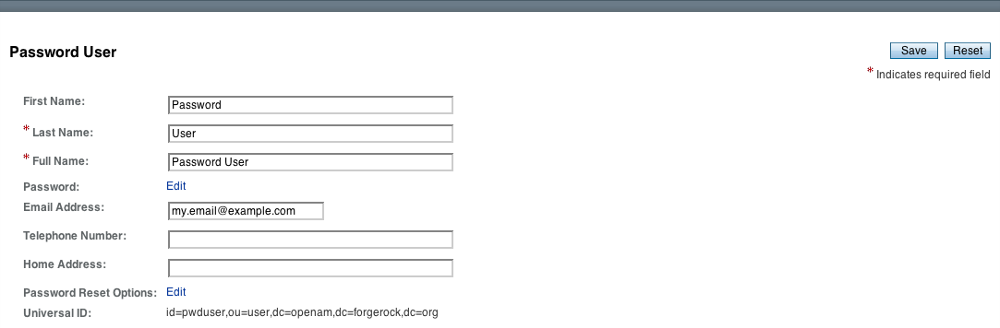
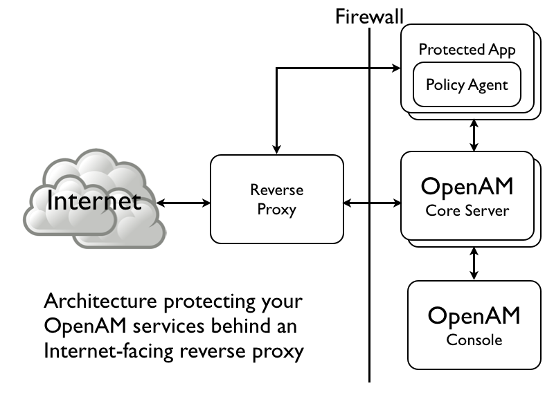

Software release date: November 08, 2013
Copyright © 2011-2013 ForgeRock, Inc.
Publication date: December 13, 2013
Guide to configuring and using OpenAM features. OpenAM provides open source Authentication, Authorization, Entitlement and Federation software.
- Preface
- 1. Administration Interfaces & Tools
- 2. Defining Authentication Services
- 3. Defining Authorization Policies
- 4. Defining Entitlements
- 5. Configuring Realms
- 6. Configuring Policy Agent Profiles
- 7. Working with Mobile Devices & Applications
- 8. Configuring Password Reset
- 9. Configuring Single Sign-On within One Domain
- 10. Configuring Cross-Domain Single Sign On
- 11. Configuring the Dashboard Service
- 12. Managing SAML 2.0 Federation
- 13. Managing OAuth 2.0 Authorization
- 14. Managing OpenID Connect 1.0 Authorization
- 15. Backing Up and Restoring OpenAM Configurations
- 16. Managing Certificates
- 17. Monitoring OpenAM Services
- 18. Tuning OpenAM
- 19. Changing Host Names
- 20. Securing OpenAM
- 21. Troubleshooting
- OpenAM Glossary
- A. Release Levels & Interface Stability
- Index
This guide shows you how to configure, maintain, and troubleshoot OpenAM for single sign on and authorization, password reset, account lockout, cross-domain single sign on, and federation.
This guide is written for access management designers and administrators who build, deploy, and maintain OpenAM services for their organizations. This guide covers the tasks you might repeat throughout the life cycle of an OpenAM release used in your organization.
This guide starts by introducing the OpenAM administrative interfaces and tools, and by showing how to manage OpenAM services. This guide continues by showing how to configure the principle features of OpenAM. It then demonstrates how to backup, restore, monitor, tune, and troubleshoot, OpenAM services.
You do not need to be an OpenAM wizard to learn something from this guide, though a background in access management and maintaining web application software can help. You do need some background in managing services on your operating systems and in your application servers. You can nevertheless get started with this guide, and then learn more as you go along.
Some items are formatted differently from other text, like
filenames, commands, and
literal values.
$ echo Command line sessions are formatted with lines folded for easier reading. In HTML documents click the [-] image for a flat, copy-paste version. Click the [+] image for an expanded, line-wrapped version. > /dev/null
In many cases, sections pertaining to UNIX, GNU/Linux, Mac OS X, BSD,
and so forth are marked (UNIX). Sections pertaining to Microsoft Windows
might be marked (Windows). To avoid repetition, however, file system
directory names are often given only in UNIX format as in
/path/to/server, even if the text applies to
C:\path\to\server as well.
Absolute path names usually begin with the placeholder
/path/to/, which might translate to
/opt/, C:\Program Files\, or
somewhere else on your system. Unless you install from native packages,
you create this location before you install.
class Test {
public static void main(String [] args) {
System.out.println("This is a program listing.");
}
}Core documentation, such as what you are now reading, aims to be technically accurate and complete with respect to the software documented. Core documentation therefore follows a three-phase review process designed to eliminate errors. The review process help to ensure that documentation you get with a stable release is technically accurate and complete.
Fully reviewed, published core documentation is available at docs.forgerock.org.
In-progress documentation can be found at each project site under the Developer Community projects page.
The ForgeRock Community Wikis provide additional documentation. We encourage you to join the community, so that you can update the Wikis, too.
After you sign up to join the ForgeRock community, you can edit the Community Wikis, and also log bugs and feature requests in the issue tracker.
If you have a question regarding a project but cannot find an answer in the project documentation or Wiki, browse to the Developer Community page for the project, where you can find details on joining the project mailing lists, and find links to mailing list archives. You can also suggest updates to documentation through the ForgeRock docs mailing list.
The Community Wikis describe how to check out and build source code. Should you want to contribute a patch, test, or feature, or want to author part of the core documentation, first have a look on the ForgeRock site at how to get involved.
This chapter provides a brief introduction to the web-based OpenAM console. It also lists and describes each command line interface (CLI) administration tool.
After you install OpenAM, login to the web-based console as OpenAM
Administrator, amadmin with the password you set during
installation. Navigate to a URL such as
http://openam.example.com:8080/openam. In this case,
communications proceed over the HTTP protocol to a FQDN
(openam.example.com), over a standard Java EE web container
port number (8080), to a specific deployment URI (/openam).

When you login as the OpenAM Administrator, amadmin,
you have access to the complete OpenAM console. In addition, OpenAM has set a
cookie in your browser that lasts until the session expires, you logout, or
you close your browser.[1]
When you login to the OpenAM console as a non-administrative end user, you do not have access to the administrative console. Your access is limited to a configuration page with your account information.
[D]
If you configure OpenAM to grant administrative capabilities to another user, then that user also sees the console after login. For instance, the OpenAM Administrator granted Kirsten Vaughan privileges to administer the OpenAM Top Level Realm. (This can be done through the console under Access Control > / (Top Level Realm) > Privileges. Kirsten has authorization to read and write policy properties and configured policy agent properties.) When Kirsten logs in, she sees only part of the console capabilities.[2]
[D]
The script tools in the following list have .bat
versions for use on Microsoft Windows.
You can install the following OpenAM command-line tools.
- agentadmin
This tool lets you manage OpenAM policy agent installations.
Unpack this tool as part of policy agent installation.
- ampassword
This tool lets you change OpenAM Administrator passwords, and display encrypted password values.
Install this from the
SSOAdminTools-11.0.0.zip.- amverifyarchive
This tool checks log archives for tampering.
Install this from
SSOAdminTools-11.0.0.zip.- openam-distribution-configurator-11.0.0.jar
This executable .jar file lets you perform a silent installation of an OpenAM server with a configuration file. For example, the java -jar configurator.jar -f config.file command couples the
configurator.jararchive with theconfig.file. Thesampleconfigurationfile provided with the tool is set up with the format for theconfig.file, and it must be adapted for your environment.Install this from
SSOConfiguratorTools-11.0.0.zip.- ssoadm
This tool provides a rich command-line interface for the configuration of OpenAM core services.
In a test environment you can activate
ssoadm.jspto access the same functionality in your browser. Once active, you can use many features of the ssoadm command, by navigating to thessoadm.jspURI, in a URL such ashttp://openam.example.com:8080/openam/ssoadm.jsp.Install this from
SSOAdminTools-11.0.0.zip.To translate settings applied in OpenAM console to service attributes for use with ssoadm, login to the OpenAM console as
amadminand access the services page, in a URL such ashttp://openam.example.com:8080/openam/services.jsp.
The commands access the OpenAM configuration over HTTP (or HTTPS). When using the administration commands in a site configuration, the commands access the configuration through the front end load balancer.
Sometimes a command cannot access the load balancer, because:
Network routing restrictions prevent the tool from accessing the load balancer.
For testing purposes, the load balancer uses a self-signed certificate for HTTPS, and the tool does not have a way of trusting the self-signed certificate.
The load balancer is temporarily unavailable.
In such cases you can work around the problem by adding an option such as the following to the java command in the tool's script. The option sets a comma-separated list of key-value pairs, where the key is the load balancer URL and the value is the server URL. (This all belongs on one line with no spaces in the script.)
-D"com.iplanet.am.naming.map.site.to.server=https://lb.example.com:443/openam= http://server1.example.com:8080/openam,https://lb.example.com:443/openam= http://server2.example.com:8080/openam"
In the above example the load balancer is on the lb
host, https://lb.example.com:443/openam is the site name,
and the OpenAM servers in the site are on server1 and
server2.
You can use the ssoadm.jsp page to access a large subset of the configuration capabilities of the ssoadm command. Yet, ssoadm.jsp is disabled by default to prevent potential misuse.
Login as OpenAM administrator,
amadmin.Click Configuration > Servers and Sites > Servers >
URL of your server.Click Advanced to display the Advanced Properties table, and then click Add. In the text boxes that appear, include the following information, and then click Save.
- Property Name
ssoadm.disabled
- Property Value
false
To see if the change worked, navigate to the URL of OpenAM with the
/ssoadm.jspURI. For the aforementioned URL, you would navigate tohttp://openam.example.com:8080/openam/ssoadm.jsp.
An authentication service confirms the identity of a user or a client application.
This chapter describes how to configure authentication in OpenAM.
Access management is about controlling access to resources. OpenAM plays a role similar to border control at an international airport. Instead of having each and every airline company deal with access to each destination, all airlines redirects passengers to border control. Border control then determines who each passenger is according to passport credentials. Border control also checks whether the identified passenger is authorized to fly to the destination corresponding to the ticket, perhaps based on visa credentials. Then, at the departure gate, an agent enforces the authorization from border control, allowing the passenger to board the plane as long as the passenger has not gotten lost, or tried to board the wrong plane, or swapped tickets with someone else. Thus, border control handles access management at the airport.
OpenAM is most frequently used to protect web-accessible resources. Users browse to a protected web application page. An agent installed on the server with the web application redirects the user to OpenAM for access management. OpenAM determines who the user is, and whether the user has the right to access the protected page. OpenAM then redirects the user back to the protected page, with authorization credentials that can be verified by the agent. The agent allows OpenAM authorized users access the page.
Notice that OpenAM basically needs to determine two things for access management: the identity of the user, and whether the user has access rights to the protected page. Authentication is how OpenAM identifies the user. This chapter covers how to set up the authentication process. Authorization is how OpenAM determines whether a user has access to a protected resource. Authorization is covered later.
For authentication, OpenAM uses credentials from the user or client application. It then uses defined mechanisms to validate credentials and complete the authentication. The authentication methods can vary. For example, passengers travelling on international flights authenticate with passports and visas. In contrast, passengers travelling on domestic flights might authenticate with an identity card or a driver's license. Customers withdrawing cash from an ATM authenticate with a card and a PIN.
OpenAM allows you to configure authentication processes and then customize how they are applied. OpenAM uses authentication modules to handle different ways of authenticating. Basically, each authentication module handles one way of obtaining and verifying credentials. You can chain different authentication modules together. In OpenAM, this is called authentication chaining. Each authentication module can be configured to specify the continuation and failure semantics with one of the following four flags: required, optional, requisite, or sufficient.[3]
When a required module fails, the rest of the chain is processed, but the authentication fails.
A required module might be used for login with email and password, but then fall through to another module to handle new users who have not yet signed up.
When an optional module fails, authentication continues.
An optional module might be used to permit a higher level of access if the user can present a X.509 certificate for example.
When a requisite module fails, authentication fails and authentication processing stops.
A requisite module might be used with exclusive SSO.
When a sufficient succeeds, authentication is successful and later modules in the chain are skipped.
You could set Windows Desktop SSO as sufficient, so authenticated Windows users are let through, whereas web users have to traverse another authentication module such as one requiring an email address and a password.
With OpenAM, you can further set authentication levels per module, with higher levels being used typically to allow access to more restricted resources. The OpenAM SPIs also let you develop your own authentication modules, and post-authentication plugins. Client applications can specify the authentication level, module, user, and authentication service to use among those you have configured. As described later in this guide, you can use realms to organize which authentication process applies for different applications or different domains, perhaps managed by different people.
When a user successfully authenticates, OpenAM creates a session, which allows OpenAM to manage that user's access to resources. In some deployments you need to limit how many active sessions a user can have at a given time. For example, you might want to prevent a user from using more than two devices at once. See Section 2.7, “Configuring Session Quotas” for instructions.
OpenAM leaves the authentication process flexible so that you can adapt how it works to your situation. Although at first the number of choices can seem daunting, now that you understand the basic process, you begin to see how choosing authentication modules and arranging them in authentication chains lets you use OpenAM to protect access to a wide range of applications used in your organization.
- 2.2.1. Hints For the Active Directory Authentication Module
- 2.2.2. Hints For the Adaptive Risk Authentication Module
- 2.2.3. Hints For the Anonymous Authentication Module
- 2.2.4. Hints For the Certificate Authentication Module
- 2.2.5. Hints For the Core Authentication Module
- 2.2.6. Hints For the Data Store Authentication Module
- 2.2.7. Hints For the Device Print Authentication Module
- 2.2.8. Hints For the Federation Authentication Module
- 2.2.9. Hints For the HOTP Authentication Module
- 2.2.10. Hints For the HTTP Basic Authentication Module
- 2.2.11. Hints For the JDBC Authentication Module
- 2.2.12. Hints For the LDAP Authentication Module
- 2.2.13. Hints For the Membership Authentication Module
- 2.2.14. Hints For the MSISDN Authentication Module
- 2.2.15. Hints For the OATH Module
- 2.2.16. Hints For the OAuth 2.0 Authentication Module
- 2.2.17. Hints for the Persistent Cookie Module
- 2.2.18. Hints For the RADIUS Authentication Module
- 2.2.19. Hints For the SAE Authentication Module
- 2.2.20. Hints For the SecurID Authentication Module
- 2.2.21. Hints For the Windows Desktop SSO Authentication Module
- 2.2.22. Hints For the Windows NT Authentication Module
- 2.2.23. Hints For the WSSAuth Authentication Module
The OpenAM console provides two places where the OpenAM administrator can configure authentication modules.
Under Configuration > Authentication, you configure available modules for use throughout OpenAM. What you set up here is inherited for use elsewhere.
Under Access Control >
Realm Name> Authentication, you configure modules for your realm. What you set up at this level inherits from the global configuration, but you can override what is inherited. You can also add your own modules if necessary.
The configuration of individual modules depend on its function. The configuration of an Active Directory over LDAP user authentication module requires connection information and details about where to search for users. In contrast, the configuration of the HOTP module for OTP authentication requires data about the password length and the mail server or SMS gateway for to send the password during authentication.
OpenAM connects to Active Directory over Lightweight Directory Access Protocol (LDAP). OpenAM provides separate Active Directory and LDAP modules to support the use of both Active Directory and another directory service in an authentication chain.
ssoadm service name:
sunAMAuthADService
- Primary Active Directory Server, Secondary Active Directory Server
The default port for LDAP is 389. If you are connecting to Active Directory over SSL, the default port for LDAP/SSL is 636.
To allow users to change passwords through OpenAM, Active Directory requires that you connect over SSL.
If you want to use SSL or TLS for security, then scroll down to enable SSL/TLS Access to Active Directory Server. Make sure that OpenAM can trust the Active Directory certificate when using this option.
OpenAM first attempts to contact primary servers. If no primary server is available, then OpenAM attempts to contact secondaries.
When authenticating users from a directory server that is remote from OpenAM, set both the primary and secondary server values.
ssoadm attributes: primary is
iplanet-am-auth-ldap-server; secondary isiplanet-am-auth-ldap-server2- DN to Start User Search
LDAP data is organized hierarchically, a bit like a file system on Windows or UNIX. More specific DNs likely result in better performance. When configuring the module for a particular part of the organization, you can perhaps start searches from a specific organizational unit such as
OU=sales,DC=example,DC=com.If multiple entries exist with identical search attribute values, make this value specific enough to return only one entry.
ssoadm attribute:
iplanet-am-auth-ldap-base-dn- Bind User DN, Bind User Password
If OpenAM stores attributes in Active Directory, for example to manage account lockout, or if Active Directory requires that OpenAM authenticate in order to read users' attributes, then OpenAM needs the DN and password to authenticate to Active Directory.
The default is
amldapuser. If the administrator authentication chain (default:ldapService) has been configured to include only the Active Directory module, then make sure that the password is correct before you logout. If it is incorrect, you will be locked out. If you do get locked out, you can login with the super user DN, which by default isuid=amAdmin,ou=People,, whereOpenAM-deploy-baseOpenAM-deploy-basewas set during OpenAM configuration.ssoadm attributes:
iplanet-am-auth-ldap-bind-dnandiplanet-am-auth-ldap-bind-passwd- Attributes Used to Retrieve User Profile, Attributes Used to Search for a User to be Authenticated, User Search Filter, Search Scope
LDAP searches for user entries return entries with attribute values matching the filter you provide. For example if you search under
CN=Users,DC=example,DC=comwith a filter"(MAIL=bjensen@example.com)", then the directory returns the entry that hasMAIL=bjensen@example.com. In this example the attribute used to search for a user ismail. Multiple attribute values mean the user can authenticate with any one of the values. For example, if you have bothuidandmail, then Barbara Jensen can authenticate with eitherbjensenorbjensen@example.com.The User Search Filter text box provides a more complex filter. For example, if you search on
mailand add User Search Filter(objectClass=inetOrgPerson), then OpenAM uses the resulting search filter(&(mail=, whereaddress) (objectClass=inetOrgPerson))addressis the mail address provided by the user.This controls how and the level of the directory that will be searched. You can set the search to run at a high level or against a specific area.
OBJECT will search only for the entry specified as the DN to Start User Search.
ONELEVEL will search only the entries that are directly children of that object.
SUBTREE will search the entry specified and every entry under it.
ssoadm attributes:
iplanet-am-auth-ldap-user-naming-attribute,iplanet-am-auth-ldap-user-search-attributes,iplanet-am-auth-ldap-search-filter, andiplanet-am-auth-ldap-search-scope- SSL/TLS Access to Active Directory Server
If you enable SSL/TLS, OpenAM must be able to trust Active Directory certificates, either because the Active Directory certificates were signed by a CA whose certificate is already included in the trust store used by the container where OpenAM runs, or because you imported the certificates into the trust store.
ssoadm attribute:
iplanet-am-auth-ldap-ssl-enabled- Return User DN to DataStore
When enabled, and OpenAM uses Active Directory as the user store, the module returns the DN rather than the User ID, so the bind for authentication can be completed without a search to retrieve the DN.
ssoadm attribute:
iplanet-am-auth-ldap-return-user-dn- User Creation Attributes
This list lets you map (external) attribute names from Active Directory to (internal) attribute names used by OpenAM.
ssoadm attribute:
iplanet-am-ldap-user-creation-attr-list- LDAP Connection Heartbeat Interval
Specifies how often OpenAM should send a heartbeat request to the directory server to ensure that the connection does not remain idle. Some network administrators configure firewalls and load balancers to drop connections that are idle for too long. You can turn this off by setting the value to 0 or to a negative number. To set the units for the interval use LDAP Connection Heartbeat Time Unit.
Default: 1
ssoadm attribute:
openam-auth-ldap-heartbeat-interval- LDAP Connection Heartbeat Time Unit
Specifies the time unit corresponding to LDAP Connection Heartbeat Interval.
Default: minute
ssoadm attribute:
openam-auth-ldap-heartbeat-interval- Authentication Level
Sets the authentication level used to indicate the level of security associated with the module. The value can range from 0 to any positive integer.
ssoadm attribute:
sunAMAuthADAuthLevel
The Adaptive Risk module is designed to assess risk during authentication so that OpenAM can determine whether to require the user to complete further authentication steps. After configuring the Adaptive Risk module, insert it in your authentication chain with criteria set to sufficient as shown in the following example.

In the example authentication chain shown, OpenAM has users authenticate first using the LDAP module providing a user ID and password combination. Upon success, OpenAM calls the Adaptive Risk module. The Adaptive Risk module assesses the risk based on your configured parameters. If the Adaptive Risk module calculates a total score below the threshold you set, the module returns success, and OpenAM finishes authentication processing without requiring further credentials. Otherwise the Adaptive Risk module evaluates the score to be above the risk threshold, and returns failure. OpenAM then calls the HOTP module, requiring the user to authenticate with a one-time password delivered to her by email or by SMS to her mobile phone.
When you configure the Adaptive Risk module to save cookies and
profile attributes after successful authentication, OpenAM performs the
save as post-authentication processing, only after the entire authentication
chain returns success. You must set up OpenAM to save the data as part of
post-authentication processing by editing the authentication chain to add
org.forgerock.openam.authentication.modules.adaptive.Adaptive
to the list of post authentication plugins.
ssoadm service name:
sunAMAuthAdaptiveService
- Authentication Level
Sets the authentication level used to indicate the level of security associated with the module. The value can range from 0 to any positive integer.
ssoadm attribute:
openam-auth-adaptive-auth-level- Risk Threshold
Risk threshold score. If the sum of the Scores is greater than the threshold, the Adaptive Risk module returns failure. Default: 1
ssoadm attribute:
openam-auth-adaptive-auth-threshold
- Failed Authentication Check
When enabled, check the user profile for authentication failures since the last successful login. This check therefore requires OpenAM to have access to the user profile, and Account Lockout to be enabled (otherwise OpenAM does not record authentication failures).
ssoadm attribute:
openam-auth-adaptive-failure-check- Score
Value to add to the total score if the user fails the Failed Authentication Check. Default: 1
ssoadm attribute:
openam-auth-adaptive-failure-score- Invert Result
When selected, add the Score to the total score if the user passes the Failed Authentication Check.
ssoadm attribute:
openam-auth-adaptive-failure-invert
- IP Range Check
When enabled, check whether the client IP address is within one of the specified IP Ranges.
ssoadm attribute:
openam-auth-adaptive-ip-range-check- IP Range
For IPv4, specifies a list of IP ranges either in CIDR-style notation (
x.x.x.x/YYx.x.x.x-y.y.y.yx.x.x.xtoy.y.y.y).For IPv6, specifies a list of IP ranges either in CIDR-style notation (
X:X:X:X:X:X:X:X/YYX:X:X:X:X:X:X:X-Y:Y:Y:Y:Y:Y:Y:YX:X:X:X:X:X:X:XtoY:Y:Y:Y:Y:Y:Y:Y).ssoadm attribute:
openam-auth-adaptive-ip-range-range- Score
Value to add to the total score if the user fails the IP Range Check. Default: 1
ssoadm attribute:
openam-auth-adaptive-ip-range-score- Invert Result
When selected, add the Score to the total score if the user passes the IP Range Check.
ssoadm attribute:
openam-auth-adaptive-ip-range-invert
- IP History Check
When enabled, check whether the client IP address matches one of the known values stored on the profile attribute you specify. This check therefore requires that OpenAM have access to the user profile.
ssoadm attribute:
openam-auth-adaptive-ip-history-check- History Size
Specifies how many IP address values to retain on the profile attribute you specify. Default: 5
ssoadm attribute:
openam-auth-ip-adaptive-history-count- Profile Attribute Name
Name of the user profile attribute on which to store known IP addresses. Default:
iphistoryssoadm attribute:
openam-auth-adaptive-ip-history-attribute- Save Successful IP Address
When enabled, save new client IP addresses to the known IP address list following successful authentication.
ssoadm attribute:
openam-auth-adaptive-ip-history-save- Score
Value to add to the total score if the user fails the IP History Check. Default: 1
ssoadm attribute:
openam-auth-adaptive-ip-history-score- Invert Result
When selected, add the Score to the total score if the user passes the IP History Check.
ssoadm attribute:
openam-auth-adaptive-ip-history-invert
- Cookie Value Check
When enabled, check whether the client browser request has the specified cookie and optional cookie value.
ssoadm attribute:
openam-auth-adaptive-known-cookie-check- Cookie Name
Specifies the name of the cookie for which OpenAM checks when you enable the Cookie Value Check.
ssoadm attribute:
openam-auth-adaptive-known-cookie-name- Cookie Value
Specifies the value of the cookie for which OpenAM checks. If no value is specified, OpenAM does not check the cookie value.
ssoadm attribute:
openam-auth-adaptive-known-cookie-value- Save Cookie Value on Successful Login
When enabled, save the cookie as specified in the client's browser following successful authentication. If no Cookie Value is specified, the value is set to 1.
ssoadm attribute:
openam-auth-adaptive-known-cookie-save- Score
Value to add to the total score if user passes the Cookie Value Check. Default: 1
ssoadm attribute:
openam-auth-adaptive-known-cookie-score- Invert Result
When selected, add the Score to the total score if the user passes the Cookie Value Check.
ssoadm attribute:
openam-auth-adaptive-known-cookie-invert
- Device Registration Cookie Check
When enabled, check whether the client browser request has the specified cookie with the correct device registration identifier as the value.
ssoadm attribute:
openam-auth-adaptive-device-cookie-check- Cookie Name
Specifies the name of the cookie for the Device Registration Cookie Check. Default: Device
ssoadm attribute:
openam-auth-adaptive-device-cookie-name- Save Device Registration on Successful Login
When enabled, save the specified cookie with a hashed device identifier value in the client's browser following successful authentication.
ssoadm attribute:
openam-auth-adaptive-device-cookie-save- Score
Value to add to the total score if the user fails the Device Registration Cookie Check. Default: 1
ssoadm attribute:
openam-auth-adaptive-device-cookie-score- Invert Result
When selected, add the Score to the total score if the user passes the Device Registration Cookie Check.
ssoadm attribute:
openam-auth-adaptive-device-cookie-invert
- Time Since Last Login Check
When enabled, check whether the client browser request has the specified cookie that holds the encrypted last login time, and check that the last login time is more recent than a maximum number of days you specify.
ssoadm attribute:
openam-auth-adaptive-time-since-last-login-check- Cookie Name
Specifies the name of the cookie holding the encrypted last login time value.
ssoadm attribute:
openam-auth-adaptive-time-since-last-login-cookie-name- Max Time since Last Login
Specifies a threshold age of the last login time in days. If the client's last login time is more recent than the number of days specified, then the client successfully passes the check.
ssoadm attribute:
openam-auth-adaptive-time-since-last-login-value- Save time of Successful Login
When enabled, save the specified cookie with the current time encrypted as the last login value in the client's browser following successful authentication.
ssoadm attribute:
openam-auth-adaptive-time-since-last-login-save- Score
Value to add to the total score if the user fails the Time Since Last Login Check. Default: 1
ssoadm attribute:
openam-auth-adaptive-time-since-last-login-score- Invert Result
When selected, add the Score to the total score if the user passes the Time Since Last Login Check.
ssoadm attribute:
openam-auth-adaptive-time-since-last-login-invert
- Profile Risk Attribute check
When enabled, check whether the user profile contains the specified attribute and value.
ssoadm attribute:
openam-auth-adaptive-risk-attribute-check- Attribute Name
Specifies the attribute to check on the user profile for the specified value.
ssoadm attribute:
openam-auth-adaptive-risk-attribute-name- Attribute Value
Specifies the value to match on the profile attribute. If the attribute is multi-valued, a single match is sufficient to pass the check.
ssoadm attribute:
openam-auth-adaptive-risk-attribute-value- Score
Value to add to the total score if the user fails the Profile Risk Attribute Check. Default: 1
ssoadm attribute:
openam-auth-adaptive-risk-attribute-score- Invert Result
When selected, add the Score to the total score if the user passes the Profile Risk Attribute Check.
ssoadm attribute:
openam-auth-adaptive-risk-attribute-invert
- Geolocation Country Code Check
When enabled, check whether the client IP address location matches a country specified in the Valid Country Codes list. The
ssoadm attribute:
forgerock-am-auth-adaptive-geo-location-check- Geolocation Database location
Path to GeoIP data file used to convert IP addresses to country locations. The geolocation database is not packaged with OpenAM. You can downloaded the GeoIP Country database from MaxMind. Use the binary .dat file format, rather than .csv. You can use the GeoLite Country database for testing.
ssoadm attribute:
openam-auth-adaptive-geo-location-database- Valid Country Codes
Specifies the list of country codes to match. Use
|to separate multiple values.ssoadm attribute:
openam-auth-adaptive-geo-location-values.- Score
Value to add to the total score if the user fails the Geolocation Country Code Check. Default: 1
ssoadm attribute:
openam-auth-adaptive-geo-location-score- Invert Result
When selected, add the Score to the total score if the user passes the Geolocation Country Code Check.
ssoadm attribute:
openam-auth-adaptive-geo-location-invert
- Request Header Check
When enabled, check whether the client browser request has the specified header with the correct value.
ssoadm attribute:
openam-auth-adaptive-req-header-check- Request Header Name
Specifies the name of the request header for the Request Header Check.
ssoadm attribute:
openam-auth-adaptive-req-header-name- Request Header Value
Specifies the value of the request header for the Request Header Check.
ssoadm attribute:
openam-auth-adaptive-req-header-value- Score
Value to add to the total score if the user fails the Request Header Check. Default: 1
ssoadm attribute:
openam-auth-adaptive-req-header-score- Invert Result
When selected, add the Score to the total score if the user passes the Request Header Check.
ssoadm attribute:
openam-auth-adaptive-req-header-invert
This module lets you track and manage anonymous users, perhaps forcing further authentication later when a user moves to access resources that require more protection.
ssoadm service name:
iPlanetAMAuthAnonymousService
- Valid Anonymous Users
Specifies valid anonymous user IDs in addition to the default.
ssoadm attribute:
iplanet-am-auth-anonymous-users-list- Default Anonymous User Name
Specifies the user ID assigned by the module if the Valid Anonymous Users list is empty. Default:
anonymousssoadm attribute:
iplanet-am-auth-anonymous-default-user-name- Case Sensitive User IDs
Determines whether case matters for anonymous user IDs.
ssoadm attribute:
iplanet-am-auth-anonymous-case-sensitive- Authentication Level
Sets the authentication level used to indicate the level of security associated with the module. The value can range from 0 to any positive integer.
ssoadm attribute:
iplanet-am-auth-anonymous-auth-level
X.509 digital certificates can enable secure authentication without the need for user names and passwords or other credentials. Certificate authentication can be handy to manage authentication by applications. If all certificates are signed by a recognized Certificate Authority (CA), then you might get away without additional configuration. If you need to look up public keys of OpenAM clients, this module can also look up public keys in an LDAP directory server.
When you store certificates and certificate revocation lists (CRL) in an LDAP directory service, you must configure both how to access the directory service and also how to look up the certificates and CRLs, based on the fields in the certificates that OpenAM clients present to authenticate.
Access to the LDAP server and how to search for users is similar
to LDAP module configuration as in Section 2.2.12, “Hints For the LDAP Authentication Module”.
The primary difference is that, unlike for LDAP configuration, OpenAM
retrieves the user identifier from a field in the certificate that the
client application presents, then uses that identifier to search for the
LDAP directory entry that holds the certificate, which should match the
certificate presented. For example, if the Subject field of a typical
certificate has a DN C=FR, O=Example Corp, CN=Barbara
Jensen, and Barbara Jensen's entry in the directory has
cn=Barbara Jensen, then you can use CN=Barbara
Jensen from the Subject DN to search for the entry with
cn=Barbara Jensen in the directory.
ssoadm service name:
iPlanetAMAuthCertService
- Match Certificate in LDAP
When enabled, OpenAM searches for a match for the user's certificate in the LDAP directory. If a match is found and not revoked according to a CRL or OCSP validation, then authentication succeeds.
ssoadm attribute:
iplanet-am-auth-cert-check-cert-in-ldap- Subject DN Attribute Used to Search LDAP for Certificates
Indicates which attribute and value in the certificate Subject DN is used to find the LDAP entry holding the certificate.
Default: CN
ssoadm attribute:
iplanet-am-auth-cert-attr-check-ldap- Match Certificate to CRL
When enabled, OpenAM checks whether the certificate has been revoked according to a CRL in the LDAP directory.
ssoadm attribute:
iplanet-am-auth-cert-check-crl- Issuer DN Attribute Used to Search LDAP for CRLs
Indicates which attribute and value in the certificate Issuer DN is used to find the CRL in the LDAP directory.
Default: CN
If only one attribute is specified, the LDAP search filter used to find the CRL based on the Subject DN of the CA certificate is
(.attr-name=attr-value-in-subject-DN)For example, if the subject DN of the issuer certificate is
C=US, CN=Some CA, serialNumber=123456, and the attribute specified isCN, then the LDAP search filter used to find the CRL is(CN=Some CA).In order to distinguish among different CRLs for the same CA issuer, specify multiple attributes separated by commas (
,) in the same order they occur in the subject DN. When multiple attribute names are provided in a comma-separated list, the LDAP search filter used is(cn=.attr1=attr1-value-in-subject-DN,attr2=attr2-value-in-subject-DN,...,attrN=attrN-value-in-subject-DN)For example, if the subject DN of the issuer certificate is
C=US, CN=Some CA, serialNumber=123456, and the attributes specified areCN,serialNumber, then the LDAP search filter used to find the CRL is(cn=CN=Some CA,serialNumber=123456).ssoadm attribute:
iplanet-am-auth-cert-attr-check-crl- HTTP Parameters for CRL Update
Your certificate authority should provide the URL to use here, from which OpenAM can get CRL updates.
ssoadm attribute:
iplanet-am-auth-cert-param-get-crl- Match CA Certificate to CRL
When enabled, OpenAM checks the CRL against the CA certificate to ensure it has not been compromised.
ssoadm attribute:
sunAMValidateCACert- Cache CRLs in Memory
When enabled, CRLs will be cached.
ssoadm attribute:
openam-am-auth-cert-attr-cache-crl- Update CA CRLs from CRLDistributionPoint
When enabled, OpenAM updates CRLs from the LDAP directory store.
ssoadm attribute:
openam-am-auth-cert-update-crl- OCSP Validation
Enable this to use Online Certificate Status Protocol (OCSP) instead of CRLs to check certificates' revocation status.
If you enable this, you also must configure OSCP for OpenAM under Configuration > Server and Sites > Default Server Settings, or Configuration > Server and Sites >
Server Name> Security.ssoadm attribute:
iplanet-am-auth-cert-check-ocsp- LDAP Server Where Certificates are Stored
Identifies the LDAP server with certificates. Remember to specify URLs with appropriate port numbers (389 for unencrypted LDAP, 636 for LDAP over SSL). When configuring a secure connection, scroll down to enable Use SSL/TLS for LDAP Access.
ssoadm attribute:
iplanet-am-auth-cert-ldap-provider-url- LDAP Search Start or Base DN
Valid base DN for the LDAP search, such as
dc=example,dc=com.ssoadm attribute:
iplanet-am-auth-cert-start-search-loc- LDAP Server Authentication User, LDAP Server Authentication Password
If OpenAM stores attributes in the LDAP directory, for example to manage account lockout, or if the LDAP directory requires that OpenAM authenticate in order to read users' attributes, then OpenAM needs the DN and password to authenticate to the LDAP directory.
ssoadm attributes:
iplanet-am-auth-cert-principal-user, andiplanet-am-auth-cert-principal-passwd- Use SSL/TLS for LDAP Access
If you use SSL/TLS for LDAP access, OpenAM must be able to trust the LDAP server certificate.
ssoadm attribute:
iplanet-am-auth-cert-use-ssl- Certificate Field Used to Access User Profile
If the user profile is in a different entry from the user certificate, then this can be different from subject DN attribute used to find the entry with the certificate. When you select other, provide an attribute name in the Other Certificate Field Used to Access User Profile text box.
ssoadm attribute:
iplanet-am-auth-cert-user-profile-mapper- Other Certificate Field Used to Access User Profile
This field is only used if the Certificate Field Used to Access User Profile attribute is set to other. This field allows a custom certificate field to be used as the basis of the user search.
ssoadm attribute:
iplanet-am-auth-cert-user-profile-mapper-other- SubjectAltNameExt Value Type to Access User Profile
Use this if you want to look up the user profile from an RFC 822 style name, or a User Principal Name as used in Active Directory.
ssoadm attribute:
iplanet-am-auth-cert-user-profile-mapper-ext- Trusted Remote Hosts
Hosts trusted to send certificates to OpenAM, such as load balancers doing SSL termination, or OpenAM distributed authentication UI instances.
ssoadm attribute:
iplanet-am-auth-cert-gw-cert-auth-enabled- HTTP Header Name for Client Certificate
If you configure trusted hosts, specify the HTTP header name for the client certificate inserted by the trusted host.
ssoadm attribute:
sunAMHttpParamName- Authentication Level
Sets the authentication level used to indicate the level of security associated with the module. The value can range from 0 to any positive integer.
ssoadm attribute:
iplanet-am-auth-cert-auth-level
The Core module is a meta-module.
The Core module lets you set up the list of modules available, and specify what types of client applications can authenticate with which modules. It also lets you configure connection pools for access to directory servers, and whether to retain objects used during authentication for use during logout. Furthermore, the Core module lets you set defaults used when configuring authentication in a particular realm.
The Core Authentication module is divided into seven sections:
ssoadm service name:
iPlanetAMAuthService
The Global Attributes includes the list of available modules, LDAP connection settings, authentication process options, and an option to make the XUI the default interface. The Global Attributes are defined in the Authentication Configuration section of the OpenAM Reference Guide.
This section of the Core Authentication module is on the Realm Attributes section page before options for Persistent Cookies.
- User Profile, User Profile
Whether a user profile needs to exist in the user data store, or should be created on successful authentication.
- Dynamic
Specifies that on successful authentication the Authentication Service creates a user profile if one does not already exist. OpenAM then issues the SSOToken. OpenAM creates the user profile in the user data store configured for the realm.
- Dynamic with User Alias
Specifies that on successful authentication the Authentication Service creates a user profile that contains the User Alias List attribute which defines one or more aliases that for mapping a user's multiple profiles.
- Ignored
Specifies that a user profile is not required for the Authentication Service to issue an SSOToken after a successful authentication.
- Required
Specifies that on successful authentication the user must have a user profile in the user data store configured for the realm in order for the Authentication Service to issue an SSOToken.
ssoadm attribute:
iplanet-am-auth-dynamic-profile-creation- User Profile Dynamic Creation Default Roles
Specifies the Distinguished Name (DN) of a role to be assigned to a new user whose profile is created when either of the Dynamic options is selected under the User Profile attribute. There are no default values. The role specified must be within the realm for which the authentication process is configured.
This role can be either an OpenAM or Sun DSEE role, but it cannot be a filtered role. If you wish to automatically assign specific services to the user, you have to configure the Required Services attribute in the User Profile.
ssoadm attribute:
iplanet-am-auth-default-role- Alias Search Attribute Name
After a user is successfully authenticated, the user's profile is retrieved. OpenAM first searches for the user based on the data store settings. If that fails to find the user, OpenAM will use the attributes listed here to lookup the user profile. This setting accepts any data store specific attribute name.
ssoadm attribute:
iplanet-am-auth-alias-attr-name
This section of the Core Authentication module covers the Persistent Cookie options.
Note
Two methods are available in OpenAM to configure persistent cookies. The options described here and in Section 2.5, “Authenticating To OpenAM” specify one method. There is also a new module, described in Section 2.2.17, “Hints for the Persistent Cookie Module”. If you want to set up persistent cookies, you are encouraged to use the new module. The options described here have no effect on that module.
- Persistent Cookie Mode
Determines whether users can return to their authenticated session after restarting the browser. When enabled, the persistent cookie can be used to reauthenticate until the persistent cookie expires (as specified by the value of the Persistent Cookie Maximum Time attribute), or until the user explicitly logs out. By default, the Authentication Service uses only memory cookies (expires when the browser is closed).
The client must explicitly request a persistent cookie by adding
iPSPCookie=yesas a parameter to the login URL. OpenAM sets aDProPCookieas described in Section 2.5, “Authenticating To OpenAM”.ssoadm attribute:
iplanet-am-auth-persistent-cookie-mode- Persistent Cookie Maximum Time
Specifies the interval after which a persistent cookie expires. The interval begins when the user's session is successfully authenticated. The maximum value is 2147483647 (in seconds, so a bit more than 68 years). The field accepts any integer value less than the maximum.
ssoadm attribute:
iplanet-am-auth-persistent-cookie-time- Persistent Cookie Authentication Level
Sets the authentication level used to indicate the level of security associated with the module. The value can range from 0 to any positive integer.
ssoadm attribute:
openam-auth-pcookie-auth-level
This section of the Core Authentication module includes details on how account lockouts can be configured.
- Login Failure Lockout Mode
Selecting this attribute enables a physical lockout. Physical lockout will inactivate an LDAP attribute (defined in the Lockout Attribute Name property) in the user's profile. This attribute works in conjunction with several other lockout and notification attributes.
ssoadm attribute:
iplanet-am-auth-login-failure-lockout-mode- Login Failure Lockout Count
Defines the number of attempts that a user has to authenticate, within the time interval defined in Login Failure Lockout Interval, before being locked out.
ssoadm attribute:
iplanet-am-auth-login-failure-count- Login Failure Lockout Interval
Defines the time in minutes during which failed login attempts are counted. If one failed login attempt is followed by a second failed attempt, within this defined lockout interval time, the lockout count starts, and the user is locked out if the number of attempts reaches the number defined in Login Failure Lockout Count. If an attempt within the defined lockout interval time proves successful before the number of attempts reaches the number defined in Login Failure Lockout Count, the lockout count is reset.
ssoadm attribute:
iplanet-am-auth-login-failure-duration- Email Address to Send Lockout Notification
Specify one (or more) email address(es) to which notification is sent if a user lockout occurs.
Separate multiple addresses with spaces, and append
|to addresses for recipients in non-English locales.locale|charsetssoadm attribute:
iplanet-am-auth-lockout-email-address- Warn User After N Failures
The number of authentication failures after which OpenAM displays a warning message that the user will be locked out.
ssoadm attribute:
iplanet-am-auth-lockout-warn-user- Login Failure Lockout Duration
Defines how many minutes a user must wait after a lockout before attempting to authenticate again. Entering a value greater than 0 enables memory lockout and disables physical lockout. Memory lockout means the user's account is locked in memory for the number of minutes specified. The account is unlocked after the time period has passed.
ssoadm attribute:
iplanet-am-auth-lockout-duration- Lockout Duration Multiplier
Defines a value with which to multiply the value of the Login Failure Lockout Duration attribute for each successive lockout. For example, if Login Failure Lockout Duration is set to 3 minutes, and the Lockout Duration Multiplier is set to 2, the user is locked out of the account for 6 minutes. Once the 6 minutes has elapsed, if the user again provides the wrong credentials, the lockout duration is then 12 minutes. With the Lockout Duration Multiplier, the lockout duration is incrementally increased based on the number of times the user has been locked out.
ssoadm attribute:
sunLockoutDurationMultiplier- Lockout Attribute Name
Defines the LDAP attribute used for physical lockout. The default value is
inetuserstatus, although the field in the OpenAM console is empty. The Lockout Attribute Value field must also contain an appropriate value.ssoadm attribute:
iplanet-am-auth-lockout-attribute-name- Lockout Attribute Value
Specifies the action to take on the attribute defined in Lockout Attribute Name. The default value is
inactive, although the field in the OpenAM console is empty. The Lockout Attribute Name field must also contain an appropriate value.ssoadm attribute:
iplanet-am-auth-lockout-attribute-value- Invalid Attempts Data Attribute Name
Specifies the LDAP attribute used to hold the number of failed authentication attempts towards Login Failure Lockout Count.
ssoadm attribute:
sunAMAuthInvalidAttemptsDataAttrName- Store Invalid Attempts in Data Store
Enables the storage of information regarding failed authentication attempts as the value of the Invalid Attempts Data Attribute Name in the user data store. In order to store data in this attribute, the OpenAM schema has to be loaded. Information stored includes number of invalid attempts, time of last failed attempt, lockout time and lockout duration. Storing this information in the identity repository allows it to be shared among multiple instances of OpenAM.
ssoadm attribute:
sunStoreInvalidAttemptsInDS
This section of the Core Authentication module includes general options.
- Default Authentication Locale
Specifies the default language subtype to be used by the Authentication Service. The default value is
en_US.ssoadm attribute:
iplanet-am-auth-locale- Identity Types
Lists the type or types of identities used during a profile lookup. You can choose more than one to search on multiple types if you would like OpenAM to conduct a second lookup if the first lookup fails. Default: Agent and User
- Agent
Searches for identities under your agents.
- agentgroup
Searches for identities according to your established agent group.
- agentonly
Searches for identities only under your agents.
- Group
Searches for identities according to your established groups.
- User
Searches for identities according to your users.
ssoadm attribute:
sunAMIdentityType- Pluggable User Status Event Classes
Specifies one or more Java classes used to provide a callback mechanism for user status changes during the authentication process. The Java class must implement the
com.sun.identity.authentication.spi.AMAuthCallBackOpenAM interface. OpenAM supports account lockout and password changes. OpenAM supports password changes through the LDAP authentication module, and so the feature is only available for the LDAP module.A .jar containing the user status event class belongs in the
WEB-INF/libdirectory of the deployed OpenAM instance. If you do not build a .jar, add the class files underWEB-INF/classes.ssoadm attribute:
sunAMUserStatusCallbackPlugins- Default Authentication Level
Specifies the default authentication level for authentication modules.
ssoadm attribute:
iplanet-am-auth-default-auth-level
This section of the Core Authentication module includes basic security options.
- Module Based Authentication
Enables users to authenticate using module-based authentication. Otherwise, all attempts at authentication using the
module=login parameter result in failure. It is recommended that this be turned off in a production environment.module-namessoadm attribute:
sunEnableModuleBasedAuth- Valid goto URL domains
List external domains to which clients can be redirected after authentication. This attribute requires valid DNS domains that reflect the set policy rules, such as https://website.example.com/* or https://website.example.com/*?*.
ssoadm attribute:
iplanet-am-auth-valid-goto-domains- Zero Page Login
Enables the administrator to allow users to authenticate to a single authentication screen using GET request parameters. Enable this with caution as it can allow credentials to be cached.
ssoadm attribute:
openam.auth.zero.page.login.enabled
This section of the Core Authentication module specifies options for post authentication processing.
- Default Success Login URL
Accepts a list of values that specifies where users are directed after successful authentication. The format of this attribute is
client-type|URL/openam/console. Values that do not specify HTTP have that appended to the deployment URI.ssoadm attribute:
iplanet-am-auth-login-success-url- Default Failure Login URL
Accepts a list of values that specifies where users are directed after authentication has failed. The format of this attribute is
client-type|URLssoadm attribute:
iplanet-am-auth-login-failure-url- Authentication Post Processing Classes
Specifies one or more Java classes used to customize post authentication processes for successful or unsuccessful logins. The Java class must implement the
com.sun.identity.authentication.spi.AMPostAuthProcessInterfaceOpenAM interface.A .jar containing the post processing class belongs in the
WEB-INF/libdirectory of the deployed OpenAM instance. If you do not build a .jar, add the class files underWEB-INF/classes. For deployment, add the .jar or classes into a custom OpenAM .war file.ssoadm attribute:
iplanet-am-auth-post-login-process-class- Generate UserID Mode
When enabled, the Membership module generates a list of alternate user identifiers if the one entered by a user during the self-registration process is not valid or already exists. The user identifiers are generated by the class specified in the Pluggable User Name Generator Class property.
ssoadm attribute:
iplanet-am-auth-username-generator-enabled- Pluggable User Name Generator Class
Specifies the name of the class used to generate alternate user identifiers when Generate UserID Mode is enabled. The default value is
com.sun.identity.authentication.spi.DefaultUserIDGenerator.ssoadm attribute:
iplanet-am-auth-username-generator-class- User Attribute Mapping to Session Attribute
Enables the authenticating user's identity attributes (stored in the identity repository) to be set as session properties in the user's SSOToken. The value takes the format
User-Profile-Attribute|Session-Attribute-NameSession-Attribute-Nameis not specified, the value ofUser-Profile-Attributeis used. All session attributes contain theam.protectedprefix to ensure that they cannot be edited by the Client SDK.For example, if you define the user profile attribute as mail and the user's email address (available in the user session) as
user.mail, the entry for this attribute would bemail|user.mail. After a successful authentication, theSSOToken.getProperty(String)method is used to retrieve the user profile attribute set in the session. The user's email address is retrieved from the user's session using theSSOToken.getProperty("am.protected.user.mail")method call.Properties that are set in the user session using User Attribute Mapping to Session Attributes can not be modified (for example,
SSOToken.setProperty(String, String)). This results in anSSOException. Multi-value attributes, such asmemberOf, are listed as a single session variable with a|separator.ssoadm attribute:
sunAMUserAttributesSessionMapping
The Data Store authentication module allows a login using the Identity Repository of the realm to authenticate users. Using the Data Store module removes the requirement to write an authentication plug-in module, load, and then configure the authentication module if you need to authenticate against the same data store repository. Additionally, you do not need to write a custom authentication module where flat-file authentication is needed for the corresponding repository in that realm.
Yet, the Data Store module is generic. It does not implement data store-specific capabilities such as the password policy and password reset features provided by LDAP modules. Therefore the Data Store module returns failure when such capabilities are invoked.
ssoadm service name:
sunAMAuthDataStoreService
- Authentication Level
Sets the authentication level used to indicate the level of security associated with the module. The value can range from 0 to any positive integer.
ssoadm attribute:
sunAMAuthDataStoreAuthLevel
The Device Print module is a device fingerprinter. It collects information about client device locations, fonts, plugins, and more through their browsers. This module does not stand on its own, as it uses authentication information from a service to validate a username. The Device Print module then validates other characteristics of the user's system.
If no device print profile is stored for a user, then the user is prompted to fill in an HMAC One-Time Password (HOTP), sent by email or text. The user can then save that device print profile. On subsequent requests the user's device profile is recalled. Each of the device print attributes from the client are compared against each of the stored attributes. If the differences exceed a configured number of penalty points, the user is asked for another HOTP.
If you know the HOTP module, some of the attributes in this section may seem familiar. That is intentional, as the Device Print module includes all HOTP attributes, though not in the same order.
Note
The following example assumes that the Device Print module comes after LDAP authentication. Alternatively, you could set it up after another directory service module such as Active Directory, Data Store, RADIUS, or Windows NT.
[D]
A device fingerprint is based on the unique characteristics of a user like yourself and your associated device. You can configure the characteristics that should be part of the fingerprint. These characteristics can include:
User agents, associated with the configuration of a web browser.
Installed fonts.
The plugins installed for the web browser.
The resolution and color depth associated with a display
The timezone or even the geolocation of a device.
You can specify penalty points when characteristics of the fingerprint have
changed. If the total penalty points exceeds some configured score, the user may
be asked to verify their identity using HOTP.
The default value for each *-penalty-points
attribute is 35, with a *-max-tolerated-penalty-points of 50.
In other words, if more than one characteristic of the device fingerprint has changed, the
module assumes that the user is trying to connect from a different system.
ssoadm service name:
iPlanetAMAuthDevicePrintModuleService
- Authentication Level
Sets the authentication level used to indicate the level of security associated with the module. The value can range from 0 to any positive integer.
ssoadm attribute:
openam-auth-adaptive-auth-level- Profile expiration days
The list of device attributes is collected in a profile, which automatically expires in a given number of days. Default: 30.
ssoadm attribute:
iplanet-am-auth-adaptive-device-print-profile-expiration-days- Maximum stored profile quantity
The number of device profiles may be limited by user. Default: 5.
ssoadm attribute:
iplanet-am-auth-adaptive-device-print-maximum-profiles-stored-quantity- Automatically store new profiles
When enabled, new device profiles are automatically stored, once the HOTP is verified. Otherwise, the user is prompted for confirmation.
ssoadm attribute:
iplanet-am-auth-adaptive-device-print-store-profiles-without-confirmation- Default user profile name
Every device requires a default profile name that represents the user.
ssoadm attribute:
iplanet-am-auth-adaptive-device-print-default-profile-name- User agent penalty points
Specifies the number of penalty points added when there is a difference between the current and stored user agent. The module adds a fixed number of points if the web browser or related fields are changed. Version differences are ignored if the
User-Agent version ignoreattribute is active. Default: 35.ssoadm attribute:
iplanet-am-auth-adaptive-device-print-user-agent-penalty-points- Installed fonts penalty points
Frequently, when a user installs a new software component, additional fonts are installed. The Device Print module adds a fixed number of penalty points if there is a change in the installed fonts since the last login beyond some maximum tolerated level, and the
Installed fonts requiredattribute is enabled. Default: 35.ssoadm attribute:
iplanet-am-auth-adaptive-device-print-installed-fonts-penalty-points- Installed plugins penalty points
Most devices have a number of plugins installed on their browsers, such as Java, Flash, and document readers. If the plugins feature is enabled, and there is a change beyond a maximum tolerated level, a fixed number of penalty points is added. Default: 35.
ssoadm attribute:
iplanet-am-auth-adaptive-device-print-installed-plugins-penalty-points- Screen color depth penalty points
Most client devices are connected to a color monitor, or at least have settings related to such a device. If the
Screen parametersfeature is enabled, and a change in color depth is detected, a fixed number of penalty points is added. Default: 35.ssoadm attribute:
iplanet-am-auth-adaptive-device-print-screen-color-depth-penalty-points- Screen resolution penalty points
Differences in screen resolution sometimes indicate that the user has changed monitors, or perhaps is adjusting to changing eyesight. Whenever a different screen resolution is detected, a fixed number of penalty points is added. Default: 35.
ssoadm attribute:
iplanet-am-auth-adaptive-device-print-screen-resolution-penalty-points- Timezone penalty points
Whenever a connection is made from a different timezone, the Device Print module normally adds a fixed number of penalty points. Organizations where most users travel may want to set this attribute to a lower value. Default: 35.
ssoadm attribute:
iplanet-am-auth-adaptive-device-print-timezone-penalty-points- Allowed location range
If geolocation is enabled, each profile should include a geographic location. The allowed location range specifies a maximum distance, in miles. If a user has travelled beyond that distance, the
Location penalty pointsis added to the total. Default: 100.ssoadm attribute:
iplanet-am-auth-adaptive-device-print-location-allowed-range- User-Agent version ignore
Upgrades change the version associated with a user agent. Unless this option is enabled, every change in the version of a browser or related fields is detected as a difference with the stored profile.
ssoadm attribute:
iplanet-am-auth-adaptive-device-print-ignore-version-in-user-agent- Max number of tolerated different installed fonts
If the
Installed fonts requiredattribute is enabled, a comparison is made in installed fonts between the existing and stored profiles.ssoadm attribute:
iplanet-am-auth-adaptive-device-print-max-tolerated-diffs-in-installed-fonts- Max tolerated percentage difference between installed fonts
If the
Installed fonts requiredattribute is enabled, a comparison is made in installed fonts between the existing and stored profiles. Any differences in number of fonts is noted in percent.ssoadm attribute:
iplanet-am-auth-adaptive-device-print-max-tolerated-percentage-to-mark-as-different-installed-fonts- Max number of tolerated different installed plugins
If the
Installed plugins requiredattribute is enabled, a comparison is made between the installed plugins defined in the existing and stored profiles.ssoadm attribute:
iplanet-am-auth-adaptive-device-print-max-tolerated-diffs-in-installed-plugins- Max tolerated percentage difference between installed plugins
If the
Installed plugins requiredattribute is enabled, a comparison is made between the installed plugins defined in the existing and stored profiles. Any differences in number of plugins is noted in percent.ssoadm attribute:
iplanet-am-auth-adaptive-device-print-max-tolerated-percentage-to-mark-as-different-plugins- User agent required
The user agent, as defined by RFC 4226 Section 14.43 provides information about the browser, and frequently on the operating system. Default: enabled.
ssoadm attribute:
iplanet-am-auth-adaptive-device-print-user-agent-required- Installed plugins required
Plugins are components that add a specific feature to an existing application. In this context, examples of browser plugins are flash, java, and shockwave.
ssoadm attribute:
iplanet-am-auth-adaptive-device-print-plugins-required- Installed fonts required
Fonts are frequently added to an operating system when new applications are installed. If enabled, installed font information is stored as part of the profile, and checked upon reconnection for comparison.
ssoadm attribute:
iplanet-am-auth-adaptive-device-print-fonts-required- Geolocation required
The geographic location of a device can be tracked. Can be used to limit access from this device to a specified range.
ssoadm attribute:
iplanet-am-auth-adaptive-device-print-geolocation-required- Screen parameters required
Display parameters can be used to help differentiate a profile. If enabled, the Device Print module uses screen color depth and resolution.
ssoadm attribute:
iplanet-am-auth-adaptive-device-print-screen-params-required- Time zone required
The time zone of the current and stored profiles can be collected and compared.
ssoadm attribute:
iplanet-am-auth-adaptive-device-print-timezone-required- Location penalty points
If geo-location has been enabled, and the current location does not match the value stored in the profile this many points are added as a penalty. Default: 35.
ssoadm attribute:
iplanet-am-auth-adaptive-device-print-location-penalty-points- Maximum tolerated penalty points
A limit, in number of points, between the current and stored Device Print profiles. If the total is below that value, the Device Print module sees a match. Default: 50.
ssoadm attribute:
iplanet-am-auth-adaptive-device-print-max-tolerated-penalty-points- SMS Gateway Implementation Class
Change this if you must customize the SMS gateway implementation. The default class sends an SMS or email, depending on the configuration.
ssoadm attribute:
sunAMAuthHOTPSMSGatewayImplClassName- Mail Server Host Name
Host name of the mail server supporting Simple Message Transfer Protocol for electronic mail.
ssoadm attribute:
sunAMAuthHOTPSMTPHostName- Mail Server Host Port
The default outgoing mail server port is 25, 465 (when connecting over SSL).
ssoadm attribute:
sunAMAuthHOTPSMTPHostPort- Mail Server Authentication Username
User name for OpenAM to connect to the mail server.
ssoadm attribute:
sunAMAuthHOTPSMTPUserName- Mail Server Authentication Password
Password for OpenAM to connect to the mail server.
ssoadm attribute:
sunAMAuthHOTPSMTPUserPassword- Mail Server Secure Connection
If OpenAM connects to the mail server securely, OpenAM must be able to trust the server certificate.
ssoadm attribute:
sunAMAuthHOTPSMTPSSLEnabled- Email From Address
The
From:address when sending a one-time password by mail.ssoadm attribute:
sunAMAuthHOTPSMTPFromAddress- One Time Password Validity Length (in minutes)
One-time passwords are valid for 5 minutes after they are generated by default.
ssoadm attribute:
sunAMAuthHOTPPasswordValidityDuration- One Time Password Length (in digits)
Set the length of the one-time password to 6 or 8 digits.
ssoadm attribute:
sunAMAuthHOTPPasswordLength- One Time Password Delivery
Send the one-time password by SMS, by mail, or both.
ssoadm attribute:
sunAMAuthHOTPasswordDelivery- Mobile Phone Number Attribute Names
Provides the attribute name used for the text message. The default value is
telephoneNumber.ssoadm attribute:
openamTelephoneAttribute- Mobile Carrier Attribute Name
Provides the name of the carrier that will send the text message.
Every carrier has their own attribute name ending, for example Verizon uses @vtext.com or vtext.com. Contact your mobile carrier to find out what their attribute name is. If you will be sending international texts, ask your carrier if a country code is a required.
ssoadm attribute:
openamSMSCarrierAttribute- Email Attribute Name
Provides the attribute name used to email the OTP. The default value is
mail(email).ssoadm attribute:
openamEmailAttribute- Auto Send OTP Code
Setup the HOTP module to automatically generate an email or text message when users begin the login process.
ssoadm attribute:
sunAMAuthHOTPAutoClicking
The Federation authentication module is used by a service provider to create a user session after validating single sign-on protocol messages. This authentication module is used by the SAML, SAMLv2, ID-FF, and WS-Federation protocols.
ssoadm service name:
sunAMAuthFederationService
- Authentication Level
Sets the authentication level used to indicate the level of security associated with the module. The value can range from 0 to any positive integer.
ssoadm attribute:
sunAMAuthFederationAuthLevel
The HMAC One-Time Password authentication module works together with the Data Store module to retrieve a user's mail address or telephone number to send a one-time password to complete authentication.
To use HOTP you set up an authentication chain with the Data Store
module as the requisite first module, and the HOTP module
as the second requisite module. When authentication
succeeds against the Data Store module, OpenAM passes the Email Address
and Telephone Number attributes from the user profile to the HOTP module.
For the HOTP module to use either attribute, the Email Address must contain
a valid email address, or the Telephone Number must contain a valid
SMS telephone number.
You can set the HOTP module to automatically generate a password when users begin logging into the system. You can also setup a mobile phone, mobile carrier, and email attributes for tighter controls over where the messages are generated and what provider the messages go through to reach the user.
ssoadm service name:
sunAMAuthHOTPService
- Authentication Level
Sets the authentication level used to indicate the level of security associated with the module. The value can range from 0 to any positive integer.
ssoadm attribute:
sunAMAuthHOTPAuthLevel- SMS Gateway Implementation Class
Change this if you must customize the SMS gateway implementation. The default class sends an SMS or email, depending on the configuration.
ssoadm attribute:
sunAMAuthHOTPSMSGatewayImplClassName- Mail Server Host Name
Host name of the mail server supporting Simple Message Transfer Protocol for electronic mail.
ssoadm attribute:
sunAMAuthHOTPSMTPHostName- Mail Server Host Port
The default outgoing mail server port is 25, 465 (when connecting over SSL).
ssoadm attribute:
sunAMAuthHOTPSMTPHostPort- Mail Server Authentication Username
User name for OpenAM to connect to the mail server.
ssoadm attribute:
sunAMAuthHOTPSMTPUserName- Mail Server Authentication Password
Password for OpenAM to connect to the mail server.
ssoadm attribute:
sunAMAuthHOTPSMTPUserPassword- Mail Server Secure Connection
If OpenAM connects to the mail server securely, OpenAM must be able to trust the server certificate.
ssoadm attribute:
sunAMAuthHOTPSMTPSSLEnabled- Email From Address
The
From:address when sending a one-time password by mail.ssoadm attribute:
sunAMAuthHOTPSMTPFromAddress- One Time Password Validity Length (in minutes)
One-time passwords are valid for 5 minutes after they are generated by default.
ssoadm attribute:
sunAMAuthHOTPPasswordValidityDuration- One Time Password Length (in digits)
Set the length of the one-time password to 6 or 8 digits.
ssoadm attribute:
sunAMAuthHOTPPasswordLength- One Time Password Delivery
Send the one-time password by SMS, by mail, or both.
ssoadm attribute:
sunAMAuthHOTPasswordDelivery- Mobile Phone Number Attribute Names
Provides the attribute name used for the text message. The default value is
telephoneNumber.ssoadm attribute:
openamTelephoneAttribute- Mobile Carrier Attribute Name
Provides the name of the carrier that will send the text message.
Every carrier has their own attribute name ending, for example Verizon uses @vtext.com or vtext.com. Contact your mobile carrier to find out what their attribute name is. If you will be sending international texts, ask your carrier if a country code is a required.
ssoadm attribute:
openamSMSCarrierAttribute- Email Attribute Name
Provides the attribute name used to email the OTP. The default value is
mail(email).ssoadm attribute:
openamEmailAttribute- Auto Send OTP Code
Setup the HOTP module to automatically generate an email or text message when users begin the login process.
ssoadm attribute:
sunAMAuthHOTPAutoClicking
HTTP basic authentication takes a user name and password from HTTP authentication and tries authentication against the backend module in OpenAM, depending on what you configure as the Backend Module Name.
ssoadm service name:
iPlanetAMAuthHTTPBasicService
- Backend Module Name
Specifies the module that checks the user credentials. The credentials are then supplied to either a Data Store or other identity repository module for authentication.
ssoadm attribute:
iplanet-am-auth-http-basic-module-configured- Authentication Level
Sets the authentication level used to indicate the level of security associated with the module. The value can range from 0 to any positive integer.
ssoadm attribute:
iplanet-am-auth-httpbasic-auth-level
The Java Database Connectivity (JDBC) module lets OpenAM connect to a database such as MySQL or Oracle DB to authenticate users.
ssoadm service name:
sunAMAuthJDBCService
- Connection Type
Choose Connection pool is retrieved via JNDI to connect using the Java Naming and Directory Interface connection pool supported by the web container in which OpenAM runs. Choose Non-persistent JDBC connection to connect directly through the JDBC driver.
ssoadm attribute:
sunAMAuthJDBCConnectionType- Connection Pool JNDI Name
When using Connection pool is retrieved via JNDI, this specifies the pool. How you configure connection pooling depends on the web container where you run OpenAM. Refer to the documentation for your web container for instructions on setting up connection pooling.
ssoadm attribute:
sunAMAuthJDBCJndiName- JDBC Driver
When using Non-persistent JDBC connection, this specifies the JDBC driver provided by the database.
The .jar containing the JDBC driver belongs in the
WEB-INF/libdirectory of the deployed OpenAM instance, and so you should add it to a custom OpenAM .war file that you deploy.ssoadm attribute:
sunAMAuthJDBCDriver- JDBC URL
When using Non-persistent JDBC connection, this specifies the URL to connect to the database.
ssoadm attribute:
sunAMAuthJDBCUrl- Database Username
Specify the user name to open the database connection.
ssoadm attribute:
sunAMAuthJDBCDbuser- Database Password
Specify the password for the user opening the database connection.
ssoadm attribute:
sunAMAuthJDBCDbpassword- Password Column Name
Specify the database column name where passwords are stored.
ssoadm attribute:
sunAMAuthJDBCPasswordColumn- Prepared Statement
Specify the SQL query to return the password corresponding to the user to authenticate.
ssoadm attribute:
sunAMAuthJDBCStatement- Class to Transform Password Syntax
Specify the class that transforms the password retrieved to the same format as provided by the user.
The default class expects the password in clear text. Custom classes must implement the
JDBCPasswordSyntaxTransforminterface.ssoadm attribute:
sunAMAuthJDBCPasswordSyntaxTransformPlugin- Authentication Level
Sets the authentication level used to indicate the level of security associated with the module. The value can range from 0 to any positive integer.
ssoadm attribute:
sunAMAuthJDBCAuthLevel
OpenAM connects to directory servers using Lightweight Directory Access Protocol (LDAP). To build an easy-to-manage, high performance, pure Java, open source directory service, try OpenDJ directory services.
ssoadm service name:
iPlanetAMAuthLDAPService
- Primary LDAP Server, Secondary LDAP Server
Directory servers generally use built-in data replication for high availability. Thus a directory service likely consists of a pool of replicas to which OpenAM can connect to retrieve and update directory data. You set up primary and secondary servers in case a replica is down due to maintenance or to a problem with a particular server.
Set one primary and optionally one secondary directory server for each OpenAM server. For the current OpenAM server, specify each directory server as a
host:portserver-name|host:portserver-nameis the FQDN portion of the OpenAM server from the list under Configuration > Servers and Sites, andhost:portidentifies the directory server.For example, if the
server-namethat is listed ishttp://openam.example.com:8080/openamand the directory server is accessible atopendj.example.com:1389, you would enteropenam.example.com|opendj.example.com:1389.When authenticating users from a directory service that is remote from OpenAM, set both the primary and secondary server values.
If you want to use SSL or TLS for security, then scroll down to enable SSL/TLS Access to LDAP Server. Make sure that OpenAM can trust the servers' certificates when using this option.
ssoadm attributes: primary is
iplanet-am-auth-ldap-server, secondary isiplanet-am-auth-ldap-server2, andiplanet-am-auth-ldap-ssl-enabled- DN to Start User Search
LDAP data is organized hierarchically, a bit like a file system on Windows or UNIX. More specific DNs likely result in better search performance. When configuring the module for a particular part of the organization, you can perhaps start searches from a specific organizational unit such as
ou=sales,dc=example,dc=com.If multiple entries exist with identical search attribute values, make this value specific enough to return only one entry.
ssoadm attribute:
iplanet-am-auth-ldap-base-dn- Bind User DN, Bind User Password
If OpenAM stores attributes in the directory, for example to manage account lockout, or if the directory requires that OpenAM authenticate in order to read users' attributes, then OpenAM needs the DN and password to authenticate to the directory.
The default is
cn=Directory Manager. Make sure that password is correct before you logout. If it is incorrect, you will be locked out. If this should occur, you can login with the super user DN, which by default isuid=amAdmin,ou=People,, whereOpenAM-deploy-baseOpenAM-deploy-baseyou set during OpenAM configuration.ssoadm attributes:
iplanet-am-auth-ldap-bind-dn,iplanet-am-auth-ldap-bind-passwd- Attributes Used to Retrieve User Profile, Attributes Used to Search for a User to be Authenticated, User Search Filter, Search Scope
LDAP searches for user entries return entries with attribute values matching the filter you provide. For example if you search under
ou=people,dc=example,dc=comwith a filter"(mail=bjensen@example.com)", then the directory returns the entry that hasmail=bjensen@example.com. In this example the attribute used to search for a user ismail. Multiple attribute values mean the user can authenticate with any one of the values. For example, if you have bothuidandmail, then Barbara Jensen can authenticate with eitherbjensenorbjensen@example.com.Should you require a more complex filter for performance, you add that to the User Search Filter text box. For example, if you search on
mailand add User Search Filter(objectClass=inetOrgPerson), then OpenAM uses the resulting search filter(&(mail=, whereaddress)(objectClass=inetOrgPerson))addressis the mail address provided by the user.Scope OBJECT means search only the entry specified as the DN to Start User Search, whereas ONELEVEL means search only the entries that are directly children of that object. SUBTREE means search the entry specified and every entry under it.
ssoadm attributes:
iplanet-am-auth-ldap-user-naming-attribute,iplanet-am-auth-ldap-user-search-attributes,iplanet-am-auth-ldap-search-filter, andiplanet-am-auth-ldap-search-scope- SSL/TLS Access to LDAP Server
If you enable SSL/TLS, OpenAM must be able to trust LDAP certificates, either because the certificates were signed by a CA whose certificate is already included in the trust store used by the container where OpenAM runs, or because you imported the certificates into the trust store.
ssoadm attribute:
iplanet-am-auth-ldap-ssl-enabled- Return User DN to Authenticate
When enabled, and OpenAM uses the directory service as the user store, the module returns the DN rather than the rather than the User ID, so the bind for authentication can be completed without a search to retrieve the DN.
ssoadm attribute:
iplanet-am-auth-ldap-return-user-dn- User Creation Attributes
This list lets you map (external) attribute names from Active Directory to (internal) attribute names used by OpenAM.
ssoadm attribute:
iplanet-am-ldap-user-creation-attr-list- Minimum Password Length
Specify the minimum acceptable password length.
ssoadm attribute:
iplanet-am-auth-ldap-min-password-length- LDAP Behera Password Policy Support
When enabled, support interoperability with servers that implement the Internet-Draft, Password Policy for LDAP Directories.
Support for this Internet-Draft is limited to the LDAP authentication module. Other components of OpenAM, such as the password change functionality in the
/idm/EndUserpage, do not support the Internet-Draft. In general, outside of the LDAP authentication module, OpenAM binds to the directory server as an administrator, such as Directory Manager. When OpenAM binds to the directory server as an administrator rather than as an end user, many features of the Internet-Draft password policies do not apply.ssoadm attribute:
iplanet-am-auth-ldap-behera-password-policy-enabled- Trust All Server Certificates
When enabled, blindly trust server certificates, including self-signed test certificates.
ssoadm attribute:
iplanet-am-auth-ldap-ssl-trust-all- LDAP Connection Heartbeat Interval
Specifies how often OpenAM should send a heartbeat request to the directory server to ensure that the connection does not remain idle. Some network administrators configure firewalls and load balancers to drop connections that are idle for too long. You can turn this off by setting the value to 0 or to a negative number. To set the units for the interval use LDAP Connection Heartbeat Time Unit.
Default: 1
ssoadm attribute:
openam-auth-ldap-heartbeat-interval- LDAP Connection Heartbeat Time Unit
Specifies the time unit corresponding to LDAP Connection Heartbeat Interval.
Default: minute
ssoadm attribute:
openam-auth-ldap-heartbeat-interval- Authentication Level
Sets the authentication level used to indicate the level of security associated with the module. The value can range from 0 to any positive integer.
ssoadm attribute:
iplanet-am-auth-ldap-auth-level
The Membership module permits self-registration for new users. You can then have OpenAM create new user profiles in the identity repository.
ssoadm service name:
iPlanetAMAuthMembershipService
- Minimum Password Length
Specify the minimum acceptable number of characters in the password provided during self-registration.
ssoadm attribute:
iplanet-am-auth-membership-min-password-length- Default User Roles
Specifies the Distinguished Name (DN) of a role to be assigned to a new user whose profile is created. There are no default values. The role specified must be within the realm for which the authentication process is configured.
This role can be either an OpenAM or Sun DSEE role, but it cannot be a filtered role. If you wish to automatically assign specific services to the user, you have to configure the Required Services attribute in the User Profile.
ssoadm attribute:
iplanet-am-auth-membership-default-roles- User Status After Registration
If you choose Inactive, then the new user has no access to services until an administrator activates the account.
ssoadm attribute:
iplanet-am-auth-membership-default-user-status- Authentication Level
Sets the authentication level used to indicate the level of security associated with the module. The value can range from 0 to any positive integer.
ssoadm attribute:
iplanet-am-auth-membership-auth-level
The Mobile Station Integrated Services Digital Network (MSISDN) authentication module enables non-interactive authentication using a mobile subscriber ISDN associated with a terminal such as a mobile phone. The module checks the subscriber ISDN against the value found on a user's entry in an LDAP directory service.
ssoadm service name:
sunAMAuthMSISDNService
- Trusted Gateway IP Address
Specifies a list of IP addresses of trusted clients that can access MSIDSN modules. Either restrict the clients allowed to access the MSISDN module by adding each IPv4 or IPv6 address here, or leave the list empty to allow all clients to access the module. If you specify the value
none, no clients are allowed access.ssoadm attribute:
sunAMAuthMSISDNTrustedGatewayList- MSISDN Number Search Parameter Name
Specifies a list of parameter names that identify which parameters to search in the request header or cookie header for the MSISDN number. For example, if you define x-Cookie-Param, AM_NUMBER, and COOKIE-ID, the MSISDN authentication service checks those parameters for the MSISDN number.
ssoadm attribute:
sunAMAuthMSISDNParameterNameList- LDAP Server and Port
If you want to use SSL or TLS for security, then scroll down to enable SSL/TLS Access to LDAP. Make sure that OpenAM can trust the servers' certificates when using this option.
ssoadm attribute:
sunAMAuthMSISDNLdapProviderUrl- LDAP Start Search DN
Specify the DN of the entry where the search for the user's MSISDN number should start.
ssoadm attribute:
sunAMAuthMSISDNBaseDn- Attribute To Use To Search LDAP
Specify the name of the attribute in the user's profile that contains the MSISDN number to search for the user. The default is
sunIdentityMSISDNNumber.ssoadm attribute:
sunAMAuthMSISDNUserSearchAttribute- LDAP Server Authentication User
If OpenAM must authenticate to the directory server in order to search, then specify the bind DN. The default is
cn=amldapuser,ou=DSAME Users,dc=example,dc=com.ssoadm attribute:
sunAMAuthMSISDNPrincipalUser- LDAP Server Authentication Password
Specify the password corresponding to the bind DN.
ssoadm attribute:
sunAMAuthMSISDNPrincipalPasswd- SSL/TLS for LDAP Access
If you choose to enable SSL or TLS, then make sure that OpenAM can trust the servers' certificates.
ssoadm attribute:
sunAMAuthMSISDNUseSsl- MSISDN Header Search Attribute
Specify the headers to use for searching the request for the MSISDN number.
Cookie Header tells OpenAM to search the cookie.
Request Header tells OpenAM to search the request header.
Request Parameter tells OpenAM to search the request parameters.
ssoadm attribute:
sunAMAuthMSISDNHeaderSearch- LDAP Attribute Used to Retrieve User Profile
Specify the LDAP attribute that is used during a search to return the user profile for MSISDN authentication service. The default is
uid.ssoadm attribute:
sunAMAuthMSISDNUserNamingAttribute- Return User DN to DataStore
Enable this option only when the OpenAM directory is the same as the directory configured for MSISDN searches. When enabled, this option allows the authentication module to return the DN instead of the User ID. OpenAM thus does not need to perform an additional search with the user ID to find the user's entry.
ssoadm attribute:
sunAMAuthMSISDNReturnUserDN- Authentication Level
Sets the authentication level used to indicate the level of security associated with the module. The value can range from 0 to any positive integer.
ssoadm attribute:
sunAMAuthMSISDNAuthLevel
The Open Authentication (OATH) module provides a more secure method for users to access their accounts with the help of a device, such as their mobile phone or Yubikey. Users can log into OpenAM and update their information more securely from a one-time password (OTP) displayed on their device. The OATH module includes the OATH standard protocols (RFC 4226 and RFC 6238). The OATH module has several enhancements to the HMAC One-Time Password (HOTP) Authentication Module, but does not replace the original module for those already using HOTP prior to the 10.1.0 release. The OATH module includes HOTP authentication and Time-Based One-Time Password (TOTP) authentication. Both types of authentication require an OATH compliant device that can provide the OTP.
HOTP authentication generates the OTP every time the user requests a new OTP on their device. The device tracks the number of times the user requests a new OTP, called the counter. The OTP displays for a period of time you designate in the setup, so the user may be further in the counter on their device than on their account. OpenAM will resynchronize the counter when the user finally logs in. To accommodate this, you set the number of passwords a user can generate before their device cannot be resynchronized. For example, if you set the number of HOTP Window Size to 50 and someone presses the button 30 on the user's device to generate a new OTP, the counter in OpenAM will review the OTPs until it reaches the OTP entered by the user. If someone presses the button 51 times, you will need to reset the counter to match the number on the device's counter before the user can login to OpenAM. HOTP authentication does not check earlier passwords, so if the user attempts to reset the counter on their device, they will not be able to login until you reset the counter in OpenAM to match their device.
TOTP authentication constantly generates a new OTP based on a time interval you specify. The device tracks the last two passwords generated and the current password. The Last Login Time monitors the time when a user logs in to make sure that user is not logged in several times within the present time period. Once a user log into OpenAM, they must wait for the time it takes TOTP to generate the next two passwords and display them. This prevents others from being able to access the users account using the OTP they entered. The user's account can be accessed again after the generation of the third new OTP is generated and displayed on their device. For this reason, the TOTP Time-Step Interval should not be so long as to lock users out, with a recommended time of 30 seconds.
An authentication chain can be created to generate an OTP from either HOTP or TOTP.
ssoadm service name:
iPlanetAMAuthOATHService
- Authentication Level
Sets the authentication level used to indicate the level of security associated with the module. The value can range from 0 to any positive integer.
ssoadm attribute:
iplanet-am-auth-oath-auth-level- One Time Password Length (in digits)
Set the length of the OTP between 6 and 9 digits long. The default value is 6 digits.
ssoadm attribute:
iplanet-am-auth-oath-password-length- Minimum Secret Key Length
The minimal number of characters required to set the Secret Key.
ssoadm attribute:
iplanet-am-auth-oath-min-secret-key-length- Secret Key Attribute Name
The name of the attribute where the key will be stored in the user profile.
ssoadm attribute:
iplanet-am-auth-oath-secret-key-attribute- OATH Algorithm to Use
Select whether to use HOTP or TOTP. You can create an authentication chain to allow for a greater variety of devices. The default value is HOTP.
ssoadm attribute:
iplanet-am-auth-oath-algorithm- HOTP Window Size
The number of requests that the system and the device can be off to resynchronize the password. If a user passes this number of requests before logging into the system, the password will not work. The default value is 100.
ssoadm attribute:
iplanet-am-auth-oath-hotp-window-size- Counter Attribute Name
The name of the HOTP attribute where the counter will be stored in the user profile.
ssoadm attribute:
iplanet-am-auth-oath-hotp-counter-attribute- Add Checksum Digit
Adds a checksum digit at the end of the HOTP password to verify it was entered correctly. The default value is No.
ssoadm attribute:
iplanet-am-auth-oath-add-checksum- Truncation Offset
Advanced feature that is device specific. Any value below 0 or above 15 will turn off the functionality. The default value is -1. If not required by the device, leave at the default setting.
ssoadm attribute:
iplanet-am-auth-oath-truncation-offset- TOTP Time Step Interval
Defines how long the password will appear on the user's device (in seconds). We recommend keeping this number low, for example 30 seconds, because once a user logs out, they will not be able to login again until two full time cycles have passed. The default value is 30 seconds.
ssoadm attribute:
iplanet-am-auth-oath-size-of-time-step- TOTP Time Steps
The number of requests that the system and the device can be off to resynchronize the password. If a user passes this number of requests before logging into the system, the password will not work. The default value is 2.
ssoadm attribute:
iplanet-am-auth-oath-steps-in-window- Last Login Time Attribute
The name of the attribute where both HOTP and TOTP authentication will store information on when a person last logged in.
ssoadm attribute:
iplanet-am-auth-oath-last-login-time-attribute-name
If you plan to use Yubikey for your OATH module, you will need to take some time to set it up. Go to the YubiKey website to configure your YubiKey device. If you do not have a YubiKey device, you can purchase them from this page as well.
Select the appropriate instructions, keeping in mind that the cross-platform personalization tool is recommended unless you have specific need for one of the other types. You have the greatest selection of platforms for this choice. Each device will need to be setup before use.
The OAuth 2.0 authentication module lets OpenAM authenticate clients of OAuth resource servers. References in this section are to RFC 6749, The OAuth 2.0 Authorization Framework.
Note
The default settings are for Facebook.
ssoadm service name:
sunAMAuthOAuthService
- Client ID
OAuth
client_idas described in section 2.2 of RFC 6749.ssoadm attribute:
iplanet-am-auth-oauth-client-id- Client Secret
OAuth
client_secretas described in section 2.3 of RFC 6749.ssoadm attribute:
iplanet-am-auth-oauth-client-secret- Authentication Endpoint URL
URL to the end point handling OAuth authentication as described in section 3.1 of RFC 6749. The default value is
https://www.facebook.com/dialog/oauth.ssoadm attribute:
iplanet-am-auth-oauth-auth-service- Access Token Endpoint URL
URL to the end point handling access tokens as described in section 3.2 of RFC 6749. The default value is
https://graph.facebook.com/oauth/access_token.ssoadm attribute:
iplanet-am-auth-oauth-token-service- User Profile Service URL
User profile URL that returns profile information in JSON format. The default value is
https://graph.facebook.com/me.ssoadm attribute:
iplanet-am-auth-oauth-user-profile-service- Scope
Comma separated list of user profile attributes that the application requires. The default value is
email,read_stream.ssoadm attribute:
iplanet-am-auth-oauth-scope- Proxy URL
URL to the
/oauth2c/OAuthProxy.jspfile, part of OpenAM.ssoadm attribute:
iplanet-am-auth-oauth-sso-proxy-url- Account Mapper
Class implementing account mapping. The default value is
org.forgerock.openam.authentication.modules.oauth2.DefaultAccountMapper.ssoadm attribute:
org-forgerock-auth-oauth-account-mapper- Account Mapper Configuration
Map of OAuth Provider user account attributes used to find the local profile of the authenticated user, with values in the form
provider-attr=local-attremail=mailandid=facebook-id.ssoadm attribute:
org-forgerock-auth-oauth-account-mapper-configuration- Attribute Mapper
Class implementing attribute mapping. Default:
org.forgerock.openam.authentication.modules.oauth2.DefaultAttributeMapperssoadm attribute:
org-forgerock-auth-oauth-attribute-mapper- Attribute Mapper Configuration
Map of OAuth Provider user account attributes to local user profile attributes, with values in the form
provider-attr=local-attrssoadm attribute:
org-forgerock-auth-oauth-attribute-mapper-configuration- Save attributes in the session
When enabled, add the mapped attributes to the session saved. The default mode is
Enabled.ssoadm attribute:
org-forgerock-auth-oauth-save-attributes-to-session-flag- Email attribute in OAuth2 Response
Specifies the attribute identifying email address in the response from the profile service in the OAuth provider. This setting is used to send an email address with an activation code for accounts created dynamically.
ssoadm attribute:
org-forgerock-auth-oauth-mail-attribute- Create account if it does not exist
When enabled, if the user profile does not exist, optionally retrieve a password and activation code from the user, and then create the profile. The default mode is
Enabled.When the OAuth 2.0 client is configured to create new accounts, the SMTP settings must also be valid. As part of account creation, the OAuth 2.0 client authentication module sends the resource owner an email with an account activation code. To send the mail, OpenAM uses the SMTP settings you provide here in the OAuth 2.0 client configuration.
ssoadm attribute:
org-forgerock-auth-oauth-createaccount-flag- Prompt for password setting and activation code
When enabled, the user sets a password, receives an activation code by email. The user must correctly set both in order for the account to be created. The default mode is
Enabled.ssoadm attribute:
org-forgerock-auth-oauth-prompt-password-flag- Map to anonymous user
When enabled, map the OAuth authenticated user to the anonymous user you specify. No account is created, even if Create account if it does not exist is enabled.
ssoadm attribute:
org-forgerock-auth-oauth-map-to-anonymous-flag- Anonymous User
Specifies an anonymous user that exists in the current realm. The default is
anonymous.ssoadm attribute:
org-forgerock-auth-oauth-anonymous-user- OAuth 2.0 Provider logout service
Specifies the optional URL of the OAuth Provider.
ssoadm attribute:
org-forgerock-auth-oauth-logout-service-url- Logout options
Specifies whether not to log the user out without prompting from the OAuth Provider on logout, to log the user out without prompting, or to prompt the user regarding whether to logout from the OAuth provider.
ssoadm attribute:
org-forgerock-auth-oauth-logout-behaviour- Mail Server Gateway implementation class
Class to interact with the mail server. Default:
org.forgerock. openam.authentication.modules.oauth2.DefaultEmailGatewayImplssoadm attribute:
org-forgerock-auth-oauth-email-gwy-impl- SMTP host
Host name of the mail server. The default is
localhost.ssoadm attribute:
org-forgerock-auth-oauth-smtp-hostname- SMTP port
SMTP port number for the mail server. The default value is
25.ssoadm attribute:
org-forgerock-auth-oauth-smtp-port- SMTP User Name
If the mail server requires authentication to send mail, specifies the user name.
ssoadm attribute:
org-forgerock-auth-oauth-smtp-username- SMTP User Password
If the mail server requires authentication to send mail, specifies the password.
ssoadm attribute:
org-forgerock-auth-oauth-smtp-password- SMTP SSL Enabled
When enabled, connect to the mail server over SSL. OpenAM must be able to trust the SMTP server certificate.
ssoadm attribute:
org-forgerock-auth-oauth-smtp-ssl_enabled- SMTP From address
Specifies the message sender address, such as
no-reply@example.com. The default value isinfo@forgerock.com.ssoadm attribute:
org-forgerock-auth-oauth-smtp-email-from- Authentication Level
Sets the authentication level used to indicate the level of security associated with the module. The value can range from 0 to any positive integer.
ssoadm attribute:
iplanet-am-auth-oauth-auth-level
The following tables show endpoint URLs for OpenAM when configured as an OAuth 2.0 provider, and also URLs for large OAuth 2.0 providers. The default endpoints are for Facebook as the OAuth 2.0 provider.
In addition to the endpoint URLs you can set other fields, like scope and attribute mapping, depending on the provider you use.
| OpenAM Field | Details |
|---|---|
| Authentication Endpoint URL |
Example: |
| Access Token Endpoint URL |
Example: |
| User Profile Service URL |
Example: |
[a] This OpenAM endpoint can take additional parameters. In particular you must specify the realm if the OpenAM OAuth 2.0 provider is configured for a subrealm rather than / (Top-Level Realm). For example, if the OAuth 2.0 provider is configured for the
realm The | |
| OpenAM Field | Details |
|---|---|
| Authentication Endpoint URL | https://www.facebook.com/dialog/oauth |
| Access Token Endpoint URL | https://graph.facebook.com/oauth/access_token |
| User Profile Service URL | https://graph.facebook.com/me |
| OAuth 2.0 Provider logout service | http://www.facebook.com/logout.php |
| OpenAM Field | Details |
|---|---|
| Authentication Endpoint URL | https://accounts.google.com/o/oauth2/auth |
| Access Token Endpoint URL | https://accounts.google.com/o/oauth2/token |
| User Profile Service URL | https://www.googleapis.com/oauth2/v1/userinfo |
| OAuth 2.0 Provider logout service | https://mail.google.com/mail/?logout |
| OpenAM Field | Details |
|---|---|
| Authentication Endpoint URL | https://oauth.live.com/authorize |
| Access Token Endpoint URL | https://oauth.live.com/token |
| User Profile Service URL | https://apis.live.net/v5.0/me |
| OAuth 2.0 Provider logout service | http://oauth.live.com/logout |
The Persistent Cookie module supports configuration of cookie lifetimes, based on requests and a maximum time. It is the preferred method for creating a persistent cookie. If you choose this method, be aware that it does not interact with the persistent cookie options associated with the Core Authentication module.
ssoadm service name:
iPlanetAMAuthPersistentCookieService
To configure the Persistent Cookie Module globally in the console, navigate to Configuration > Authentication > Persistent Cookie. In the window that appears you should see the following attributes:
- Idle Timeout
Specify the maximum idle time between requests, in hours. If that time is exceeded, the cookie is no longer valid.
ssoadm attribute:
openam-auth-persistent-cookie-idle-time- Max Life
Specify the maximum life of the cookie in hours.
ssoadm attribute:
openam-auth-persistent-cookie-max-life
The Persistent Cookie module belongs with a second module in an authentication chain. To see how
this works, navigate to Access Control > Realm Name > Authentication > New.
Enter a name for the chain and add modules as shown in the figure. The following example shows how a
Persistent Cookie module is sufficient; if that cookie does not yet exist, authentication in this case
relies on a data store module such as LDAP.

Scroll down in the properties page for the chain. You should set the
PersistentCookieAuthModule as shown in the following figure:

You should now be able to authenticate automatically, as long as the cookie exists for the associated domain.
Note
Unlike the legacy Core Authentication module, the Persistent Cookie module does not support the iPSPCookie option described in Section 2.5, “Authenticating To OpenAM”
The Remote Authentication Dial-In User Service (RADIUS) module lets OpenAM authenticate users against RADIUS servers.
ssoadm service name:
iPlanetAMAuthRadiusService
- Primary Radius Servers, Secondary Radius Servers
Specify the IP address or fully qualified domain name of the primary RADIUS server. The default is
127.0.0.1(localhost loopback).ssoadm attribute:
primary is iplanet-am-auth-radius-server1; secondary isiplanet-am-auth-radius-server2- Shared Secret
Specify the shared secret for RADIUS authentication. The shared secret should be as secure as a well-chosen password.
ssoadm attribute:
iplanet-am-auth-radius-secret- Port Number
Specify the RADIUS server port. Default is 1645.
ssoadm attribute:
iplanet-am-auth-radius-server-port- Timeout
Specify how many seconds to wait for the RADIUS server to respond. The default value is 3 seconds.
ssoadm attribute:
iplanet-am-auth-radius-timeout- Health check interval
Used for failover. Specify how often OpenAM performs a health check on a previously unavailable RADIUS server by sending an invalid authentication request. Default: 5 minutes
ssoadm attribute:
openam-auth-radius-healthcheck-interval- Authentication Level
Sets the authentication level used to indicate the level of security associated with the module. The value can range from 0 to any positive integer.
ssoadm attribute:
iplanet-am-auth-radius-auth-level
The Secure Attribute Exchange (SAE) module lets OpenAM authenticate a user who has already authenticated with an entity that can vouch for the user to OpenAM, so that OpenAM creates a session for the user. This module is useful in virtual federation, where an existing entity instructs the local OpenAM instance to use federation protocols to transfer authentication and attribute information to a partner application.
ssoadm attribute:
sunAMAuthSAEService
- Authentication Level
Sets the authentication level used to indicate the level of security associated with the module. The value can range from 0 to any positive integer.
ssoadm attribute:
sunAMAuthSAEAuthLevel
The SecurID module lets OpenAM authenticate users with RSA Authentication Manager software and RSA SecurID authenticators.
ssoadm service name:
iPlanetAMAuthSecurIDService
- ACE/Server Configuration Path
Specify the directory in which the SecurID ACE/Server
sdconf.recfile is located, which by default is expected under the configuration directory for OpenAM, such as$HOME/openam/openam/auth/ace/data. The directory must exist before OpenAM can use SecurID authentication.ssoadm attribute:
iplanet-am-auth-securid-server-config-path- Authentication Level
Sets the authentication level used to indicate the level of security associated with the module. The value can range from 0 to any positive integer.
ssoadm attribute:
iplanet-am-auth-securid-auth-level
The Windows Desktop SSO module uses Kerberos authentication. The user presents a Kerberos token to OpenAM through the Simple and Protected GSS-API Negotiation Mechanism (SPNEGO) protocol. The Windows Desktop SSO authentication module enables desktop single sign on such that a user who has already authenticated with a Kerberos Key Distribution Center can authenticate to OpenAM without having to provide the login information again. Users might need to set up Integrated Windows Authentication in Internet Explorer to benefit from single sign on when logged on to a Windows desktop.
ssoadm service name:
iPlanetAMAuthWindowsDesktopSSOService
- Service Principal
Specify the Kerberos principal for authentication in the following format.
HTTP/
host.domain@dc-domain-nameHere,
hostanddomaincorrespond to the host and domain names of the OpenAM instance, anddc-domain-nameis the domain name of the Windows Kerberos domain controller server. Thedc-domain-namecan differ from the domain name for OpenAM.You set up the account on the Windows domain controller, creating a computer account for OpenAM and associating the new account with a service provider name.
ssoadm attribute:
iplanet-am-auth-windowsdesktopsso-principal-name- Keytab File Name
Specify the full path of the keytab file for the Service Principal. You generate the keytab file using the Windows ktpass utility.
ssoadm attribute:
iplanet-am-auth-windowsdesktopsso-keytab-file- Kerberos Realm
Specify the Kerberos Key Distribution Center realm. For the Windows Kerberos service this is the domain controller server domain name.
ssoadm attribute:
iplanet-am-auth-windowsdesktopsso-kerberos-realm- Kerberos Server Name
Specify the fully qualified domain name of the Kerberos Key Distribution Center server, such as that of the domain controller server.
ssoadm attribute:
iplanet-am-auth-windowsdesktopsso-kdc- Return Principal with Domain Name
When enabled, OpenAM automatically returns the Kerberos principal with the domain controller's domain name during authentication.
ssoadm attribute:
iplanet-am-auth-windowsdesktopsso-returnRealm- Authentication Level
Sets the authentication level used to indicate the level of security associated with the module. The value can range from 0 to any positive integer.
ssoadm attribute:
iplanet-am-auth-windowsdesktopsso-auth-level- Search for the user in the realm
Validates the user against the configured data stores. If the user from the Kerberos token is not found, authentication will fail. If an authentication chain is set, the user will be able to authenticate through another module.
ssoadm attribute:
iplanet-am-auth-windowsdesktopsso-lookupUserInRealm
Note
Note: For Windows 7 and later, you will need to turn off the "Enable Integrated Windows Authentication" option in Internet Explorer. In addition, you will need to add and activate the DisableNTMLPreAuth key to the Windows Registry. For detailed instructions, see the Microsoft KB article on when You cannot post data to a non-NTLM-authenticated Web site
The Windows NT module lets OpenAM authenticate against a Microsoft Windows NT server.
This module requires that you install a Samba client in a
bin directory under the OpenAM configuration directory
such as $HOME/openam/openam/bin.
ssoadm service name:
iPlanetAMAuthNTService
- Authentication Domain
Specify the Windows domain name to which users belong.
ssoadm attribute:
iplanet-am-auth-nt-domain- Authentication Host
Specify the NetBIOS name of the Windows NT host to which to authenticate users.
ssoadm attribute:
iplanet-am-auth-nt-host- Samba Configuration File Name
Specify the full path to the Samba configuration file.
ssoadm attribute:
iplanet-am-auth-samba-config-file-name- Authentication Level
Sets the authentication level used to indicate the level of security associated with the module. The value can range from 0 to any positive integer.
ssoadm attribute:
iplanet-am-auth-nt-auth-level
The Web Service Security (WSSAuth) module lets OpenAM validate a user name, password combination received as an authentication token in a request from a Web Service Client to a Web Service Provider.
ssoadm service name:
sunAMAuthWSSAuthModuleService
- User search attribute
Specify a user attribute to search for a user. Default is
uid.ssoadm attribute:
sunWebservicesUserSearchAttribute- User realm
Specify the realm to which users belong. For the OpenAM Security Token Service, this is
/.ssoadm attribute:
sunWebServicesUserRealm- User password attribute
Specify the password attribute or that of the password equivalent. The default is
userPassword.ssoadm attribute:
sunWebservicesUserPasswordAttribute- Authentication Level
Sets the authentication level used to indicate the level of security associated with the module. The value can range from 0 to any positive integer.
ssoadm attribute:
sunWebservicesAuthenticationLevel
Once you have configured authentication modules, and added the modules to the list of module instances, you can configure authentication chains. Authentication chains let you handle situations where alternative modules are needed, or where a single set of credentials is not sufficient.
On the Access Control tab page of the OpenAM console, click the realm for which to create the authentication chain.
On the Authentication tab page for the realm, scroll to the bottom of the page, and click the New button in the Authentication Chaining table.
Give the new authentication chain a name, and add instances of the modules to use in the chain.
Assign appropriate criteria (optional, required, requisite, sufficient) as described above in Section 2.1, “About Authentication in OpenAM”. You can also configure where OpenAM redirects the user upon successful and failed authentication, and plug in your post-authentication processing classes as necessary.
If you need modules in the chain to share user credentials, then set options for the module.
iplanet-am-auth-shared-state-enabledSet
iplanet-am-auth-shared-state-enabled=trueto allow subsequent modules in the authentication chain to use the credentials, such as user name and password, captured by this module. (Default:true)iplanet-am-auth-store-shared-state-enabledSet
iplanet-am-auth-store-shared-state-enabled=trueto store the captured credentials. Shared state is cleared when the user successfully authenticates, quits the chain, or logs out. (Default:false)iplanet-am-auth-shared-state-behavior-patternSet
iplanet-am-auth-shared-state-behavior-pattern=tryFirstPass(the default) to try authenticating with the captured password. If authentication fails, then OpenAM prompts the user for the credentials again.Set
iplanet-am-auth-shared-state-behavior-pattern=useFirstPassto authenticate with the captured password. If authentication fails, then the module fails.
For example, consider a chain with two modules sharing credentials according to the default settings. The first module in the chain has the option
iplanet-am-auth-shared-state-enabled=true, and criteriaREQUIRED. The second module in the chain has optionsiplanet-am-auth-shared-state-enabled=true,iplanet-am-auth-shared-state-behavior-pattern=tryFirstPass, and criteriaREQUIRED. A successful authentication sequence happens as follows. The user enters her credentials for the first module, successfully authenticating. The first module shares the credentials with the second module, successfully authenticating the user without prompting again for her credentials, unless the credentials for the first module do not successfully authenticate here to the second module. Just be sure to separate the options with a space and not a comma.Save your work.
Before you select the default chain for users, and especially for
administrators, test the authentication chain first. For example,
http://openam.example.com:8080/openam/UI/Login?service=NewChain.
If you cannot log in, then go back and fix the authentication chain's
configuration before making it the default.
On the Access Control tab page of the OpenAM console, click the realm for which to set the default authentication chain.
If necessary, on the Authentication tab page for the realm, adjust the drop-down lists for Organization Authentication Configuration and Administrator Authentication Configuration to the appropriate authentication chains.
The Organization Authentication Configuration serves when users access
/openam/UI/Login.The Administrator Authentication Configuration serves when users access
/openam/console.You can set these independently to separate administrative login from user login. For example, you can change the default user chain, but leave the default administrator chain as is to avoid locking yourself out as administrator. By default,
amadmincan login at/openam/UI/Login. You can change that for your deployment.Save your work.
Post authentication plugins include custom processing at the end of the authentication process, immediately before the subject is authenticated. Common uses of post authentication plugins include setting cookies and session variables. Post authentication plugins are often used in conjunction with policy agents. The post authentication plugin sets custom session properties, and then the policy agent injects the custom properties into the request header to the protected application.
In the OpenAM console, you add post authentication plugins to an
authentication chain. Navigate to Access Control > Realm
Name > Authentication > Authentication Chaining >
Auth Chain Name. Scroll down to the Post Authentication
Processing Class list.
OpenAM provides some post authentication plugins as part of the standard product delivery.
- Class name:
org.forgerock.openam.authentication.modules.adaptive.Adaptive The adaptive authentication plugin serves to save cookies and profile attributes after successful authentication.
Add it to your authentication chains that use the adaptive authentication module configured to save cookies and profile attributes.
- Class name:
org.forgerock.openam.authentication.modules.oauth2.OAuth2PostAuthnPlugin The OAuth 2.0 post authentication plugin builds a global logout URL used by
/oauth2c/OAuthLogout.jspafter successful OAuth 2.0 client authentication. This logs the resource owner out with the OAuth 2.0 provider when logging out of OpenAM.Before using this plugin, configure the OAuth 2.0 authentication module with the correct OAuth 2.0 Provider logout service URL, and set the Logout options to Log out or Prompt. This plugin cannot succeed unless those parameters are correctly set.
Sometimes OAuth 2.0 providers change their endpoints, including their logout URLs. When using a provider like Facebook, Google, or MSN make sure you are aware when they change their endpoint locations so that you can change your client configuration accordingly.
- Class name:
org.forgerock.openam.authentication.plugins.AccountExpirePlugin The account expiration post authentication plugin sets an account expiration date after successful authentication. OpenAM uses this to prevent expired accounts from being used to authenticate.
The default of 30 days can be changed using the advanced OpenAM server property,
org.forgerock.openam.authentication.accountExpire.days.
If necessary, you can also write your own custom post authentication plugin as described in the Developer's Guide chapter on Creating a Post Authentication Plugin.
This section explains how to connect to OpenAM for user authentication by adding parameters to the login URL when testing your configuration.
The base URL to authenticate to OpenAM points to
/UI/Login under the deployment URL, such as
http://openam.example.com:8080/openam/UI/Login.
[4] You can, however, specify parameters in the query string
of the URL to request a specific authentication configuration. For example,
http://openam.example.com:8080/openam/UI/Login?module=LDAP
requests that OpenAM use the LDAP authentication module.
OpenAM accepts the following parameters in the query string. With
the exception of IDToken parameters, use no more than
one occurrence of each.
Note
The way you enter parameters depends on whether you are using the
classic UI or the XUI. For example, if you want to request that OpenAM end the
user's current session and start a new session in the classic UI, you might enter
a URL similar to: http://openam.example.com:8080/openam/UI/Login?locale=fr.
Alternatively, for the JavaScript-based XUI, the corresponding URL would be subtly different:
http://openam.example.com:8080/openam/XUI/#login/&arg=newsession.
- arg=newsession
Request that OpenAM end the user's current session and start a new session.
- authlevel
Request that OpenAM authenticate the user using a module with at least the specified authentication level that you have configured.
As this parameter determines authentication module selection, do not use it with
module,service, oruser.- ForceAuth
If
ForceAuth=true, request that OpenAM force the user to authenticate even if she already has a valid session. On successful authentication, OpenAM updates the session token.- goto
On successful authentication, or successful logout, request that OpenAM redirect the user to the specified location. Values must be URL encoded.
- gotoOnFail
On authentication failure, request that OpenAM redirect the user to the specified location. Values must be URL encoded.
- IDToken1, IDToken2, ..., IDTokenN
Pass the specified credentials as
IDTokenparameters in the URL. TheIDTokencredentials map to the fields in the login page for the authentication module, such asIDToken1as user ID andIDToken2as password for basic user name, password authentication. The order depends on the callbacks in login page for the module;IDTokenNrepresents the Nth callback of the login page.- iPSPCookie=yes
Applicable only if you configure persistent cookies based on Section 2.2.5.3, “Core - Persistent Cookie (Legacy)”
Request that OpenAM return a persistent cookie that remains in the browser after the browser is closed, allowing the user to login again without being prompted for credentials. This only works if you have configured persistent cookie mode for the realm where the user logs in.
OpenAM sets an
DProPCookiethat persists until expiry. The following screen shot shows an example.An alternative persistent cookie mechanism extends the lifetime of the normal
iPlanetDirectoryProusing the advanced server settings,openam.session.persist_am_cookieoropenam.session.allow_persist_am_cookie, andcom.iplanet.am.cookie.timeToLive.To set the mechanism globally for the server, browse in the OpenAM console to Configuration > Servers and Sites >
Server Name> Advanced, and then setopenam.session.persist_am_cookietotrueandcom.iplanet.am.cookie.timeToLiveto the cookie lifetime in seconds.To allow users to use this mechanism on a per-session basis, browse in the OpenAM console to Configuration > Servers and Sites >
Server Name> Advanced, and then setopenam.session.allow_persist_am_cookietotrueandcom.iplanet.am.cookie.timeToLiveto the cookie lifetime in seconds. (If the OpenAM .war deployed does not include the console, set these properties in the .properties configuration file.) Also configure the session properties either globally under Configuration > Global > Session > Dynamic Attributes, or per realm under Access Control >Realm Name> Services > Session. Then, to request the cookie, useopenam.session.persist_am_cookie=Yesas one of the query string parameters in the login URL.Note
Neither the XUI nor the Persistent Cookie module supports the deprecated
iPSPCookie.- locale
Request that OpenAM display the user interface in the specified, supported locale. Locale can also be set in the user's profile, in the HTTP header from her browser, configured in OpenAM, and so on.
- module
Request that OpenAM use the authentication module instance as configured for the realm where the user is authenticating.
As this parameter determines authentication module selection, do not use it with
authlevel,service, oruser.- realm
Request that OpenAM authenticate the user to the specified realm.
- service
Request that OpenAM authenticate the user with the specified authentication chain.
As this parameter determines authentication module selection, do not use it with
authlevel,module, oruser.- user
Request that the user, specified by her OpenAM universal ID, authenticate according to the chain specified in her profile.
As this parameter determines authentication module selection, do not use it with
authlevel,module, orservice.

OpenAM supports two different approaches to account lockout, where OpenAM locks an account after repeated authentication failures. Lockout works with modules for which users can enter a password incorrectly.
Memory lockout locks the user account, keeping track of the locked state only in memory, and then unlocking the account after a specified delay. Memory lockout is also released when OpenAM restarts.
Persistent (physical) lockout sets the user account status to
inactivein the user profile. For persistent lockout, OpenAM tracks failed authentication attempts by writing to the user repository.Persistent account lockout works independently of account lockout mechanisms in the underlying directory server that serves as the user data store.
You configure account lockout by editing settings for the core authentication
module. Access the settings in OpenAM console under Access Control
> Realm Name > Authentication > All
Core Settings..., and then scroll down to the Account Lockout section.
The inline help explains the settings in detail.
Enable lockout by checking Login Failure Lockout Mode, setting the number of attempts, and setting the lockout interval and duration.
You can also opt to warn users after several consecutive failures, or to multiply the lockout duration on each successive lockout.
You can set up email notification upon lockout to an administrator if OpenAM is configured to send mail. (Configuration > Servers and Sites > Default Server Settings > General > Mail Server.)
For persistent lockout, OpenAM sets the value of the user's
inetuserstatusprofile attribute toinactive. You can also specify another attribute to update on lockout. You can further set a non-default attribute on which to store the number of failed authentication attempts. When you do store the number of failed attempts in the data store, other OpenAM servers accessing the user data store can also see the number.
If you need to unlock a user's account, find the user under Access
Control > Realm Name > Subjects > User,
set the user's User Status to Active, and click Save.
OpenAM lets you limit the number of active sessions for a user by setting session quotas. You also configure session quota exhaustion actions so that when a user goes beyond the session quota, OpenAM takes the appropriate action.
Important
To enforce session quotas across multiple servers in a site, configure session failover as described in the Installation Guide chapter, Setting Up OpenAM Session Failover.
The session quota applies to all sessions opened for the same user (as represented by the user's universal identifier).
Log in to OpenAM Console as administrator, and then browse to Configuration > Global > Session.
Set Enable Quota Constraints to
ON.Set Resulting behavior if session quota exhausted.
The following settings are available by default.
DENY_ACCESSDeny access, preventing the user from creating an additional session.
DESTROY_NEXT_EXPIRINGRemove the next session to expire, and create a new session for the user. The next session to expire is the session with the minimum time left until expiration.
This is the default setting.
DESTROY_OLDEST_SESSIONRemove the oldest session, and create a new session for the user.
DESTROY_OLD_SESSIONSRemove all existing sessions, and create a new session for the user.
If none of these session quota exhaustion actions fit your deployment, you can implement a custom session quota exhaustion action. See the Developer's Guide chapter on Customizing Session Quota Exhaustion Actions for an example.
Set Active User Sessions to the session quota.
The default is 5 sessions.
Save your work.
If you have multiple servers but session failover is not configured, configure multi-server mode as described below.
If you have only a single OpenAM server, skip this step. OpenAM enforces the session quota you set for the server.
If you have multiple servers with session failover configured, then also skip this step. In this case OpenAM uses the session store to enforce session quotas globally across your deployment. In other words when the Set Active User Sessions is 5, a user can have a maximum of 5 active sessions.
If you have multiple OpenAM servers but session failover is not configured, configure multi-server mode for session quotas. Browse to Configuration > Servers and Sites > Default Server Settings or Configuration > Servers and Sites >
Server Name, and then use the Advanced tab page to set the following advanced server property.openam.session.useLocalSessionsInMultiServerMode = true
When you set this property to
truefor your OpenAM servers, users can potentially reach the session quota for each individual server before all session quotas are exhausted. In other words if you have 4 OpenAM servers and Set Active User Sessions is 5, then the user can have a maximum of 20 (5 * 4) sessions.
Authorization is determining whether to grant or deny a user access to a resource. Policies define how to determine whether to grant or deny access. This chapter describes how to configure authorization policies managed by OpenAM.
Applications rely on OpenAM for access management, which breaks down into authentication, or determining who is trying to access a resource, and authorization, or determining whether to grant or deny access. This is because whether access is granted generally depends on what the rules about access are, who is trying to gain access, and perhaps some other conditions, such as whether the access itself needs to happen over a secure channel or what time of day it is. To return to the international airport example, the rule may be that passengers with valid passports and visa presenting valid plane tickets are allowed through to the gate where the plane is waiting to take off, but only under the condition that the plane is going to leave soon. (You cannot expect to get to the gate today with a scheduled departure for three months from now.)
To allow OpenAM to determine whether to grant access, you define authorization policies. A policy includes rules that match what resources a user aims to access in what way and whether to grant or deny that access, subjects to whom the policy applies, and potentially conditions under which the policy applies. When queried about whether to let a user through to a protected resource, OpenAM decides to authorize access or not based on the applicable policy. OpenAM then communicates its decision to the application using OpenAM for access management, or in the common case to the policy agent installed in the server where the application runs. The application or the agent then enforces the authorization decision from OpenAM.
For example, consider the case where OpenAM protects a web site page that users access to update their profiles. An OpenAM policy agent installed in the web server intercepts client requests to enforce policy. The policy says that authenticated users can access the page to update their profiles as long as they come in over HTTPS, rather than HTTP.
When a user browses to the page to update her profile, the OpenAM policy agent intercepts the request. The policy agent notices that the request is to access a protected resource, but the request is coming from a user who has not yet logged in and has no authorization to visit the page. The agent therefore redirects the user to OpenAM.
OpenAM receives the redirected user, serving a login page that collects her email and password. With the email and password credentials, OpenAM authenticates the user, and gives her a session. OpenAM then redirects the user to the policy agent, which gets the policy decision from OpenAM for the page she wants to access, and grants access to the page. OpenAM and the policy agent use cookies set in the user's browser to reference her session. While the user has a valid session with OpenAM, she can go away to another page in her browser, come back to the update profile page, and gain access without having to enter her email and password again.
Notice how OpenAM and the policy agent handle the access in the example. The web site developer can offer a profile page, but the web site developer never has to manage login, nor has to handle who can access a page. As OpenAM administrator, you can change authentication and authorization independently of updates to the web site. You might need to agree with web site developers on how OpenAM identifies users so web developers can find their particular profiles, or identify the user by her own name when she logs in. Yet your organization is now spared from new web site development projects when you want to add external access to your Intranet for roaming users, open certain of your sites to partners, only let managers access certain pages of your HR web site, or allow users already logged in to their desktops to visit protected web sites without having to type their user names and passwords again.
When OpenAM denies a request due to a condition that could be corrected by further authentication, OpenAM can send advice to the policy agent, and the policy agent can then take remedial action. For instance, suppose a user comes to a web site having authenticated with an email address and password, which is configured as authentication level 0. Had the user authenticated over the VPN which relies on one-time password authentication, she would have had authentication level 1 in her session. Yet, because she has authentication level 0, she currently cannot access the page she wants, which requires authentication level 1. OpenAM can send advice in this case, prompting the agent or application to redirect her to authenticate again with a one-time password, gaining authentication level 1, and thus having OpenAM grant her access to the protected page.
Policies can include response providers. Response providers extend HTTP headers with additional information beyond an "allow" or "deny" decision. For example, a response provider can return a message about why access was denied.
An OpenAM authorization policy defines who can access what, under what conditions. The OpenAM agents enforcing policy call upon OpenAM to make policy decisions. Decisions from OpenAM can be as simple as "allow" or "deny." Decisions from OpenAM can alternatively provide additional information required for policy enforcement. OpenAM policies use response providers to return such additional information.
In the OpenAM console, select Access Control >
Realm Name> Policies, then click New Policy.Provide at minimum a name for the policy.
Once a policy is created, you can further specify rules, subjects, conditions, and response providers.
OpenAM has, by default, three kinds of resources that you can protect with a policy.
A Discovery Service, used in federated access management, locates the web service providing the data needed to complete an operation. Your policy protects what clients can look up and what they can update.
A Liberty Personal Profile Service, used in federated access management, provides an identity's basic profile information. Your policy protects what clients can query and what they can modify.
A URL Policy Agent protects resources on a specific web site or web application. Your policy protects what URLs client applications can access with HTTP GET and POST operations.
Follow these steps to configure a policy to protect a web site or web application.
In the OpenAM console, select Access Control >
Realm Name> Policies >Policy Nameto display the policy to edit.In the Rules table, click New, and then create at least one Rule, identifying a resource name to protect.
A Rule can specify an individual URL or resource name to protect. Alternatively, a Rule can match URLs or resource names by using wildcards.
The wildcard
*matches multiple levels in a path. When used at the end of a rule*matches one or more characters, not zero or more characters.For example,
http://www.example.com/*matcheshttp://www.example.com/index.htmland alsohttp://www.example.com/company/images/logo.png, but nothttp://www.example.com/.The wildcard
-*-matches a single level in a path.For example,
http://www.example.com/-*-matcheshttp://www.example.com/index.htmlbut does not matchhttp://www.example.com/company/images/logo.png.Wildcards do not match
?. You must explicitly add Rules to match URLs with query strings.For example, to match everything under
http://www.example.com/specify three Rules, one forhttp://www.example.com/, one forhttp://www.example.com/*, and one forhttp://www.example.com/*?*.When defining Rules to match URLs with query strings, know that OpenAM sorts the query string field-value pairs by field name when normalizing URLs, before checking whether a policy matches. Therefore the query string
?subject=SPBnfm+t5PlP+ISyQhVlplE22A8=&action=getis equivalent to the query string?action=get&subject=SPBnfm+t5PlP+ISyQhVlplE22A8=.Duplicate and trailing slashes (
/) are not considered part of the resource name to match.For example,
http://www.example.com/path,http://www.example.com/path/,http://www.example.com//path/, andhttp://www.example.com/path//are all treated in the same way.Wildcards can be used in protocols, host names, and port numbers.
For example,
http*://*:*/*matcheshttp://www.example.com/index.html,https://www.example.com/index.html, andhttp://www.example.net:8080/index.html.When a port number is not explicitly specified, then the default port number is implied. Therefore
http://www.example.com/*is the same ashttp://www.example.com:80/*, andhttps://www.example.com/*is the same ashttps://www.example.com:443/*.Wildcards cannot be escaped.
Do not mix
*and-*-in the same Rule.By default, comparisons are not case sensitive. The delimiter, wildcards and case sensitivity are configurable. To see examples of other configurations, browse in the OpenAM Console to Configuration > Global > Policy Configuration > Resource Comparator.
Follow these steps for each new Rule you create.
Select URL Policy Agent (with resource name), and click Next.
Name the new rule, add the URL to protect in the Resource Name field, and set whether to allow or deny HTTP GET and POST requests to the URL.
Click Finish.
The new rule is not yet saved until you click the Save button in the Edit Policy screen.
In the Subjects table, click New... to define a subject, identifying the users to whom the policy applies.
In the Select Subject Type screen, make your selection, and then click next.
Authenticated Users refers to users who have authenticated with OpenAM, even if they do not have profiles in the realm where you define the policy.
OpenAM Identity Subject refers to users or groups you can find under Access Control > Realm Name > Subjects.
Web Services Clients are for federated access management.
Name the subject.
If you want to apply the policy to everyone but the subjects you identified, then select Exclusive.
For example
If you selected OpenAM Identity Subject, use the Filter section to find and add to your list the subjects to whom to apply the policy.
Click Finish.
In the Conditions table, click New... to create a condition, constraining the circumstances under which the policy applies.
Select the Condition Type from the list.
Active Session Time lets you make the policy depend on how long the user's session has been active, and even to terminate the session if deemed too old, such that the user must authenticate again.
Authentication by Module Chain lets you make the policy depend on the realm where the user authenticated, and on the authentication chain used to authenticate.
Authentication by Module Instance lets you make the policy depend on the realm where the user authenticated, and on the authentication module used to authenticate, as well as setting timeouts for application authentication.
Authentication Level (greater than or equal to) lets you make the policy depend on the realm where the user authenticated, and on a minimum acceptable authentication level.
Authentication Level (less than or equal to) lets you make the policy depend on the realm where the user authenticated, and on a maximum acceptable authentication level.
Authentication to a Realm lets you make the policy depend on the realm where the user authenticated.
Current Session Properties lets you make the policy depend on attributes set in the user's session.
Identity Membership lets you make the policy depend on a list of OpenAM subjects that you select, and whether the user belongs to the list of users or is a member of a group you selected.
IP Address/DNS Name lets you apply the policy to clients in specific IP address ranges or coming from a particular DNS domain. It also lets you choose between IPv4 and IPv6 address versions.
For IPv4, fill in the fields for the From and To with four sets of four characters.
For IPv6, fill in the fields for the From and To with eight sets of four hexadecimal characters. The default separator between each set of IPv6 hexadecimal characters is a colon.
For a hybrid address, select IPv6. Fill in the first four fields for the From and To with four characters of the IPv6 address, then change the punctuation to a . and add the four IPv4 characters in the remaining three fields.
LDAP Filter Condition lets you make the policy depend on whether the user's entry can be found using the LDAP search filter you specify in the directory configured for the policy service, which by default is the identity repository. See Configuration > Global > Policy Configuration > Realm Attributes > Primary LDAP Server.
Alternatively you can set this for the realm under Access Control >
Realm Name> Services > Policy Configuration.Resource/Environment/IP Address lets you make the policy apply using a complex condition such as whether the user is making a request from the localhost and has authenticated with the LDAP authentication module. This address also works with IPv4, IPv6, or a hybrid of the two.
Time (day, date, time, and timezone) lets you make the policy depend on when the policy is evaluated.
Based on the Condition Type you choose, configure the condition, and then click Finish.
In the Response Providers table, click New to set up a response provider that adds attributes retrieved from the user entry in the identity repository into the headers of the request at policy decision time.
Name the provider.
Add static attributes having the form
attribute=valueAdd dynamic attributes having the form
responseAttr=repoAttrresponseAttris the attribute name to be put into the header of the request, andrepoAttris the attribute name used in the identity repository.Click Finish.
Save your work.
OpenAM has to match policies to resources to take policy decisions. For a policy to match, the resource has to match a resources identified in a rule. The user making the request has to match a subject. Furthermore, at least one condition for each condition type has to be satisfied.
If more than one policy matches, OpenAM has to reconcile differences. When multiple policies match, the order in which OpenAM uses them to make a policy decision is not deterministic. However, a deny decision overrides an allow decision, and so by default once OpenAM reaches a deny decision its stops checking further policies. (If you want OpenAM to continue checking despite the deny, see Configuration > Global > Policy Configuration > Continue Evaluation on Deny Decision.)
When you first create policies, the OpenAM console helps you to get started quickly. Yet, when you have many policies to manage you might find it easier to script operations, starting from policies originally created in the console, then exported to XML.
You can export policies created in the console to an XML Policies document.
Use the ssoadm list-policies command.
$ ssoadm list-policies --realm "/" --adminid amadmin --password-file /tmp/pwd.txt Policy definitions were returned under realm, /. <?xml version="1.0" encoding="ISO-8859-1"?> <!DOCTYPE Policies PUBLIC "-//OpenSSO Policy Administration DTD//EN" "jar://com/sun/identity/policy/policyAdmin.dtd"> <!-- extracted from realm, / --> <Policies> <Policy name="URL Policy" createdby="id=amadmin,ou=user,o=openam" lastmodifiedby="id=amadmin,ou=user,o=openam" creationdate="1312553988059" lastmodifieddate="1315403023466" referralPolicy="false" active="true" > <Rule name="Allow GET with parameters"> <ServiceName name="iPlanetAMWebAgentService" /> <ResourceName name="http://www.example.com/ching/*?*" /> <AttributeValuePair> <Attribute name="GET" /> <Value>allow</Value> </AttributeValuePair> </Rule> <Rule name="Allow GET and POST"> <ServiceName name="iPlanetAMWebAgentService" /> <ResourceName name="http://www.example.com/ching/*" /> <AttributeValuePair> <Attribute name="POST" /> <Value>allow</Value> </AttributeValuePair> <AttributeValuePair> <Attribute name="GET" /> <Value>allow</Value> </AttributeValuePair> </Rule> <Subjects name="Subjects:1312553593870WmIuFvI=" description=""> <Subject name="All Authenticated Users" type="AuthenticatedUsers" includeType="inclusive"> </Subject> </Subjects> </Policy> </Policies>
In a production environment where you manage operations using scripts rather than the console, use exported, file-based policies edited for your needs, and then import the policies using ssoadm.
Create your XML policy file.
$ cat policy.xml <?xml version="1.0" encoding="ISO-8859-1"?> <!DOCTYPE Policies PUBLIC "-//OpenSSO Policy Administration DTD//EN" "jar://com/sun/identity/policy/policyAdmin.dtd"> <!-- New policy, same as the old policy --> <Policies> <Policy name="New Policy" referralPolicy="false" active="true" > <Rule name="Allow GET with parameters"> <ServiceName name="iPlanetAMWebAgentService" /> <ResourceName name="http://www.example.com/ching/*?*" /> <AttributeValuePair> <Attribute name="GET" /> <Value>allow</Value> </AttributeValuePair> </Rule> <Rule name="Allow GET and POST"> <ServiceName name="iPlanetAMWebAgentService" /> <ResourceName name="http://www.example.com/ching/*" /> <AttributeValuePair> <Attribute name="POST" /> <Value>allow</Value> </AttributeValuePair> <AttributeValuePair> <Attribute name="GET" /> <Value>allow</Value> </AttributeValuePair> </Rule> <Subjects name="Subjects" description="Everybody authenticated"> <Subject name="All Authenticated Users" type="AuthenticatedUsers" includeType="inclusive"> </Subject> </Subjects> </Policy> </Policies>
Use the ssoadm create-policies command.
$ ssoadm create-policies --realm "/" --adminid amadmin --password-file /tmp/pwd.txt --xmlfile policy.xml Policies were created under realm, /.
You use a referral to delegate policy management, and to delegate policy decision making.
Referrals are covered in the chapter on Realms.
This chapter covers how to define entitlements for fine-grained authorization to access particular resources.
OpenAM entitlements serve much the same purpose as OpenAM policies, defining who has access to what, under what conditions. OpenAM stores and manages policies centrally using the standard eXtensible Access Control Markup Language (XACML). You can access OpenAM entitlements and policy decisions using the RESTful web interface, for even lighter weight policy enforcement than with OpenAM policy agents.
The OpenAM entitlements service uses XACML terminology to refer to the different points dealing with policy.
OpenAM serves as a policy administration point (PAP) where you define, store, and manage policies. OpenAM uses the configuration directory to store entitlements, whereas profiles are stored in the identity repository (user data store).
OpenAM also serves as a policy decision point (PDP), evaluating policies and issuing authorization decisions, and as a policy information point, providing the information needed for authorization decisions.
OpenAM policy agents act as policy enforcement points, obtaining decisions from PDPs to protect access to resources.
Entitlement policies define who has who has access to what, under what conditions, in the same way that other OpenAM policies define policy. Entitlement policies do let you define virtual subjects and subjects based on attribute lookup to determine who has access to the resources.
Entitlements apply for applications, which in this context mean protected resources that share a common set of actions and related policies. For example, the web agent application protects web resources accessed through HTTP GET and POST actions using a web policy agent to enforce decisions to allow or deny access. You can also define more specific applications as demonstrated by the examples delivered with OpenAM.
Delegations grant specific users privileges to manage policies.
To manage entitlements, you can use the ssoadm command. The ssoadm command provides several other subcommands for managing entitlements in addition to those shown here.
Use the ssoadm list-xacml command to list current policies, ready for export.
$ ssoadm list-xacml --realm / --adminid amadmin --password-file /tmp/pwd.txt <?xml version="1.0" encoding="UTF-8" standalone="yes"?> <PolicySet PolicyCombiningAlgId="urn:oasis:names:tc:xacml:3.0: rule-combining-algorithm:deny-overrides" Version="2011.10.07.12.22.04.705" PolicySetId="/:2011.10.07.12.22.04.704" xmlns="urn:oasis:names:tc:xacml:3.0: core:schema:cd-1"> <Target/> ... other policies ... <Policy RuleCombiningAlgId="urn:oasis:names:tc:xacml:3.0: rule-combining-algorithm:deny-overrides" Version="2011.10.07.11.51.27.444" PolicyId="New Policy"> ... policy content here ... </Policy> </PolicySet>
Use the ssoadm create-xacml command to import a policy.
$ ssoadm create-xacml --realm / --xmlfile policy.xml --adminid amadmin --password-file /tmp/pwd.txt
Use the ssoadm create-appl command to create an application type.
$ cat application.txt resources=http://myapp.example.com:80/* subjects=com.sun.identity.admin.model.IdRepoUserViewSubject subjects=com.sun.identity.admin.model.VirtualViewSubject subjects=com.sun.identity.admin.model.OrViewSubject subjects=com.sun.identity.admin.model.AndViewSubject conditions=com.sun.identity.admin.model.DateRangeCondition conditions=com.sun.identity.admin.model.DaysOfWeekCondition conditions=com.sun.identity.admin.model.IpRangeViewCondition conditions=com.sun.identity.admin.model.DnsNameViewCondition conditions=com.sun.identity.admin.model.TimeRangeCondition conditions=com.sun.identity.admin.model.TimezoneCondition conditions=com.sun.identity.admin.model.OrViewCondition conditions=com.sun.identity.admin.model.AndViewCondition conditions=com.sun.identity.admin.model.NotViewCondition entitlementCombiner=com.sun.identity.entitlement.DenyOverride $ ssoadm create-appl --realm / --applicationtype iPlanetAMWebAgentService --name myApp --adminid amadmin --password-file /tmp/pwd.txt --datafile application.txt myApp was created.
This chapter shows how to configure OpenAM realms, which are used to group configuration and identities together. For example, you might have one realm for OpenAM administrators and agents, and another realm for users. In this two-realm setup, the OpenAM administrator can login to the administrative realm to manage the services, but cannot authenticate as OpenAM administrator to the realm that protects web sites with HR and financial information.
OpenAM associates a realm with at least one identity repository and authentication process. OpenAM also associates the realm with authorization policies and entitlements for users, and privileges for administrators. Each realm can have its own configuration for services.
When you first configure OpenAM, OpenAM sets up the default
/ (Top Level Realm), containing OpenAM configuration
data, and allowing authentication using the identity repository you choose
during initial configuration. The top level realm might hold the overall
configuration for Example.com for instance.
You create new realms to subdivide authentication, and authorization, and to delegate management of sub-realms. For example, your organization might require separate realms for payroll, human resources, and IT management domains and their applications.
You can create a new realm through the OpenAM console as described below, or by using the ssoadm create-realm command.
Login to the OpenAM console as OpenAM Administrator,
amadmin.On the Access Control tab > Realms table, click New... to open the New Realm page, where you configure the realm.
If you configure the realm to be inactive, then users cannot use it to authenticate or be granted access to protected resources.
Realm/DNS aliases must follow standard FQDN conventions, such as
hr.example.comorpay.example.com.Save your work after defining the configuration for the new realm.
You configure a realm through the console starting from the Access Control tab > Realms table. By default the new realm inherits configuration from the global configuration. The default identity repository is the one you choose when configuring OpenAM after deployment. The default authentication mechanism corresponds to that identity repository as well. You can, however, constrain authentication to rely on different data stores, and set policy for agents to define authorization in the realm.
You can delegate administration in a realm. OpenAM grants administrative capabilities to members of groups having administrative privileges.
You can grant privileges through the OpenAM console as described below, or by using the ssoadm add-privileges command.
On the Access Control tab > Realms table, click the realm for which you want to delegate administration to view the realm configuration.
On the Privileges tab, click the name of the group to whom you intend to grant access.
Select the administrative privileges to delegate for the realm, and then save your work.
When using the ssoadm add-privileges command, the privilege names are as follow.
AgentAdminRead and write access to all configured Agents
EntitlementRestAccessREST calls for Policy Evaluation
FederationAdminRead and write access to all federation metadata configurations
LogAdminRead and write access to all log files
LogReadRead access to all log files
LogWriteWrite access to all log files
PolicyAdminRead and write access only for policy properties
PrivilegeRestAccessREST calls for managing entitlements
PrivilegeRestReadAccessREST calls for searching entitlements
RealmAdminRead and write access to all realm and policy properties
When you delegate access management for a realm, you might want to delegate policy management. You can delegate policy management by creating a referral.
In the OpenAM console, browse to Access Control >
Realm Name> Policies, whereRealm Nameis the realm from which you intend to delegate policy.Click the New Referral... button in the Policies table.
In the New Referral screen, provide at minimum a name for the referral.
Set up Rules to identify the resources that the Referral applies to.
When defining Rules to match resources, specify Resource Names as you would for Policies.
For example, you specify a URL Policy Agent rule to create policies for all resources under
http://example.com/by creating rules forhttp://example.com/, forhttp://example.com/*, and also forhttp://example.com/*?*. When used at the end of a rule*matches one or more characters, rather than zero or more characters.Set up referrals to identify the realms to which to delegate policy management.
You can delegate to peer realms or sub realms (child realms), but not to parent realms.
Save your work.
At this point you can let the realm administrator know that she can create policies in her realm for the resources you specified in the rules of the referral.
When you first set up a realm, the new realm inherits the data store from the parent realm. Yet, if your administrators are in one realm and your users in another, your new child realm might retrieve users from a different data store.
In the OpenAM console, browse to Access Control >
Realm Name> Data Stores.Click New... in the Data Stores table to create a data store profile, and to provide the information needed to connect to the data store.
In the first screen, name the data store and select the type of data store to use.
Most data stores are directory services, though the Database Repository lets you connect to an SQL database through JDBC.
In the second screen, provide information on how to connect to your data store, and then click Finish to save your work.
See the chapter on authentication for hints on connecting to Active Directory, LDAP directory, and JDBC data sources.
Click the Subjects tab, and make sure the connection to your new data store is working, by searching for a known identity.
By default the Subjects list only retrieves 100 entries from the data store. Narrow your search if you do not see the identity you are looking for in the list.
If you no longer need the connection to the inherited data store in this realm, then you can delete its entry in the Data Stores table.
Also, once you change the data store for a realm, you might opt to change the authentication module configuration as described in the chapter on authentication to use your realm data store, rather than the inherited settings.
You might choose to configure your agent in one realm, yet have your real users authenticate through another realm. In this case, you want your agents to redirect users to authenticate to their realm, rather than the agent realm.
In the OpenAM console, browse to Access Control >
Realm Name> Agents >Web or J2EE Agent Type>Agent Name> OpenAM Services.Add login and logout URLs, including the realm in the query string.
For example, if your
Realm Nameishr, and you access OpenAM athttp://openam.example.com:8080/openam:Login URL:
http://openam.example.com:8080/openam/UI/Login?realm=hrLogout URL:
http://openam.example.com:8080/openam/UI/Logout?realm=hr
Save your work.
- 6.1. Identity Gateway or Policy Agent?
- 6.2. Kinds of Agent Profiles
- 6.3. Creating Agent Profiles
- 6.4. Delegating Agent Profile Creation
- 6.5. Configuring Web Policy Agents
- 6.6. Configuring J2EE Policy Agents
- 6.7. Configuring Web Service Provider Policy Agents
- 6.8. Configuring Web Service Client Policy Agents
- 6.9. Configuring Security Token Service Client Policy Agents
- 6.10. Configuring Version 2.2 Policy Agents
- 6.11. Configuring OAuth 2.0 & OpenID Connect 1.0 Clients
- 6.12. Configuring Agent Authenticators
You install policy agents in web servers and web application containers to enforce access policies OpenAM applies to protected web sites and web applications. Policy agents depend on OpenAM for all authentication and authorization decisions. Their primary responsibility consists in enforcing what OpenAM decides in a way that is unobtrusive to the user. In organizations with many servers, you might well install many policy agents.
Policy agents can have local configurations where they are installed, but usually you store all policy agent configuration information in the OpenAM configuration store, defining policy agent profiles for each, and then you let the policy agents access their profiles through OpenAM such that you manage all agent configuration changes centrally. This chapter describes how to set up policy agent profiles in OpenAM for centralized configuration.
OpenAM includes both the Identity Gateway and also a variety of policy agents. Both the Identity Gateway and also the policy agents enforce policy, redirecting users to authenticate when necessary, and controlling access to protected resources. Yet, the Identity Gateway runs as a self-contained reverse proxy located between the users and the protected applications. Policy agents are installed into the servers where applications run, intercepting requests in that context.
The Identity Gateway allows you to protect access to applications not suited for a policy agent. Not all web servers and Java EE applications have policy agents. Not all operating systems work with policy agents.
Policy agents have the advantage, where you can install them, of sitting within your existing server infrastructure. Once you have agents installed into the servers with web applications or sites to protect, then you can manage their configurations centrally from OpenAM.
Of course, for organizations with both servers where you can install policy agents and also applications that you must protect without touching the server, you can use policy agents on the former and the Identity Gateway for the latter.
When you open the OpenAM console to configure agents for the top level realm, you can choose from a number of different types of agents. Web and J2EE policy agents are the most common, requiring the least integration effort.
- Web
You install web agents in web servers to protect web sites.
- J2EE
You install J2EE agents in web application containers to protect web applications.
- Web Service Provider
WSP agents are for use with Web Services Security.
- Web Service Client
WSC agents are for use with Web Services Security.
- Discovery
The Discovery Service agent has the trust authority configuration that OpenAM uses to communicate with a Liberty Discovery Service.
- STS Client
The Security Token Service client agent is for securing requests to the Security Token Service.
- 2.2 Agents
Version 2.2 web and J2EE policy agents hold their configuration locally, connecting to OpenAM with a user name, password combination. This kind of agent is provided for backwards compatibility.
- OAuth 2.0 Client Agent
OAuth 2.0 clients are registered using this type of policy agent profile.
- Agent Authenticator
The agent authenticator can read agent profiles by connecting to OpenAM with a user name, password combination, but unlike the agent profile administrator, cannot change agent configuration.
This section concerns creating agent profiles, and creating groups that let agents inherit settings when you have many agents with nearly the same profile settings.
To create a new web or J2EE policy agent profile, you need a name and password for the agent, and the URLs to OpenAM and the application to protect.
On the Access Control tab page of the OpenAM console, click the link for the realm in which you manage agents.
Click the Agents tab, click the tab page for the kind of agent you want to create, and then click the New... button in the Agent table.
Provide a name for the agent, and also the URLs to OpenAM and to the application to protect, then click Create.
After creating the agent profile, you can click the link to the new profile to adjust and export the configuration.

Agent profile groups let you set up multiple agents to inherit settings from the group. To create a new web or J2EE agent profile group, you need a name and the URL to the OpenAM server in which you store the profile.
On the Access Control tab page of the OpenAM console, click the link for the realm in which you manage agents.
Click the Agents tab, click the tab page for the kind of agent you want to create, and then click the New... button in the Group table.
After creating the group profile, you can click the link to the new group profile to fine-tune or export the configuration.
Inherit group settings by selecting your agent profile, and then selecting the group name in the Group drop-down list near the top of the profile page.
You can then adjust inheritance by clicking Inheritance Settings on the agent profile page.
You can create a policy agent profile in OpenAM using the ssoadm command-line tool. You do so by specifying the agent properties either as a list of attributes, or by using an agent properties file as shown below. Export an existing policy agent configuration before you start to see what properties you want to set when creating the agent profile.
The following procedure demonstrates creating a web policy agent profile using the ssoadm command.
Make sure the ssoadm command is installed as described in the Installation Guide procedure, To Set Up Administration Tools.
Determine the list of properties to set in the agent profile.
The following properties file shows a minimal configuration for a web policy agent profile.
$ cat myWebAgent.properties com.sun.identity.agents.config.agenturi.prefix=http://www.example.com:80/amagent com.sun.identity.agents.config.cdsso.cdcservlet.url[0]=https://openam.example.com:8443/openam/cdcservlet com.sun.identity.agents.config.fqdn.default=www.example.com com.sun.identity.agents.config.login.url[0]=http://openam.example.com:8443/openam/UI/Login com.sun.identity.agents.config.logout.url[0]=http://openam.example.com:8443/openam/UI/Logout com.sun.identity.agents.config.remote.logfile=amAgent_www_example_com_80.log com.sun.identity.agents.config.repository.location=centralized com.sun.identity.client.notification.url=http://www.example.com:80/UpdateAgentCacheServlet?shortcircuit=false com.sun.identity.client.notification.url=http://www.example.com:80/UpdateAgentCacheServlet?shortcircuit=false sunIdentityServerDeviceKeyValue[0]=agentRootURL=http://www.example.com:80/ sunIdentityServerDeviceStatus=Active userpassword=password
Set up a password file used when authenticating to OpenAM.
$ echo password > /tmp/pwd.txt $ chmod 400 /tmp/pwd.txt
Create the profile in OpenAM.
$ ssoadm create-agent --realm / --agentname myWebAgent --agenttype WebAgent --adminid amadmin --password-file /tmp/pwd.txt --datafile myWebAgent.properties Agent configuration was created.
At this point you can view the profile in OpenAM Console under Access Control >
Realm Name> Agents to make sure the configuration is what you expect.
If you want to create policy agent profiles when installing policy agents, then you need the credentials of an OpenAM user who can read and write agent profiles.
You can use the OpenAM administrator account when creating policy agent profiles. If however you delegate policy agent installation, then you might not want to share OpenAM administrator credentials with everyone who installs policy agents.
Follow these steps to create agent administrator users for a realm.
In OpenAM console, browse to Access Control >
Realm Name> Subjects.Under Group click New... and create a group for agent administrators.
Switch to the Privileges tab for the realm, and click the name of the group you created.
Select "Read and write access to all configured Agents," and then Save your work.
Return to the Subjects tab, and under User create as many agent administrator users as needed.
For each agent administrator user, edit the user profile.
Under the Group tab of the user profile, add the user to agent profile administrator group, and then Save your work.
Provide each system administrator who installs policy agents with their agent administrator credentials.
When installing the policy agent with the
--custom-installoption, the system administrator can choose the option to create the profile during installation, and then provide the agent administrator user name and the path to a read-only file containing the agent administrator password.
- 6.5.1. Configuring Web Policy Agent Global Properties
- 6.5.2. Configuring Web Policy Agent Application Properties
- 6.5.3. Configuring Web Policy Agent SSO Properties
- 6.5.4. Configuring Web Policy Agent OpenAM Services Properties
- 6.5.5. Configuring Web Policy Agent Miscellaneous Properties
- 6.5.6. Configuring Web Policy Agent Advanced Properties
When you create a web policy agent profile and install the agent, you can choose to store the agent configuration centrally and configure the agent through OpenAM console. Alternatively, you can choose to store the agent configuration locally and configure the agent by changing values in the properties file. This section covers centralized configuration, indicating the corresponding properties for use in a local configuration file where applicable.[5]
Tip
To show the agent properties in configuration file format that correspond to what you see in the console, click Export Configuration after editing agent properties.
This corresponds to the local Java properties configuration file
that is set up when you install an agent, for example in
Agent_001/config/OpenSSOAgentConfiguration.properties.
After changing properties specified as "Hot swap: no" you must restart the agent for the changes to take effect.
This section covers global web agent properties. After creating the
agent profile, you access these properties in the OpenAM console under
Access Control > Realm Name > Agents >
Web > Agent Name > Global.
- Group
For assigning the agent to a previously configured web agent group in order to inherit selected properties from the group.
- Password
Agent password used when creating the password file and when installing the agent.
- Status
Status of the agent configuration.
- Location of Agent Configuration Repository
Indicates agent's configuration located either on agent's host or centrally on OpenAM server.
If you change this to a local configuration, you can no longer manage the policy agent configuration through OpenAM console.
Property:
com.sun.identity.agents.config.repository.location- Agent Configuration Change Notification
Enable agent to receive notification messages from OpenAM server for configuration changes.
Property:
com.sun.identity.agents.config.change.notification.enable- Enable Notifications
If enabled, the agent receives policy updates from the OpenAM notification mechanism to maintain its internal cache. If disabled, the agent must poll OpenAM for changes.
Property:
com.sun.identity.agents.config.notification.enableHot swap: no
- Agent Notification URL
URL used by agent to register notification listeners.
Property:
com.sun.identity.client.notification.urlHot swap: no
- Agent Deployment URI Prefix
The default value is
agent-root-URL/amagentProperty:
com.sun.identity.agents.config.agenturi.prefixHot swap: yes
- Configuration Reload Interval
Interval in minutes to fetch agent configuration from OpenAM. Used if notifications are disabled. Default: 60.
Property:
com.sun.identity.agents.config.polling.intervalHot swap: no
- Configuration Cleanup Interval
Interval in minutes to cleanup old agent configuration entries unless they are referenced by current requests. Default: 30.
Property:
com.sun.identity.agents.config.cleanup.intervalHot swap: no
- Agent Root URL for CDSSO
The agent root URL for CDSSO. The valid value is in the format
protocol://hostname:port/protocolrepresents the protocol used, such ashttporhttps,hostnamerepresents the host name of the system where the agent resides, andportrepresents the port number on which the agent is installed. The slash following the port number is required.If your agent system also has virtual host names, add URLs with the virtual host names to this list as well. OpenAM checks that
gotoURLs match one of the agent root URLs for CDSSO.
- SSO Only Mode
When enabled, agent only enforces authentication (SSO), but no policies for authorization.
Property:
com.sun.identity.agents.config.sso.only- Resources Access Denied URL
The URL of the customized access denied page. If no value is specified (default), then the agent returns an HTTP status of 403 (Forbidden).
Property:
com.sun.identity.agents.config.access.denied.url- Agent Debug Level
Default is
Error. Increase toMessageor evenAllfor fine-grained detail.Property:
com.sun.identity.agents.config.debug.levelYou can set the level in the configuration file by module using the format
module[:level][,module[:level]]*moduleis one ofAuthService,NamingService,PolicyService,SessionService,PolicyEngine,ServiceEngine,Notification,PolicyAgent,RemoteLog, orall, andlevelis one of the following.0: Disable logging from specified moduleAt this level the agent nevertheless logs messages having the level value
always.1: Log error messages2: Log warning and error messages3: Log info, warning, and error messages4: Log debug, info, warning, and error messages5: Like level 4, but with even more debugging messages
When you omit
level, the agent uses the default level, which is the level associated with theallmodule.The following example used in the local configuration sets the log overall level to debug for all messages.
com.sun.identity.agents.config.debug.level=all:4
- Agent Debug File Rotation
When enabled, rotate the debug file when specified file size is reached.
Property:
com.sun.identity.agents.config.debug.file.rotate- Agent Debug File Size
Debug file size in bytes beyond which the log file is rotated. The minimum is 1048576 bytes (1 MB), and lower values are reset to 1 MB. OpenAM console sets a default of 10 MB.
Property:
com.sun.identity.agents.config.debug.file.size
- Audit Access Types
Types of messages to log based on user URL access attempts.
Property:
com.sun.identity.agents.config.audit.accesstypeValid values for the configuration file property include
LOG_NONE,LOG_ALLOW,LOG_DENY, andLOG_BOTH.- Audit Log Location
Specifies where audit messages are logged. By default, audit messages are logged remotely.
Property:
com.sun.identity.agents.config.log.dispositionValid values for the configuration file property include
REMOTE,LOCAL, andALL.- Remote Log Filename
Name of file stored on OpenAM server that contains agent audit messages if log location is remote or all.
Property:
com.sun.identity.agents.config.remote.logfileHot swap: no
- Remote Audit Log Interval
Periodic interval in minutes in which audit log messages are sent to the remote log file.
Property:
com.sun.identity.agents.config.remote.log.intervalDefault: 5
Hot swap: no
- Rotate Local Audit Log
When enabled, audit log files are rotated when reaching the specified size.
Property:
com.sun.identity.agents.config.local.log.rotate- Local Audit Log Rotation Size
Beyond this size limit in bytes the agent rotates the local audit log file if rotation is enabled.
Property:
com.sun.identity.agents.config.local.log.sizeDefault: 50 MB
- FQDN Check
Enables checking of FQDN default value and FQDN map values.
Property:
com.sun.identity.agents.config.fqdn.check.enable- FQDN Default
Fully qualified domain name that the users should use in order to access resources. Without this value, the web server can fail to start, thus you set the property on agent installation, and only change it when absolutely necessary.
This property ensures that when users access protected resources on the web server without specifying the FQDN, the agent can redirect the users to URLs containing the correct FQDN.
Property:
com.sun.identity.agents.config.fqdn.default- FQDN Virtual Host Map
Enables virtual hosts, partial hostname and IP address to access protected resources. Maps invalid or virtual name keys to valid FQDN values so the agent can properly redirect users and the agents receive cookies belonging to the domain.
To map
myservertomyserver.mydomain.example, entermyserverin the Map Key field, and entermyserver.mydomain.examplein the Corresponding Map Value field. This corresponds tocom.sun.identity.agents.config.fqdn.mapping[myserver]= myserver.mydomain.example.Invalid FQDN values can cause the web server to become unusable or render resources inaccessible.
Property:
com.sun.identity.agents.config.fqdn.mapping
This section covers application web agent properties. After creating
the agent profile, you access these properties in the OpenAM console under
Access Control > Realm Name > Agents >
Web > Agent Name > Application.
- Ignore Path Info for Not Enforced URLs
When enabled, the path info and query are stripped from the request URL before being compared with the URLs of the not enforced list for those URLs containing a wildcard character. This prevents a user from accessing
http://host/index.htmlby requestinghttp://host/index.html/hack.gifwhen the not enforced list includeshttp://host/*.gif.Note
This setting is not supported by the Varnish Cache agent.
For a more generally applicable setting, see Ignore Path Info properties.
Property:
com.sun.identity.agents.config.ignore.path.info.for.not.enforced.list- Enable Regular Expressions for Not Enforced URLs (Not yet in OpenAM console)
Enable use of Perl-compatible regular expressions in Not Enforced URL settings by using the following property under Advanced > Custom Properties in the agent profile.
com.forgerock.agents.notenforced.url.regex.enable=true
- Not Enforced URLs
List of URLs for which no authentication is required. You can use wildcards to define a pattern for a URL.
The
*wildcard matches all characters except question mark (?), cannot be escaped, and spans multiple levels in a URL. Multiple forward slashes do not match a single forward slash, so*matchesmult/iple/dirs, yetmult/*/dirsdoes not matchmult/dirs.The
-*-wildcard matches all characters except forward slash (/) or question mark (?), and cannot be escaped. As it does not match/,-*-does not span multiple levels in a URL.OpenAM does not let you mix
*and-*-in the same URL.Examples include
http://www.example.com/logout.html,http://www.example.com/images/*,http://www.example.com/css/-*-, andhttp://www.example.com/*.jsp?locale=*.Trailing forward slashes are not recognized as part of a resource name. Therefore
http://www.example.com/images//andhttp://www.example.com/imagesare equivalent.Property:
com.sun.identity.agents.config.notenforced.urlIf you enabled use of Perl-compatible regular expressions to match Not Enforced URLs, then all your settings must be done using regular expressions. (Do not mix settings; use either the mechanism described above or Perl-compatible regular expressions, but not both.)
The following example shows settings where no authentication is required for URLs whose path ends
/publicAor/publicB(with or without query string parameters), and no authentication is required to access .png, .jpg, .gif, .js, or .css files under URLs that do not contain/protectedA/or/protectedB/..*/(PublicServletA|PublicServletB)(\?.*|$) ^(?!.*(/protectedA/|/protectedB/)).*\.(png|jpg|gif|js|css)(\?.*|$)
- Invert Not Enforced URLs
Only enforce not enforced list of URLs. In other words, enforce policy only for those URLs and patterns specified in the list.
Property:
com.sun.identity.agents.config.notenforced.url.invert- Fetch Attributes for Not Enforced URLs
When enabled, the agent fetches profile, response, and session attributes that are mapped by doing policy evaluation, and forwards these attributes to not enforced URLs.
Property:
com.sun.identity.agents.config.notenforced.url.attributes.enable
- Not Enforced Client IP List
No authentication and authorization are required for the requests coming from these client IP addresses.
Property:
com.sun.identity.agents.config.notenforced.ip- CIDR Client IP Specification (Not yet in OpenAM console)
As of version 3.0.4, web policy agents with this property set to
cidrcan use IPv4 netmasks and IP ranges instead of wildcards as values for Not Enforced Client IP addresses. Version 3.0.5 adds support for IPv6, including the IPv6 loopback address,::1.When the parameter is defined, wildcards are ignored in Not Enforced Client IP settings. Instead, you can use settings such as those shown in the following examples.
- Netmask Example
To disable policy agent enforcement for addresses in 192.168.1.1 to 192.168.1.255, use the following setting.
com.sun.identity.agents.config.notenforced.ip = 192.168.1.1/24
The following example shows an IPv6 address with a corresponding network mask.
com.sun.identity.agents.config.notenforced.ip = 2001:5c0:9168:0:0:0:0:2/128
Currently the policy agent stops evaluating properties after reaching an invalid netmask in the list.
- IP Range Example
To disable policy agent enforcement for addresses between 192.168.1.1 to 192.168.4.3 inclusive, use the following setting.
com.sun.identity.agents.config.notenforced.ip = 192.168.1.1-192.168.4.3
The following example shows a range of IPv6 addresses.
com.sun.identity.agents.config.notenforced.ip = 2001:5c0:9168:0:0:0:0:1-2001:5c0:9168:0:0:0:0:2
Property:
com.forgerock.agents.config.notenforced.ip.handlerHot swap: no
- Client IP Validation
When enabled, validate that the subsequent browser requests come from the same IP address that the SSO token is initially issued against.
Property:
com.sun.identity.agents.config.client.ip.validation.enable
- Profile Attribute Fetch Mode
When set to
HTTP_COOKIEorHTTP_HEADER, profile attributes are introduced into the cookie or the headers, respectively.Property:
com.sun.identity.agents.config.profile.attribute.fetch.mode- Profile Attribute Map
Maps the profile attributes to HTTP headers for the currently authenticated user. Map Keys are LDAP attribute names, and Map Values are HTTP header names.
To populate the value of profile attribute CN under
CUSTOM-Common-Name: enter CN in the Map Key field, and enterCUSTOM-Common-Namein the Corresponding Map Value field. This corresponds tocom.sun.identity.agents.config.profile.attribute.mapping[cn]=CUSTOM-Common-Name.In most cases, in a destination application where an HTTP header name shows up as a request header, it is prefixed by
HTTP_, lower case letters become upper case, and hyphens (-) become underscores (_). For example,common-namebecomesHTTP_COMMON_NAME.Property:
com.sun.identity.agents.config.profile.attribute.mapping
- Response Attribute Fetch Mode
When set to
HTTP_COOKIEorHTTP_HEADER, response attributes are introduced into the cookie or the headers, respectively.Property:
com.sun.identity.agents.config.response.attribute.fetch.mode- Response Attribute Map
Maps the policy response attributes to HTTP headers for the currently authenticated user. The response attribute is the attribute in the policy response to be fetched.
To populate the value of response attribute
uidunderCUSTOM-User-Name: enteruidin the Map Key field, and enterCUSTOM-User-Namein the Corresponding Map Value field. This corresponds tocom.sun.identity.agents.config.response.attribute.mapping[uid]=Custom-User-Name.In most cases, in a destination application where an HTTP header name shows up as a request header, it is prefixed by
HTTP_, lower case letters become upper case, and hyphens (-) become underscores (_). For example,response-attr-onebecomesHTTP_RESPONSE_ATTR_ONE.Property:
com.sun.identity.agents.config.response.attribute.mapping
- Session Attribute Fetch Mode
When set to
HTTP_COOKIEorHTTP_HEADER, session attributes are introduced into the cookie or the headers, respectively.Property:
com.sun.identity.agents.config.session.attribute.fetch.mode- Session Attribute Map
Maps session attributes to HTTP headers for the currently authenticated user. The session attribute is the attribute in the session to be fetched.
To populate the value of session attribute
UserTokenunderCUSTOM-userid: enterUserTokenin the Map Key field, and enterCUSTOM-useridin the Corresponding Map Value field. This corresponds tocom.sun.identity.agents.config.session.attribute.mapping[UserToken] =CUSTOM-userid.In most cases, in a destination application where an HTTP header name shows up as a request header, it is prefixed by
HTTP_, lower case letters become upper case, and hyphens (-) become underscores (_). For example,success-urlbecomesHTTP_SUCCESS_URL.Property:
com.sun.identity.agents.config.session.attribute.mapping
This section covers SSO web agent properties. After creating the
agent profile, you access these properties in the OpenAM console under
Access Control > Realm Name > Agents >
Web > Agent Name > SSO
- Cookie Name
Name of the SSO Token cookie used between the OpenAM server and the agent. Default:
iPlanetDirectoryPro.Property:
com.sun.identity.agents.config.cookie.nameHot swap: no
- Cookie Security
When enabled, the agent marks cookies secure, sending them only if the communication channel is secure.
Property:
com.sun.identity.agents.config.cookie.secureHot swap: no
- HTTPOnly Cookies (Not yet in OpenAM console)
As of version 3.0.5, web policy agents with this property set to
truemark cookies as HTTPOnly, to prevent scripts and third-party programs from accessing the cookies.Property:
com.sun.identity.cookie.httponly
- Cross Domain SSO
Enables Cross Domain Single Sign On.
Property:
com.sun.identity.agents.config.cdsso.enable- CDSSO Servlet URL
List of URLs of the available CDSSO controllers that the agent can use for CDSSO processing. For example,
http://openam.example.com:8080/openam/cdcservlet.Property:
com.sun.identity.agents.config.cdsso.cdcservlet.url- Cookies Domain List
List of domains, such as
.example.com, in which cookies have to be set in CDSSO. If this property is left blank, then the fully qualified domain name of the cookie for the agent server is used to set the cookie domain, meaning that a host cookie rather than a domain cookie is set.To set the list to
.example.com, and.example.netusing the configuration file property, include the following.com.sun.identity.agents.config.cdsso.cookie.domain[0]=.example.com com.sun.identity.agents.config.cdsso.cookie.domain[1]=.example.net
Property:
com.sun.identity.agents.config.cdsso.cookie.domain
- Cookie Reset
When enabled, agent resets cookies in the response before redirecting to authentication.
Property:
com.sun.identity.agents.config.cookie.reset.enable- Cookie Reset Name List
List of cookies in the format
name[=value][;Domain=value]Concrete examples include the following with two list items configured.
LtpaToken, corresponding tocom.sun.identity.agents.config.cookie.reset[0]=LtpaToken. The default domain is taken from FQDN Default.token=value;Domain=subdomain.domain.com, corresponding tocom.sun.identity.agents.config.cookie.reset[1]= token=value;Domain=subdomain.domain.com
Property:
com.sun.identity.agents.config.cookie.reset
This section covers OpenAM services web agent properties. After
creating the agent profile, you access these properties in the OpenAM console
under Access Control > Realm Name >
Agents > Web > Agent Name > OpenAM
Services.
- OpenAM Login URL
OpenAM login page URL, such as
http://openam.example.com:8080/openam/UI/Login, to which the agent redirects incoming users without sufficient credentials so then can authenticate.Property:
com.sun.identity.agents.config.login.url- OpenAM Conditional Login URL (Not yet in OpenAM console)
To conditionally redirect users based on the incoming request URL, set this property.
This takes the incoming request domain to match, a vertical bar (
|), and then a comma-separated list of URLs to which to redirect incoming users.If the domain before the vertical bar matches an incoming request URL, then the policy agent uses the list of URLs to determine how to redirect the user-agent. If the global property FQDN Check (
com.sun.identity.agents.config.fqdn.check.enable) is enabled for the policy agent, then the policy agent iterates through the list until it finds an appropriate redirect URL that matches the FQDN check. Otherwise, the policy agent redirects the user-agent to the first URL in the list.Property:
com.forgerock.agents.conditional.login.urlExamples:
com.forgerock.agents.conditional.login.url[0]= login.example.com|http://openam1.example.com/openam/UI/Login, http://openam2.example.com/openam/UI/Login,com.forgerock.agents.conditional.login.url[1]= signin.example.com|http://openam3.example.com/openam/UI/Login, http://openam4.example.com/openam/UI/LoginIf CDSSO is enabled for the policy agent, then this property takes CDSSO Servlet URLs for its values (
com.sun.identity.agents.config.cdsso.cdcservlet.url), rather than OpenAM login URLs.CDSSO examples:
com.forgerock.agents.conditional.login.url[0]= login.example.com|http://openam1.example.com/openam/cdcservlet, http://openam2.example.com/openam/cdcservlet,com.forgerock.agents.conditional.login.url[1]= signin.example.com|http://openam3.example.com/openam/cdcservlet, http://openam4.example.com/openam/cdcservlet- Agent Connection Timeout
Timeout period in seconds for an agent connection with OpenAM auth server.
Property:
com.sun.identity.agents.config.auth.connection.timeoutDefault: 2
- Polling Period for Primary Server
Interval in minutes, agent polls to check the primary server is up and running. Default: 5.
Property:
com.sun.identity.agents.config.poll.primary.serverHot swap: no
- OpenAM Logout URL
OpenAM logout page URL, such as
http://openam.example.com:8080/openam/UI/Logout.Property:
com.sun.identity.agents.config.logout.url- Enable Logout URL Redirect (Not yet in OpenAM console)
Logout URL redirect is enabled by default.
When this is disabled, instead of redirecting the user-agent, the policy agent performs session logout in the background and then continues processing access to the current URL. Disable this using Advanced > Custom Properties in the agent profile.
com.forgerock.agents.config.logout.redirect.disable=true
- Logout URL List
List of application logout URLs, such as
http://www.example.com/logout.html. The user is logged out of the OpenAM session when these URLs are accessed. When using this property, specify a value for the Logout Redirect URL property.Property:
com.sun.identity.agents.config.agent.logout.url- Agent Logout URL Regular Expression (Not yet in OpenAM console)
Perl-compatible regular expression that matches logout URLs. Set this using Advanced > Custom Properties in the agent profile.
For example, to match URLs with
protectedAorprotectedBin the path andop=logoutin the query string, use the following setting.com.forgerock.agents.agent.logout.url.regex= \ .*(/protectedA\?|/protectedB\?/).*(\&op=logout\&)(.*|$)
When you use this property, the agent ignores the settings for Logout URL List.
- Logout Cookies List for Reset
Cookies to be reset upon logout in the same format as the cookie reset list.
Property:
com.sun.identity.agents.config.logout.cookie.reset- Logout Redirect URL
User gets redirected to this URL after logout. Specify this property alongside a Logout URL List.
Property:
com.sun.identity.agents.config.logout.redirect.url
- Policy Cache Polling Period
Polling interval in minutes during which an entry remains valid after being added to the agent's cache.
Property:
com.sun.identity.agents.config.policy.cache.polling.intervalHot swap: no
- SSO Cache Polling Period
Polling interval in minutes during which an SSO entry remains valid after being added to the agent's cache.
Property:
com.sun.identity.agents.config.sso.cache.polling.intervalHot swap: no
- User ID Parameter
Agent sets this value for User Id passed in the session from OpenAM to the REMOTE_USER server variable. Default: UserToken.
Property:
com.sun.identity.agents.config.userid.param- User ID Parameter Type
User ID can be fetched from either SESSION and LDAP attributes. Default:
SESSION.Property:
com.sun.identity.agents.config.userid.param.type- Fetch Policies from Root Resource
When enabled, the agent caches the policy decision of the resource and all resources from the root of the resource down. For example, if the resource is
http://host/a/b/c, then the root of the resource ishttp://host/. This setting can be useful when a client is expect to access multiple resources on the same path. Yet, caching can be expensive if very many policies are defined for the root resource.Property:
com.sun.identity.agents.config.fetch.from.root.resourceDefault: false
Hot swap: no
- Retrieve Client Hostname
When enabled, get the client hostname through DNS reverse lookup for use in policy evaluation. This setting can impact performance.
Property:
com.sun.identity.agents.config.get.client.host.name- Policy Clock Skew
Time in seconds used adjust time difference between agent system and OpenAM. Clock skew in seconds = AgentTime - OpenAMServerTime.
Use this property to adjust for small time differences encountered despite use of a time synchronization service. When this property is not set and agent time is greater than OpenAM server time, the agent can make policy calls to the OpenAM server before the policy subject cache has expired, or you can see infinite redirection occur.
Property:
com.sun.identity.agents.config.policy.clock.skewHot swap: no
This section covers miscellaneous web agent properties. After creating
the agent profile, you access these properties in the OpenAM console under
Access Control > Realm Name > Agents >
Web > Agent Name > Miscellaneous.
- Composite Advice Handling (Not yet in OpenAM console)
As of version 3.0.4, when set to
true, the agent sends composite advice in the query (GET request) instead of sending it through a POST request.Property:
com.sun.am.use_redirect_for_advice
- Agent Locale
The default locale for the agent.
Property:
com.sun.identity.agents.config.localeHot swap: no
- Anonymous User
Enable or disable REMOTE_USER processing for anonymous users.
Property:
com.sun.identity.agents.config.anonymous.user.enable
- Encode special chars in Cookies
When enabled, encode special chars in cookie by URL encoding. This is useful when profile, session, and response attributes contain special characters, and the attributes fetch mode is set to
HTTP_COOKIE.Property:
com.sun.identity.agents.config.encode.cookie.special.chars.enable- Profile Attributes Cookie Prefix
Sets cookie prefix in the attributes headers. Default:
HTTP_.Property:
com.sun.identity.agents.config.profile.attribute.cookie.prefix- Profile Attributes Cookie Maxage
Maximum age in seconds of custom cookie headers. Default: 300.
Property:
com.sun.identity.agents.config.profile.attribute.cookie.maxage
- URL Comparison Case Sensitivity Check
When enabled, enforces case insensitivity in both policy and not enforced URL evaluation.
Property:
com.sun.identity.agents.config.url.comparison.case.ignore- Encode URL's Special Characters
When enabled, encodes the URL which has special characters before doing policy evaluation.
Property:
com.sun.identity.agents.config.encode.url.special.chars.enable
- Ignore Preferred Naming URL in Naming Request
When enabled, do not send a preferred naming URL in the naming request.
Property:
com.sun.identity.agents.config.ignore.preferred.naming.url
- Invalid URL Regular Expression
Use a Perl-compatible regular expression to filter out invalid request URLs. The policy agent reject requests to invalid URLs with HTTP 403 Forbidden status without further processing. Use Advanced > Custom Properties to set this in the agent profile.
For example, to filter out URLs containing the symbols in the list ./, /., /, ., ,\, %00-%1f, %7f-%ff, %25, %2B, %2C, %7E, .info, use the following setting.
com.forgerock.agents.agent.invalid.url.regex= \ ^((?!(|/\.|\./||*|\.info|%25|%2B|%2C|%[0-1][0-9a-fA-F]|%[7-9a-fA-F][0-9a-fA-F])).)$
- Ignore Server Check
When enabled, do not check whether OpenAM is up before doing a 302 redirect.
Property:
com.sun.identity.agents.config.ignore.server.check
- Ignore Path Info in Request URL
When enabled, strip path info from the request URL while doing the Not Enforced List check, and URL policy evaluation. This is designed to prevent a user from accessing a URI by appending the matching pattern in the policy or not enforced list.
Note
This setting is not supported by the Varnish Cache agent.
For example, if the not enforced list includes
http://host/*.gif, then stripping path info from the request URI prevents access tohttp://host/index.htmlby usinghttp://host/index.html?hack.gif.However, when a web server is configured as a reverse proxy for a J2EE application server, the path info is interpreted to map a resource on the proxy server rather than the application server. This prevents the not enforced list or the policy from being applied to the part of the URI below the application server path if a wildcard character is used.
For example, if the not enforced list includes
http://host/webapp/servcontext/*and the request URL ishttp://host/webapp/servcontext/example.jsp, the path info is/servcontext/example.jspand the resulting request URL with path info stripped ishttp://host/webapp/, which does not match the not enforced list. Thus when this property is enabled, path info is not stripped from teh request URL even if there is a wildcard in the not enforced list or policy.Make sure therefore when this property is enabled that there is nothing following the wildcard in the not enforced list or policy.
Property:
com.sun.identity.agents.config.ignore.path.info
- Native Encoding of Profile Attributes
When enabled, the agent encodes the LDAP header values in the default encoding of operating system locale. When disabled, the agent uses UTF-8.
Property:
com.sun.identity.agents.config.convert.mbyte.enable
- Goto Parameter Name
Property used only when CDSSO is enabled. Only change the default value,
gotowhen the login URL has a landing page specified such as,com.sun.identity.agents.config.cdsso.cdcservlet.url = http://openam.example.com:8080/openam/cdcservlet?goto= http://www.example.com/landing.jsp. The agent uses this parameter to append the original request URL to this cdcservlet URL. The landing page consumes this parameter to redirect to the original URL.As an example, if you set this value to
goto2, then the complete URL sent for authentication ishttp://openam.example.com:8080/openam/cdcservlet?goto= http://www.example.com/landing.jsp?goto2=http://www.example.com/original.jsp.Property:
com.sun.identity.agents.config.redirect.param
This section covers advanced web agent properties. After creating the
agent profile, you access these properties in the OpenAM console under
Access Control > Realm Name > Agents >
Web > Agent Name > Advanced.
If the agent is behind a proxy or load balancer, then the agent can get client IP and host name values from the proxy or load balancer. For proxies and load balancer that support providing the client IP and host name in HTTP headers, you can use the following properties.
When multiple proxies are load balancers sit in the request path,
the header values can include a comma-separated list of values with the
first value representing the client, as in
client,next-proxy,first-proxy.
- Client IP Address Header
HTTP header name that holds the IP address of the client.
Property:
com.sun.identity.agents.config.client.ip.header- Client Hostname Header
HTTP header name that holds the hostname of the client.
Property:
com.sun.identity.agents.config.client.hostname.header
- Load Balancer Setup
Enable if a load balancer is used for OpenAM services.
Property:
com.sun.identity.agents.config.load.balancer.enableHot swap: no
- Override Request URL Protocol
Enable if the agent is sitting behind a SSL/TLS off-loader, load balancer, or proxy such that the protocol users use is different from the protocol the agent uses. When enabled, the protocol is overridden with the value from the Agent Deployment URI Prefix (property:
com.sun.identity.agents.config.agenturi.prefix).Property:
com.sun.identity.agents.config.override.protocol- Override Request URL Host
Enable if the agent is sitting behind a SSL/TLS off-loader, load balancer, or proxy such that the host name users use is different from the host name the agent uses. When enabled, the host is overridden with the value from the Agent Deployment URI Prefix (property:
com.sun.identity.agents.config.agenturi.prefix).Property:
com.sun.identity.agents.config.override.host- Override Request URL Port
Enable if the agent is sitting behind a SSL/TLS off-loader, load balancer, or proxy such that the port users use is different from the port the agent uses. When enabled, the port is overridden with the value from the Agent Deployment URI Prefix (property:
com.sun.identity.agents.config.agenturi.prefix).Property:
com.sun.identity.agents.config.override.port- Override Notification URL
Enable if the agent is sitting behind a SSL/TLS off-loader, load balancer, or proxy such that the URL users use is different from the URL the agent uses. When enabled, the URL is overridden with the value from the Agent Deployment URI Prefix (property:
com.sun.identity.agents.config.agenturi.prefix).Property:
com.sun.identity.agents.config.override.notification.url
- POST Data Preservation
Enables HTTP POST data preservation. This feature is available in the Apache 2.2, Microsoft IIS 6, Microsoft IIS 7, and Sun Java System Web Server web policy agents as of version 3.0.3.
Property:
com.sun.identity.agents.config.postdata.preserve.enable- POST Data Entries Cache Period
POST cache entry lifetime in minutes. Default: 10.
Property:
com.sun.identity.agents.config.postcache.entry.lifetime- POST Data Preservation Cookie Name (Not yet in OpenAM Console)
When HTTP POST data preservation is enabled, override properties are set to true, and the agent is behind a load balancer, then this property sets the name and value of the sticky cookie to use.
Property:
com.sun.identity.agents.config.postdata.preserve.lbcookie- Post Data Preservation URI Prefix (Not yet in OpenAM Console)
If you run multiple web servers with policy agents behind a load balancer that directs traffic based on the request URI, and you need to preserve POST data, then set this property.
By default, policy agents use a dummy URL for POST data preservation,
http://, to handle POST data across redirects to and from OpenAM. When you set this property, the policy agent prefixes the property value to the dummy URL path. In other words, when you setagent.host:port/dummypost/sunpostpreservecom.forgerock.agents.config.pdpuri.prefix = app1, the policy agent uses the dummy URL,http://.agent.host:port/app1/dummypost/sunpostpreserveNext, use the prefix you set when you define load balancer URI rules. This ensures that clients end up being redirected to the policy agent that preserved the POST data.
Property:
com.forgerock.agents.config.pdpuri.prefix
- Override Proxy Server's Host and Port
When enabled ignore the host and port settings.
Property:
com.sun.identity.agents.config.proxy.override.host.portHot swap: no
- Authentication Type
The agent should normally perform authentication, so this is not required. If necessary, set to
none.Property:
com.sun.identity.agents.config.iis.auth.typeHot swap: no
- Replay Password Key
DES key for decrypting the basic authentication password in the session.
Property:
com.sun.identity.agents.config.replaypasswd.key- Filter Priority
The loading priority of filter, DEFAULT, HIGH, LOW, or MEDIUM.
Property:
com.sun.identity.agents.config.iis.filter.priority- Filter configured with OWA
Enable if the IIS agent filter is configured for OWA.
Property:
com.sun.identity.agents.config.iis.owa.enable- Change URL Protocol to https
Enable to avoid IE6 security pop-ups.
Property:
com.sun.identity.agents.config.iis.owa.enable.change.protocol- Idle Session Timeout Page URL
URL of the local idle session timeout page.
Property:
com.sun.identity.agents.config.iis.owa.enable.session.timeout.url
- Check User in Domino Database
When enabled, the agent checks whether the user exists in the Domino name database.
Property:
com.sun.identity.agents.config.domino.check.name.database- Use LTPA token
Enable if the agent needs to use LTPA Token.
Property:
com.sun.identity.agents.config.domino.ltpa.enable- LTPA Token Cookie Name
The name of the cookie that contains the LTPA token.
Property:
com.sun.identity.agents.config.domino.ltpa.cookie.name- LTPA Token Configuration Name
The configuration name that the agent uses in order to employ the LTPA token mechanism.
Property:
com.sun.identity.agents.config.domino.ltpa.config.name- LTPA Token Organization Name
The organization name to which the LTPA token belongs.
Property:
com.sun.identity.agents.config.domino.ltpa.org.name
- Custom Properties
Additional properties to augment the set of properties supported by agent. Such properties take the following forms.
customproperty=custom-value1customlist[0]=customlist-value-0customlist[1]=customlist-value-1custommap[key1]=custommap-value-1custommap[key2]=custommap-value-2
Property:
com.sun.identity.agents.config.freeformproperties
- 6.6.1. Configuring J2EE Policy Agent Global Properties
- 6.6.2. Configuring J2EE Policy Agent Application Properties
- 6.6.3. Configuring J2EE Policy Agent SSO Properties
- 6.6.4. Configuring J2EE Policy Agent OpenAM Services Properties
- 6.6.5. Configuring J2EE Policy Agent Miscellaneous Properties
- 6.6.6. Configuring J2EE Policy Agent Advanced Properties
When you create a J2EE policy agent profile and install the agent, you can choose to store the agent configuration centrally and configure the agent through OpenAM console. Alternatively, you can choose to store the agent configuration locally and configure the agent by changing values in the properties file. This section covers centralized configuration, indicating the corresponding properties for use in a local configuration file where applicable.[6]
Tip
To show the agent properties in configuration file format that correspond to what you see in the console, click Export Configuration after editing agent properties.
After changing properties specified as "Hot swap: no" you must restart the agent.
This section covers global web agent properties. After creating the
agent profile, you access these properties in the OpenAM console under
Access Control > Realm Name > Agents >
J2EE > Agent Name > Global.
- Group
For assigning the agent to a previously configured web agent group in order to inherit selected properties from the group.
- Password
Agent password used when creating the password file and when installing the agent.
- Status
Status of the agent configuration.
- Agent Notification URL
URL used by agent to register notification listeners.
Property:
com.sun.identity.client.notification.urlHot swap: no
- Location of Agent Configuration Repository
Indicates agent's configuration located either on agent's host or centrally on OpenAM server.
If you change this to a local configuration, you can no longer manage the policy agent configuration through OpenAM console.
Property:
com.sun.identity.agents.config.repository.location- Configuration Reload Interval
Interval in seconds to fetch agent configuration from OpenAM. Used if notifications are disabled. Default: 0
Property:
com.sun.identity.agents.config.load.interval- Agent Configuration Change Notification
Enable agent to receive notification messages from OpenAM server for configuration changes.
Property:
com.sun.identity.agents.config.change.notification.enable- Agent Root URL for CDSSO
The agent root URL for CDSSO. The valid value is in the format
protocol://hostname:port/protocolrepresents the protocol used, such ashttporhttps,hostnamerepresents the host name of the system where the agent resides, andportrepresents the port number on which the agent is installed. The slash following the port number is required.If your agent system also has virtual host names, add URLs with the virtual host names to this list as well. OpenAM checks that
gotoURLs match one of the agent root URLs for CDSSO.
- Agent Filter Mode
Specifies how the agent filters requests to protected web applications. The global value functions as a default, and applies for protected applications that do not have their own filter settings. Valid settings include the following.
ALLEnforce both the J2EE policy defined for the web container where the protected application runs, and also OpenAM policies.
When setting the filter mode to
ALL, set the Map Key, but do not set any Corresponding Map Value.J2EE_POLICYEnforce only the J2EE policy defined for the web container where the protected application runs.
NONEDo not enforce policies to protect resources. In other words, turn off access management. Not for use in production.
SSO_ONLYEnforce only authentication, not policies.
URL_POLICYEnforce only OpenAM, URL resource based policies.
When setting the filter mode to
URL_POLICY, set the Map Key to the application name and the Corresponding Map Value toURL_POLICY.
Property:
com.sun.identity.agents.config.filter.modeHot swap: no
- HTTP Session Binding
When enabled the agent invalidates the HTTP session upon login failure, when the user has no SSO session, or when the principal user name does not match the SSO user name.
Property:
com.sun.identity.agents.config.httpsession.binding- Login Attempt Limit
When set to a value other than zero, this defines the maximum number of failed login attempts allowed during a single browser session, after which the agent blocks requests from the user.
Property:
com.sun.identity.agents.config.login.attempt.limit- Custom Response Header
Specifies the custom headers the agent sets for the client. The key is the header name. The value is the header value.
Property:
com.sun.identity.agents.config.response.headerFor example,
com.sun.identity.agents.config.response.header[Cache-Control]=no-cache.- Redirect Attempt Limit
When set to a value other than zero, this defines the maximum number of redirects allowed for a single browser session, after which the agent blocks the request.
Property:
com.sun.identity.agents.config.redirect.attempt.limit- Agent Debug Level
Default is
Error. Increase toMessagefor fine-grained detail.Property:
com.iplanet.services.debug.level
- User Mapping Mode
Specifies the mechanism used to determine the user ID.
Property:
com.sun.identity.agents.config.user.mapping.mode- User Attribute Name
Specifies the data store attribute that contains the user ID.
Property:
com.sun.identity.agents.config.user.attribute.name- User Principal Flag
When enabled, OpenAM uses both the principal user name and also the user ID for authentication.
Property:
com.sun.identity.agents.config.user.principal- User Token Name
Specifies the session property name for the authenticated user's ID. Default:
UserToken.Property:
com.sun.identity.agents.config.user.token
- Audit Access Types
Types of messages to log based on user URL access attempts.
Property:
com.sun.identity.agents.config.audit.accesstypeValid values for the configuration file property include
LOG_NONE,LOG_ALLOW,LOG_DENY, andLOG_BOTH.- Audit Log Location
Specifies where audit messages are logged. By default, audit messages are logged remotely.
Property:
com.sun.identity.agents.config.log.dispositionValid values for the configuration file property include
REMOTE,LOCAL, andALL.- Remote Log Filename
Name of file stored on OpenAM server that contains agent audit messages if log location is remote or all.
Property:
com.sun.identity.agents.config.remote.logfileHot swap: no
- Rotate Local Audit Log
When enabled, audit log files are rotated when reaching the specified size.
Property:
com.sun.identity.agents.config.local.log.rotate- Local Audit Log Rotation Size
Beyond this size limit in bytes the agent rotates the local audit log file if rotation is enabled.
Property:
com.sun.identity.agents.config.local.log.sizeDefault: 50 MB
- FQDN Check
Enables checking of FQDN default value and FQDN map values.
Property:
com.sun.identity.agents.config.fqdn.check.enable- FQDN Default
Fully qualified domain name that the users should use in order to access resources.
This property ensures that when users access protected resources on the web server without specifying the FQDN, the agent can redirect the users to URLs containing the correct FQDN.
Property:
com.sun.identity.agents.config.fqdn.default- FQDN Virtual Host Map
Enables virtual hosts, partial hostname and IP address to access protected resources. Maps invalid or virtual name keys to valid FQDN values so the agent can properly redirect users and the agents receive cookies belonging to the domain.
To map
myservertomyserver.mydomain.example, entermyserverin the Map Key field, and entermyserver.mydomain.examplein the Corresponding Map Value field. This corresponds tocom.sun.identity.agents.config.fqdn.mapping[myserver]= myserver.mydomain.example.Property:
com.sun.identity.agents.config.fqdn.mapping
This section covers application web agent properties. After creating
the agent profile, you access these properties in the OpenAM console under
Access Control > Realm Name > Agents >
J2EE > Agent Name > Application.
- Login Form URI
Specifies the list of absolute URIs corresponding to a protected application's
web.xmlform-login-pageelement, such as/myApp/jsp/login.jsp.Property:
com.sun.identity.agents.config.login.form- Login Error URI
Specifies the list of absolute URIs corresponding to a protected application's
web.xmlform-error-pageelement, such as/myApp/jsp/error.jsp.Property:
com.sun.identity.agents.config.login.error.uri- Use Internal Login
When enabled, the agent uses the internal default content file for the login.
Property:
com.sun.identity.agents.config.login.use.internal- Login Content File Name
Full path name to the file containing custom login content when Use Internal Login is enabled.
Property:
com.sun.identity.agents.config.login.content.file
- Application Logout Handler
Specifies how logout handlers map to specific applications. The key is the web application name. The value is the logout handler class.
To set a global logout handler for applications without other logout handlers defined, leave the key empty and set the value to the global logout handler class name,
GlobalApplicationLogoutHandler.To set a logout handler for a specific application, set the key to the name of the application, and the value to the logout handler class name.
Property:
com.sun.identity.agents.config.logout.application.handler- Application Logout URI
Specifies request URIs that indicate logout events. The key is the web application name. The value is the application logout URI.
To set a global logout URI for applications without other logout URIs defined, leave the key empty and set the value to the global logout URI,
/logout.jsp.To set a logout URI for a specific application, set the key to the name of the application, and the value to the application logout page.
Property:
com.sun.identity.agents.config.logout.uri- Logout Request Parameter
Specifies parameters in the HTTP request that indicate logout events. The key is the web application name. The value is the logout request parameter.
To set a global logout request parameter for applications without other logout request parameters defined, leave the key empty and set the value to the global logout request parameter,
logoutparam.To set a logout request parameter for a specific application, set the key to the name of the application, and the value to the application logout request parameter, such as
logoutparam.Property:
com.sun.identity.agents.config.logout.request.param- Logout Introspect Enabled
When enabled, the agent checks the HTTP request body to locate the Logout Request Parameter you set.
Property:
com.sun.identity.agents.config.logout.introspect.enabled- Logout Entry URI
Specifies the URIs to return after successful logout and subsequent authentication. The key is the web application name. The value is the URI to return.
To set a global logout entry URI for applications without other logout entry URIs defined, leave the key empty and set the value to the global logout entry URI,
/welcome.html.To set a logout entry URI for a specific application, set the key to the name of the application, and the value to the application logout entry URI, such as
/myApp/welcome.html.Property:
com.sun.identity.agents.config.logout.entry.uri
- Resource Access Denied URI
Specifies the URIs of custom pages to return when access is denied. The key is the web application name. The value is the custom URI.
To set a global custom access denied URI for applications without other custom access denied URIs defined, leave the key empty and set the value to the global custom access denied URI,
/sample/accessdenied.html.To set a custom access denied URI for a specific application, set the key to the name of the application, and the value to the application access denied URI, such as
/myApp/accessdenied.html.Property:
com.sun.identity.agents.config.access.denied.uri
- Not Enforced URIs
List of URIs for which no authentication is required, and the agent does not protect access. You can use wildcards to define a pattern for a URI.
The
*wildcard matches all characters except question mark (?), cannot be escaped, and spans multiple levels in a URI. Multiple forward slashes do not match a single forward slash, so*matchesmult/iple/dirs, yetmult/*/dirsdoes not matchmult/dirs.The
-*-wildcard matches all characters except forward slash (/) or question mark (?), and cannot be escaped. As it does not match/,-*-does not span multiple levels in a URI.OpenAM does not let you mix
*and-*-in the same URI.Examples include
/logout.html,/images/*,/css/-*-, and/*.jsp?locale=*.Trailing forward slashes are not recognized as part of a resource name. Therefore
/images//and/imagesare equivalent.Property:
com.sun.identity.agents.config.notenforced.uri- Invert Not Enforced URIs
Only enforce not enforced list of URIs. In other words, enforce policy only for those URIs and patterns specified in the list.
Property:
com.sun.identity.agents.config.notenforced.uri.invert- Not Enforced URIs Cache Enabled
When enabled, the agent caches evaluation of the not enforced URI list.
Property:
com.sun.identity.agents.config.notenforced.uri.cache.enable- Not Enforced URIs Cache Size
When caching is enabled, this limits the number of not enforced URIs cached.
Property:
com.sun.identity.agents.config.notenforced.uri.cache.sizeDefault: 1000
- Refresh Session Idle Time
When enabled, the agent reset the session idle time when granting access to a not enforced URI, prolonging the time before the user must authenticate again.
Property:
com.sun.identity.agents.config.notenforced.refresh.session.idletime
- Not Enforced Client IP List
No authentication and authorization are required for the requests coming from these client IP addresses.
Property:
com.sun.identity.agents.config.notenforced.ip- Not Enforced IP Invert List
Only enforce the not enforced list of IP addresses. In other words, enforce policy only for those client addresses and patterns specified in the list.
Property:
com.sun.identity.agents.config.notenforced.ip.invert- Not Enforced IP Cache Flag
When enabled, the agent caches evaluation of the not enforced IP list.
Property:
com.sun.identity.agents.config.notenforced.ip.cache.enable- Not Enforced IP Cache Size
When caching is enabled, this limits the number of not enforced addresses cached.
Property:
com.sun.identity.agents.config.notenforced.ip.cache.sizeDefault: 1000
- Profile Attribute Fetch Mode
When set to
HTTP_COOKIEorHTTP_HEADER, profile attributes are introduced into the cookie or the headers, respectively. When set toREQUEST_ATTRIBUTE, profile attributes are part of the HTTP request.Property:
com.sun.identity.agents.config.profile.attribute.fetch.mode- Profile Attribute Map
Maps the profile attributes to HTTP headers for the currently authenticated user. Map Keys are LDAP attribute names, and Map Values are HTTP header names.
To populate the value of profile attribute CN under
CUSTOM-Common-Name: enter CN in the Map Key field, and enterCUSTOM-Common-Namein the Corresponding Map Value field. This corresponds tocom.sun.identity.agents.config.profile.attribute.mapping[cn]=CUSTOM-Common-Name.In most cases, in a destination application where an HTTP header name shows up as a request header, it is prefixed by
HTTP_, lower case letters become upper case, and hyphens (-) become underscores (_). For example,common-namebecomesHTTP_COMMON_NAME.Property:
com.sun.identity.agents.config.profile.attribute.mapping
- Response Attribute Fetch Mode
When set to
HTTP_COOKIEorHTTP_HEADER, response attributes are introduced into the cookie or the headers, respectively. When set toREQUEST_ATTRIBUTE, response attributes are part of the HTTP response.Property:
com.sun.identity.agents.config.response.attribute.fetch.mode- Response Attribute Map
Maps the policy response attributes to HTTP headers for the currently authenticated user. The response attribute is the attribute in the policy response to be fetched.
To populate the value of response attribute
uidunderCUSTOM-User-Name: enteruidin the Map Key field, and enterCUSTOM-User-Namein the Corresponding Map Value field. This corresponds tocom.sun.identity.agents.config.response.attribute.mapping[uid]=Custom-User-Name.In most cases, in a destination application where an HTTP header name shows up as a request header, it is prefixed by
HTTP_, lower case letters become upper case, and hyphens (-) become underscores (_). For example,response-attr-onebecomesHTTP_RESPONSE_ATTR_ONE.Property:
com.sun.identity.agents.config.response.attribute.mapping
- Cookie Separator Character
Specifies the separator for multiple values of the same attribute when it is set as a cookie. Default:
|(also known as the vertical bar character).Property:
com.sun.identity.agents.config.attribute.cookie.separator- Fetch Attribute Date Format
Specifies the
java.text.SimpleDateFormatof date attribute values used when an attribute is set in an HTTP header. Default:EEE, d MMM yyyy hh:mm:ss z.Property:
com.sun.identity.agents.config.attribute.date.format- Attribute Cookie Encode
When enabled, attribute values are URL encoded before being set as a cookie.
Property:
com.sun.identity.agents.config.attribute.cookie.encode
- Session Attribute Fetch Mode
When set to
HTTP_COOKIEorHTTP_HEADER, session attributes are introduced into the cookie or the headers, respectively. When set toREQUEST_ATTRIBUTE, session attributes are part of the HTTP response.Property:
com.sun.identity.agents.config.session.attribute.fetch.mode- Session Attribute Map
Maps session attributes to HTTP headers for the currently authenticated user. The session attribute is the attribute in the session to be fetched.
To populate the value of session attribute
UserTokenunderCUSTOM-userid: enterUserTokenin the Map Key field, and enterCUSTOM-useridin the Corresponding Map Value field. This corresponds tocom.sun.identity.agents.config.session.attribute.mapping[UserToken]=CUSTOM-userid.In most cases, in a destination application where an HTTP header name shows up as a request header, it is prefixed by
HTTP_, lower case letters become upper case, and hyphens (-) become underscores (_). For example,success-urlbecomesHTTP_SUCCESS_URL.Property:
com.sun.identity.agents.config.session.attribute.mapping
- Default Privileged Attribute
Specifies the list of privileged attributes granted to all users with a valid OpenAM session, such as
AUTHENTICATED_USERS.Property:
com.sun.identity.agents.config.default.privileged.attribute- Privileged Attribute Type
Specifies the list of privileged attribute types fetched for each user.
Property:
com.sun.identity.agents.config.privileged.attribute.type- Privileged Attributes To Lower Case
Specifies how privileged attribute types should be converted to lower case.
Property:
com.sun.identity.agents.config.privileged.attribute.tolowercase- Privileged Session Attribute
Specifies the list of session property names, such as
UserTokenwhich hold privileged attributes for authenticated users.Property:
com.sun.identity.agents.config.privileged.session.attribute- Enable Privileged Attribute Mapping
When enabled, lets you use Privileged Attribute Mapping.
Property:
com.sun.identity.agents.config.privileged.attribute.mapping.enable- Privileged Attribute Mapping
OpenAM allows original attribute values to be mapped to other values. For example, you can map UUIDs to principal names in roles specified in a web application's deployment descriptor. For example, to map the UUID
id=employee,ou=group,o=openamto the principal nameam_employee_rolein the deployment descriptor, set the key toid=employee,ou=group,o=openam, and the value toam_employee_role.Property:
com.sun.identity.agents.config.privileged.attribute.mapping
- Custom Authentication Handler
Specifies custom authentication handler classes for users authenticated with the application server. The key is the web application name and the value is the authentication handler class name.
Property:
com.sun.identity.agents.config.auth.handler- Custom Logout Handler
Specifies custom logout handler classes to log users out of the application server. The key is the web application name and the value is the logout handler class name.
Property:
com.sun.identity.agents.config.logout.handler- Custom Verification Handler
Specifies custom verification classes to validate user credentials with the local user repository. The key is the web application name and the value is the validation handler class name.
Property:
com.sun.identity.agents.config.verification.handler
This section covers SSO web agent properties. After creating the
agent profile, you access these properties in the OpenAM console under
Access Control > Realm Name > Agents >
J2EE > Agent Name > SSO
- Cookie Name
Name of the SSO Token cookie used between the OpenAM server and the agent. Default:
iPlanetDirectoryPro.Property:
com.iplanet.am.cookie.nameHot swap: no
- SSO Cache Enable
When enabled, the agent exposes SSO Cache through the agent SDK APIs.
Property:
com.sun.identity.agents.config.amsso.cache.enable
- Cross Domain SSO
Enables Cross Domain Single Sign On.
Property:
com.sun.identity.agents.config.cdsso.enable- CDSSO Redirect URI
Specifies a URI the agent uses to process CDSSO requests.
Property:
com.sun.identity.agents.config.cdsso.redirect.uri- CDSSO Servlet URL
List of URLs of the available CDSSO controllers that the agent can use for CDSSO processing. For example,
http://openam.example.com:8080/openam/cdcservlet.Property:
com.sun.identity.agents.config.cdsso.cdcservlet.url- CDSSO Clock Skew
When set to a value other than zero, specifies the clock skew in seconds that the agent accepts when determining the validity of the CDSSO authentication response assertion.
Property:
com.sun.identity.agents.config.cdsso.clock.skew- CDSSO Trusted ID Provider
Specifies the list of OpenAM servers or identity providers the agent trusts when evaluating CDC Liberty Responses.
Property:
com.sun.identity.agents.config.cdsso.trusted.id.provider- CDSSO Secure Enable
When enabled, the agent marks the SSO Token cookie as secure, thus the cookie is only transmitted over secure connections.
Property:
com.sun.identity.agents.config.cdsso.secure.enable- CDSSO Domain List
List of domains, such as
.example.com, in which cookies have to be set in CDSSO.Property:
com.sun.identity.agents.config.cdsso.domain
- Cookie Reset
When enabled, agent resets cookies in the response before redirecting to authentication.
Property:
com.sun.identity.agents.config.cookie.reset.enable- Cookie Reset Name List
List of cookies to reset if Cookie Reset is enabled.
Property:
com.sun.identity.agents.config.cookie.reset.name- Cookie Reset Domain Map
Specifies how names from the Cookie Reset Name List correspond to cookie domain values when the cookie is reset.
Property:
com.sun.identity.agents.config.cookie.reset.domain- Cookie Reset Path Map
Specifies how names from the Cookie Reset Name List correspond to cookie paths when the cookie is reset.
Property:
com.sun.identity.agents.config.cookie.reset.path
This section covers OpenAM services web agent properties. After
creating the agent profile, you access these properties in the OpenAM console
under Access Control > Realm Name >
Agents > J2EE > Agent Name > OpenAM
Services.
- OpenAM Login URL
OpenAM login page URL, such as
http://openam.example.com:8080/openam/UI/Login, to which the agent redirects incoming users without sufficient credentials so then can authenticate.Property:
com.sun.identity.agents.config.login.url- OpenAM Conditional Login URL (Not yet in OpenAM console)
To conditionally redirect users based on the incoming request URL, set this property.
This takes the incoming request domain to match, a vertical bar (
|), and then a comma-separated list of URLs to which to redirect incoming users.If the domain before the vertical bar matches an incoming request URL, then the policy agent uses the list of URLs to determine how to redirect the user-agent. If the global property FQDN Check (
com.sun.identity.agents.config.fqdn.check.enable) is enabled for the policy agent, then the policy agent iterates through the list until it finds an appropriate redirect URL that matches the FQDN check. Otherwise, the policy agent redirects the user-agent to the first URL in the list.Property:
com.sun.identity.agents.config.conditional.login.urlExamples:
com.sun.identity.agents.config.conditional.login.url[0]= login.example.com|http://openam1.example.com/openam/UI/Login, http://openam2.example.com/openam/UI/Login,com.sun.identity.agents.config.conditional.login.url[1]= signin.example.com|http://openam3.example.com/openam/UI/Login, http://openam4.example.com/openam/UI/LoginIf CDSSO is enabled for the policy agent, then this property takes CDSSO Servlet URLs for its values (
com.sun.identity.agents.config.cdsso.cdcservlet.url), rather than OpenAM login URLs.CDSSO examples:
com.sun.identity.agents.config.conditional.login.url[0]= login.example.com|http://openam1.example.com/openam/cdcservlet, http://openam2.example.com/openam/cdcservlet,com.sun.identity.agents.config.conditional.login.url[1]= signin.example.com|http://openam3.example.com/openam/cdcservlet, http://openam4.example.com/openam/cdcservlet- Login URL Prioritized
When enabled, OpenAM uses the priority defined in the OpenAM Login URL list as the priority for Login and CDSSO URLs when handling failover.
Property:
com.sun.identity.agents.config.login.url.prioritized- Login URL Probe
When enabled, OpenAM checks the availability of OpenAM Login URLs before redirecting to them.
Property:
com.sun.identity.agents.config.login.url.probe.enabled- Login URL Probe Timeout
Timeout period in milliseconds for OpenAM to determine whether to failover between Login URLs when Login URL Probe is enabled.
Property:
com.sun.identity.agents.config.login.url.probe.timeoutDefault: 2000
- OpenAM Logout URL
OpenAM logout page URLs, such as
http://openam.example.com:8080/openam/UI/Logout. The user is logged out of the OpenAM session when accessing these URLs.Property:
com.sun.identity.agents.config.logout.url- OpenAM Conditional Logout URL (Not yet in OpenAM console)
The values take the incoming request URL to match and a comma-separated list of URLs to which to redirect users logging out.
Property:
com.sun.identity.agents.config.conditional.logout.urlExample:
com.sun.identity.agents.config.conditional.logout.url[0]= logout.example.com|http://openam1.example.com/openam/UI/Logout, http://openam2.example.com/openam/UI/Logout- Logout URL Prioritized
When enabled, OpenAM uses the priority defined in the OpenAM Logout URL list as the priority for Logout URLs when handling failover.
Property:
com.sun.identity.agents.config.logout.url.prioritized- Logout URL Probe
When enabled, OpenAM checks the availability of OpenAM Logout URLs before redirecting to them.
Property:
com.sun.identity.agents.config.logout.url.probe.enabled- Logout URL Probe Timeout
Timeout period in milliseconds for OpenAM to determine whether to failover between Logout URLs when Logout URL Probe is enabled.
Property:
com.sun.identity.agents.config.logout.url.probe.timeoutDefault: 2000
- OpenAM Authentication Service Protocol
Specifies the protocol used by the OpenAM authentication service.
Property:
com.iplanet.am.server.protocolHot swap: no
- OpenAM Authentication Service Host Name
Specifies the OpenAM authentication service host name.
Property:
com.iplanet.am.server.hostHot swap: no
- OpenAM Authentication Service Port
Specifies the OpenAM authentication service port number.
Property:
com.iplanet.am.server.portHot swap: no
- Enable Policy Notifications
When enabled, OpenAM sends notification about changes to policy.
Property:
com.sun.identity.agents.notification.enabledHot swap: no
- Policy Client Polling Interval
Specifies the time in minutes after which the policy cache is refreshed.
Property:
com.sun.identity.agents.polling.intervalDefault: 3
Hot swap: no
- Policy Client Cache Mode
Set to cache mode subtree when only a small number of policy rules are defined. For large numbers of policy rules, set to self.
Property:
com.sun.identity.policy.client.cacheModeDefault: self
Hot swap: no
- Policy Client Boolean Action Values
Specifies the values, such as
allowanddeny, that are associated with boolean policy decisions.Default:
iPlanetAMWebAgentService|GET|allow|deny:iPlanetAMWebAgentService|POST|allow|denyProperty:
com.sun.identity.policy.client.booleanActionValuesHot swap: no
- Policy Client Resource Comparators
Specifies the comparators used for service names in policy.
Default:
serviceType=iPlanetAMWebAgentService| class=com.sun.identity.policy.plugins.HttpURLResourceName|wildcard=*| delimiter=/|caseSensitive=falseProperty:
com.sun.identity.policy.client.resourceComparatorsHot swap: no
- Policy Client Clock Skew
Time in seconds used adjust time difference between agent system and OpenAM. Clock skew in seconds = AgentTime - OpenAMServerTime.
Default: 10.
Property:
com.sun.identity.policy.client.clockSkewHot swap: no
- URL Policy Env GET Parameters
Specifies the list of HTTP GET request parameters whose names and values the agents sets in the environment map for URL policy evaluation by the OpenAM server.
Property:
com.sun.identity.agents.config.policy.env.get.param- URL Policy Env POST Parameters
Specifies the list of HTTP POST request parameters whose names and values the agents sets in the environment map for URL policy evaluation by the OpenAM server.
Property:
com.sun.identity.agents.config.policy.env.post.param- URL Policy Env jsession Parameters
Specifies the list of HTTP session attributes whose names and values the agents sets in the environment map for URL policy evaluation by the OpenAM server.
Property:
com.sun.identity.agents.config.policy.env.jsession.param- Use HTTP-Redirect for composite advice
When enabled, the remote policy client is configured to use HTTP-Redirect instead of HTTP-POST for composite advice.
Property:
com.sun.identity.agents.config.policy.advice.use.redirect
- Enable Notification of User Data Caches
When enabled, receive notification from OpenAM to update user management data caches.
Property:
com.sun.identity.idm.remote.notification.enabledHot swap: no
- User Data Cache Polling Time
If notifications are not enabled and set to a value other than zero, specifies the time in minutes after which the agent polls to update cached user management data.
Property:
com.iplanet.am.sdk.remote.pollingTimeDefault: 1
Hot swap: no
- Enable Notification of Service Data Caches
When enabled, receive notification from OpenAM to update service configuration data caches.
Property:
com.sun.identity.sm.notification.enabledHot swap: no
- Service Data Cache Time
If notifications are not enabled and set to a value other than zero, specifies the time in minutes after which the agent polls to update cached service configuration data.
Property:
com.sun.identity.sm.cacheTimeDefault: 1
Hot swap: no
- Enable Client Polling
When enabled, the session client polls to update the session cache rather than relying on notifications from OpenAM.
Property:
com.iplanet.am.session.client.polling.enableHot swap: no
- Client Polling Period
Specifies the time in seconds after which the session client requests an update from OpenAM for cached session information.
Property:
com.iplanet.am.session.client.polling.periodDefault: 180
Hot swap: no
This section covers miscellaneous web agent properties. After creating
the agent profile, you access these properties in the OpenAM console under
Access Control > Realm Name > Agents >
J2EE > Agent Name > Miscellaneous.
- Locale Language
The default language for the agent.
Property:
com.sun.identity.agents.config.locale.languageHot swap: no
- Locale Country
The default country for the agent.
Property:
com.sun.identity.agents.config.locale.countryHot swap: no
- Port Check Enable
When enabled, activate port checking, correcting requests on the wrong port.
Property:
com.sun.identity.agents.config.port.check.enable- Port Check File
Specifies the name of the file containing the content to handle requests on the wrong port when port checking is enabled.
Property:
com.sun.identity.agents.config.port.check.file- Port Check Setting
Specifies which ports correspond to which protocols. The agent uses the map when handling requests with invalid port numbers during port checking.
Property:
com.sun.identity.agents.config.port.check.setting
- Bypass Principal List
Specifies a list of principals the agent bypasses for authentication and search purposes, such as
guestortestuser.Property:
com.sun.identity.agents.config.bypass.principal
- Encryption Provider
Specifies the agent's encryption provider class.
Default:
com.iplanet.services.util.JCEEncryptionProperty:
com.iplanet.security.encryptorHot swap: no
- Ignore Path Info in Request URL
When enabled, strip path info from the request URL while doing the Not Enforced List check, and URL policy evaluation. This is designed to prevent a user from accessing a URI by appending the matching pattern in the policy or not enforced list.
For example, if the not enforced list includes
/*.gif, then stripping path info from the request URL prevents access tohttp://host/index.htmlby usinghttp://host/index.html?hack.gif.Property:
com.sun.identity.agents.config.ignore.path.info
- Goto Parameter Name
Property used only when CDSSO is enabled. Only change the default value,
gotowhen the login URL has a landing page specified such as,com.sun.identity.agents.config.cdsso.cdcservlet.url = http://openam.example.com:8080/openam/cdcservlet?goto= http://www.example.com/landing.jsp. The agent uses this parameter to append the original request URL to this cdcserlet URL. The landing page consumes this parameter to redirect to the original URL.As an example, if you set this value to
goto2, then the complete URL sent for authentication ishttp://openam.example.com:8080/openam/cdcservlet?goto= http://www.example.com/landing.jsp?goto2=http://www.example.com/original.jsp.Property:
com.sun.identity.agents.config.redirect.param- Legacy User Agent Support Enable
When enabled, provide support for legacy browsers.
Property:
com.sun.identity.agents.config.legacy.support.enable- Legacy User Agent List
List of header values that identify legacy browsers. Entries can use the wildcard character,
*.Property:
com.sun.identity.agents.config.legacy.user.agent- Legacy User Agent Redirect URI
Specifies a URI the agent uses to redirect legacy user agent requests.
Property:
com.sun.identity.agents.config.legacy.redirect.uri
This section covers advanced web agent properties. After creating the
agent profile, you access these properties in the OpenAM console under
Access Control > Realm Name > Agents >
J2EE > Agent Name > Advanced.
If the agent is behind a proxy or load balancer, then the agent can get client IP and host name values from the proxy or load balancer. For proxies and load balancer that support providing the client IP and host name in HTTP headers, you can use the following properties.
When multiple proxies are load balancers sit in the request path,
the header values can include a comma-separated list of values with the
first value representing the client, as in
client,next-proxy,first-proxy.
- Client IP Address Header
HTTP header name that holds the IP address of the client.
Property:
com.sun.identity.agents.config.client.ip.header- Client Hostname Header
HTTP header name that holds the hostname of the client.
Property:
com.sun.identity.agents.config.client.hostname.header
- Web Service Enable
Enable web service processing.
Property:
com.sun.identity.agents.config.webservice.enable- Web Service End Points
Specifies a list of web application end points that represent web services.
Property:
com.sun.identity.agents.config.webservice.endpoint- Web Service Process GET Enable
When enabled, the agent processes HTTP GET requests for web service endpoints.
Property:
com.sun.identity.agents.config.webservice.process.get.enable- Web Service Authenticator
Specifies a class implementing
com.sun.identity.agents.filter.IWebServiceAuthenticator, used to authenticate web service requests.Property:
com.sun.identity.agents.config.webservice.responseprocessor- Web Service Response Processor
Specifies a class implementing
com.sun.identity.agents.filter.IWebServiceResponseProcessor, used to process web service reponses.Property:
com.sun.identity.agents.config.webservice.responseprocessor- Web Service Internal Error Content File
Specifies a file the agent uses to generate an internal error fault for the client application.
Property:
com.sun.identity.agents.config.webservice.internalerror.content- Web Service Authorization Error Content File
Specifies a file the agent uses to generate an authorization error fault for the client application.
Property:
com.sun.identity.agents.config.webservice.autherror.content
- Alternative Agent Host Name
Specifies the host name of the agent protected server to show to client browsers, rather than the actual host name.
Property:
com.sun.identity.agents.config.agent.host- Alternative Agent Port Name
Specifies the port number of the agent protected server to show to client browsers, rather than the actual port number.
Property:
com.sun.identity.agents.config.agent.port- Alternative Agent Protocol
Specifies the protocol used to contact the agent from the browser client browsers, rather than the actual protocol used by the server. Either
httporhttps.Property:
com.sun.identity.agents.config.agent.protocol
- WebAuthentication Available
When enabled, allow programmatic authentication with the JBoss container using the WebAuthentication feature. This feature works only with JBoss 4.2.2 to 7 when the
J2EE_POLICYorALLfilter mode is in use.Property:
com.sun.identity.agents.config.jboss.webauth.available
- Possible XSS code elements
Specifies strings that, when found in the request, cause the agent to redirect the client to an error page.
Property:
com.sun.identity.agents.config.xss.code.elements- XSS detection redirect URI
Maps applications to URIs of customized pages to which to redirect clients upon detection of XSS code elements.
For example, to redirect clients of MyApp to
/myapp/error.html, enter MyApp as the Map Key and/myapp/error.htmlas the Corresponding Map Value.Property:
com.sun.identity.agents.config.xss.redirect.uri
- POST Data Preservation
Enables HTTP POST data preservation, storing POST data before redirecting the browser to the login screen, and then autosubmitting the same POST after successful authentication to the original URL.
Property:
com.sun.identity.agents.config.postdata.preserve.enable- Missing PDP entry URI
Specifies a list of application-specific URIs if the referenced Post Data Preservation entry cannot be found in the local cache because it has exceeded its POST entry TTL. Either the agent redirects to a URI in this list, or it shows an HTTP 403 Forbidden error.
Property:
com.sun.identity.agents.config.postdata.preserve.cache.noentry.url- POST entry TTL
POST data storage lifetime in milliseconds. Default: 300000.
Property:
com.sun.identity.agents.config.postdata.preserve.cache.entry.ttl- PDP Stickysession mode
Specifies whether to create a cookie, or to append a query string to the URL to assist with sticky load balancing.
Property:
com.sun.identity.agents.config.postdata.preserve.stickysession.mode- PDP Stickysession key-value
Specifies the key-value pair for stickysession mode. For example, a setting of
lb=myservereither sets anlbcookie withmyservervalue, or addslb=myserverto the URL query string.Property:
com.sun.identity.agents.config.postdata.preserve.stickysession.value
- Custom Properties
Additional properties to augment the set of properties supported by agent. Such properties take the following forms.
customproperty=custom-value1customlist[0]=customlist-value-0customlist[1]=customlist-value-1custommap[key1]=custommap-value-1custommap[key2]=custommap-value-2
Property:
com.sun.identity.agents.config.freeformproperties
This section covers Web Service Provider (WSP) properties. WSPs both validate incoming web service requests from Web Service Clients (WSC), and also secure outgoing responses sent back to WSCs.
After creating a WSP profile, you access WSP properties in the
OpenAM console under Access Control > Realm Name
> Agents > Web Service Provider > Agent
Name.
- Group
For assigning the agent to a previously configured agent group in order to inherit selected properties from the group.
- Password
Agent password used when creating the password file and when installing the agent.
- Status
Status of the agent configuration.
- Universal Identifier
OpenAM identifier for the agent configuration.
- Security Mechanism
Specifies the mechanisms allowed to validate the web service request.
- Authentication Chain
Specifies which OpenAM authentication chain consumes the credentials from the web service request to authenticate the WSC.
- Token Conversion Type
Specifies how to covert the incoming token before issuing requests to other WSPs.
- Preserve Security Headers in Message
Yes means the agent preserves SOAP security headers from the request for subsequent processing.
- Detect Message Replay
Yes means the agent checks whether the request is a replay of an earlier request, and if so, rejects the request.
- Detect User Token Replay
Yes means the agent checks whether the user token is a replay from an earlier requests, and if so, rejects the request.
- Private Key Type
Specifies the type of key, such as
PublicKey, used to verify the request signature.- Liberty Service Type URN
Specifies the Universal Resource Name for the Liberty service type used for lookups.
- DNS Claim
Specifies a Uniform Resource Identitier shared by the WSP and WSC.
- Credential for User Token
Specifies the user name and password credentials compared with the user name security token in a request.
- SAML Attribute Mapping
Maps SAML attribute names from the incoming request to attribute names as retrieved from the SSOToken or the identity repository, used to have the Security Token Service generate an appropriate SAML assertion.
- SAML NameID Mapper Plugin
Specifies the class name of a plugin used to perform SAML account mapping.
- SAML Attributes Namespace
Identifies the attribute name space used when generating SAML assertions.
- Include Memberships
Yes means the agent includes the principal's membership as a SAML attribute.
- Is Request Signature Verified
Yes means verify signatures in requests.
- Is Response Signed Enabled
Yes means the agent signs the specified parts of the response with its x509 certificate.
- Signing Reference Type
Specifies how the x509 certificate used to sign responses is referenced in the response.
- Is Request Decrypted
Yes means do decrypt the specified parts of incoming requests.
- Is Response Encrypted
Yes means do encrypt the outgoing response.
- Encryption Algorithm
Specifies whether to use Advanced Encryption Standard, corresponding to an Encryption Strength of 128, 192, or 256, or to use Triple DES with a key length of 0, 112, or 168.
- Encryption Strength
Specifies the key length used for encryption.
- Public Key Alias of Web Service Client
Specifies the alias of the certificate in the key store used to verify request signatures and encrypt responses.
- Private Key Alias
Specifies the alias of the certificate in the key store used to sign responses and decrypt requests.
- Key Store Usage
If you use your own, custom key store, specify how to access it here.
- Web Service Security Proxy End Point
If the WSC sends requests through a web service proxy, specify that as the end point here.
- Web Service End Point
Specifies the end point to which the WSC sends requests.
- Kerberos Domain Server
Specifies the fully qualified domain name of the Kerberos Distribution Center service.
- Kerberos Domain
Specifies the Kerberos Distribution Center domain name. For Windows environments this is the domain controller domain name.
- Kerberos Service Principal
Specifies the Kerberos principal used by OpenAM, using the form
HTTP/, whereopenam-fqdn@krb-domainopenam-fqdnis the fully qualified domain name for OpenAM, andkrb-domainis the Kerberos Domain.- Kerberos Key Tab File
Specifies the Kerberos keytab file using the form
openam-host.HTTP.keytabopenam-hostis the host name for OpenAM.- Verify Kerberos Signature
Yes means the agent signs the Kerberos token.
This section covers Web Service Client (WSC) properties. WSCs both secure outgoing requests sent to Web Service Providers (WSP), and also validate incoming from WSPs.
After creating a WSC profile, you access WSC properties in the
OpenAM console under Access Control > Realm Name
> Agents > Web Service Client > Agent
Name.
- Group
For assigning the agent to a previously configured agent group in order to inherit selected properties from the group.
- Password
Agent password used when creating the password file and when installing the agent.
- Status
Status of the agent configuration.
- Universal Identifier
OpenAM identifier for the agent configuration.
- Security Mechanism
Specifies the mechanism used to secure web service requests.
- STS Configuration
Specifies the agent used to secure requests to the Security Token Service. Associated with the STSSecurity Security Mechanism.
- Discovery Configuration
Specifies the agent used to secure requests to the Discovery Service. Associated with the LibertyDiscoverySecurity Security Mechanism.
- User Authentication Required
Yes means users must authenticate to access the WSC's protected page.
- Preserve Security Headers in Message
Yes means the agent preserves SOAP security headers in the request for subsequent processing.
- User Pass Through Security Token
Yes means the agent passes along the Security Token from the Subject, rather than generating a token or requesting it from the Security Token Service.
- Liberty Service Type URN
Specifies the Universal Resource Name for the Liberty service type used for lookups.
- Credential for User Token
Specifies the user name and password credentials shared with the WSP and used to generate a Username Security Token.
- DNS Claim
Specifies a Uniform Resource Identitier shared by the WSP and WSC.
- SAML Attribute Mapping
Maps SAML attribute names from the outgoing request to attribute names as retrieved from the SSOToken or the identity repository.
- SAML NameID Mapper Plugin
Specifies the class name of a plugin used to perform SAML account mapping.
- SAML Attributes Namespace
Identifies the attribute name space used when generating SAML assertions.
- Include Memberships
Yes means the agent includes the principal's membership as a SAML attribute.
- Is Request Signed Enabled
Yes means the agent signs the specified parts of the request with its x509 certificate.
- Signing Reference Type
Specifies how the x509 certificate used to sign requests is referenced in the request.
- Is Response Signature Verified
Yes means verify signatures in responses.
- Is Request Encryption Enabled
Yes means do encrypt the specified parts of outgoing requests.
- Encryption Algorithm
Specifies whether to use Advanced Encryption Standard, corresponding to an Encryption Strength of 128, 192, or 256, or to use Triple DES with a key length of 0, 112, or 168.
- Encryption Strength
Specifies the key length used for encryption.
- Is Response Decrypted
Yes means do decrypt the incoming response.
- Public Key Alias of Web Service Provider
Specifies the alias of the certificate in the key store used to sign requests and decrypt responses.
- Private Key Alias
Specifies the alias of the certificate in the key store used to verify response signatures and encrypt requests.
- Key Store Usage
If you use your own, custom key store, specify how to access it here.
- Web Service Security Proxy End Point
If the WSC sends requests through a web service proxy, specify that as the end point here.
- Web Service End Point
Specifies the end point to which the WSC sends requests.
- Kerberos Domain Server
Specifies the fully qualified domain name of the Kerberos Distribution Center service.
- Kerberos Domain
Specifies the Kerberos Distribution Center domain name. For Windows environments this is the domain controller domain name.
- Kerberos Service Principal
Specifies the Kerberos principal used by OpenAM, using the form
HTTP/, whereopenam-fqdn@krb-domainopenam-fqdnis the fully qualified domain name for OpenAM, andkrb-domainis the Kerberos Domain.- Kerberos Ticket Cache Directory
Specifies the directory in which Kerberos Ticket Granting Tickets (TGT) are cached. The kinit command stores the TGT from the KDC here.
This section covers Security Token Service (STS) Client properties. STS clients both secure outgoing requests to trust authorities, and also validate incoming requests from trust authorities. You can configure STS clients to work with OpenAM's Security Token Service and with its Discovery Service.
After creating an STS Client profile, you access STS Client properties
in the OpenAM console under Access Control > Realm
Name > Agents > STS Client > Agent
Name.
- Group
For assigning the agent to a previously configured agent group in order to inherit selected properties from the group.
- Password
Agent password used when creating the password file and when installing the agent.
- Status
Status of the agent configuration.
- WS-Trust Version
Specifies whether to use WS-Trust 1.3 or 1.0.
- Universal Identifier
OpenAM identifier for the agent configuration.
- Security Mechanism
Specifies the mechanism used to secure the STS request.
- STS Configuration
Specifies the STS Client agent profile to use if the security mechanism is STS Security.
- Preserve Security Headers in Message
Yes means the agent preserves SOAP security headers for subsequent processing.
- Credential for User Token
Specifies the user name and password credentials the agent uses to generate a Username security token.
- Requested Key Type
Specifies the type of key, such as
PublicKey, used to encrypt responses.- Requested Claims
Specifies the Uniform Resource Identitiers for the claims to be represented in the Security Token.
- DNS Claim
Specifies a Uniform Resource Identitier shared by the agent and the WSC.
- SAML Attribute Mapping
Maps SAML attribute names from the incoming request to attribute names as retrieved from the SSOToken or the identity repository, used to have the Security Token Service generate an appropriate SAML assertion.
- SAML NameID Mapper Plugin
Specifies the class name of a plugin used to perform SAML account mapping.
- SAML Attributes Namespace
Identifies the attribute name space used when generating SAML assertions.
- Include Memberships
Yes means the agent includes the principal's membership as a SAML attribute.
- Is Response Signature Verified
Yes means verify signatures in responses.
- Is Request Signed Enabled
Yes means the agent signs the specified parts of the request with its x509 certificate.
- Signing Reference Type
Specifies how the x509 certificate used to sign requests is referenced in the request.
- Is Request Encryption Enabled
Yes means do encrypt the specified parts of requests.
- Is Response Decrypted
Yes means do decrypt the response.
- Encryption Algorithm
Specifies whether to use Advanced Encryption Standard, corresponding to an Encryption Strength of 128, 192, or 256, or to use Triple DES with a key length of 0, 112, or 168.
- Encryption Strength
Specifies the key length used for encryption.
- Public Key Alias of Web Service Provider
Specifies the alias of the certificate in the key store used to verify response signatures and encrypt requests.
- Private Key Alias
Specifies the alias of the certificate in the key store used to sign requests and decrypt responses.
- Key Store Usage
If you use your own, custom key store, specify how to access it here.
- Security Token Service End Point
Specifies the URL to the Security Token Service end point.
- Security Token Service MEX End Point
Specifies the URL to the Security Token Service message exchange end point.
- Kerberos Domain Server
Specifies the fully qualified domain name of the Kerberos Distribution Center service.
- Kerberos Domain
Specifies the Kerberos Distribution Center domain name. For Windows environments this is the domain controller domain name.
- Kerberos Service Principal
Specifies the Kerberos principal used by OpenAM, using the form
HTTP/, whereopenam-fqdn@krb-domainopenam-fqdnis the fully qualified domain name for OpenAM, andkrb-domainis the Kerberos Domain.- Kerberos Ticket Cache Directory
Specifies the directory in which Kerberos Ticket Granting Tickets (TGT) are cached. The kinit command stores the TGT from the KDC here.
This section covers version 2.2 agent properties. Version 2.2 agents store their configurations locally, with a user name, password combination used to connect to OpenAM.
After creating the agent profile, you access agent properties in the
OpenAM console under Access Control > Realm Name
> Agents > 2.2 Agents > Agent Name.
- Password
Specifies the password the agent uses to connect to OpenAM.
- Status
Specifies whether the agent profile is active, and so can be used.
- Description
Specifies a short description for the agent.
- Agent Key Value(s)
Additional key-value pairs that OpenAM uses to receive agent requests concerning credential assertions.
OpenAM currently supports one property,
agentRootURL=where the key is case-sensitive.protocol://host:port/
When you want to register an OAuth 2.0 client with OpenAM as the
OAuth 2.0 authorization server, or register an OpenID Connect 1.0 client
through OpenAM console, then create an OAuth 2.0 Client agent profile.
After creating the agent profile, you can further configure the properties
in the OpenAM console under Access Control > Realm
Name > Agents > OAuth 2.0 Client > Client
Name.
The topmost configuration fields are for both OAuth 2.0 and OpenID Connect 1.0, whereas others are specifically for OpenID Connect 1.0.
The following configuration fields are common to OAuth 2.0 and OpenID Connect 1.0 clients.
- Group
Set this if you have configured an OAuth 2.0 Client agent group.
- Status
Whether the client profile is active for use.
- Client password
The client password as described by RFC 6749 in the section, Client Password.
- Client type
Confidential clients can maintain confidentiality of their credentials. Public clients cannot.
A web application running on a server where its credentials are protected is an example of a confidential client.
A JavaScript client running in a browser is an example of a public client.
- Redirection URIs
Specify client redirection endpoint URIs as described by RFC 6749 in the section, Redirection Endpoint. OpenAM's OAuth 2.0 authorization service redirects the the resource owner's user-agent back to this endpoint during the authorization code grant process. If your client has more than one redirection URI, then it must specify the redirection URI to use in the authorization request.
Redirection URIs are required for OpenID Connect 1.0 clients.
- Scopes
Specify scopes in
scopescope|locale|localized description- Display name
Specify a client name to display to the resource owner when the resource owner is asked to authorize client access to protected resources. Valid formats include
namelocale|localized name- Display description
Specify a client description to display to the resource owner when the resource owner is asked to authorize client access to protected resources. Valid formats include
descriptionlocale|localized description- Default Scope(s)
Specify scopes in
scopescope|locale|localized description
The following optional configuration fields are for OpenID Connect 1.0 clients.
- ID Token Signed Response Algorithm
Algorithm that the ID Token for this client must be signed with
Default:
HmacSHA256Valid values are listed in JSON Web Algorithms (JWA): "alg" (Algorithm) Header Parameter Values for JWS. OpenAM supports
HmacSHA256,HmacSHA384, andHmacSHA512.- Post Logout Redirect URI
URI to which to redirect the user-agent after the client logout process
- The access token used to update the client
The
registration_access_tokenvalue that you provide when registering the client, and then subsequently when reading or updating the client profile.- URI of the Client Application
The relying party (client) URI to which the OpenID Connect Provider sends session changed notification messages using the HTML 5 postMessage API.
An agent authenticator has read-only access to multiple agent profiles defined in the same realm, typically allowing an agent to read web service agent profiles.
After creating the agent profile, you access agent properties in the
OpenAM console under Access Control > Realm Name
> Agents > Agent Authenticator > Agent
Name.
- Password
Specifies the password the agent uses to connect to OpenAM.
- Status
Specifies whether the agent profile is active, and so can be used.
- Agent Profiles allow to Read
Specifies which agent profiles in the realm the agent authenticator can read.
- Agent Root URL for CDSSO
Specifies the list of agent root URLs for CDSSO. The valid value is in the format
protocol://hostname:port/protocolrepresents the protocol used, such ashttporhttps,hostnamerepresents the host name of the system where the agent resides, andportrepresents the port number on which the agent is installed. The slash following the port number is required.If your agent system also has virtual host names, add URLs with the virtual host names to this list as well. OpenAM checks that
gotoURLs match one of the agent root URLs for CDSSO.
[5] The configuration file syntax is that of a standard Java properties file, though backslash escapes can be used only to wrap long lines. See java.util.Properties.load for a description of the format. The value of a property specified multiple times is not defined.
[6] The configuration file syntax is that of a standard Java properties file, though backslash escapes can be used only to wrap long lines. See java.util.Properties.load for a description of the format. The value of a property specified multiple times is not defined.
When building applications that run on mobile devices, you can use the same OpenAM service that you also use for access management in your web, cloud, and other applications. OpenAM has features that make it particularly well suited for the mobile world, too.
On many mobile devices, users want to avoid repeatedly entering credentials such as an email address or user name and a password. They do not want new credentials to manage for every application they try. They do not want to share their credentials across applications. Instead users want single sign-on with few identity providers. They want to authorize access for applications rather than share their credentials.
OpenAM supports emerging standards including OAuth 2.0 and OpenID Connect 1.0. After you register your application as an OAuth or OpenID Connect client with OpenAM, your application can then redirect a user to OpenAM to authenticate and to authorize access to resources that the user owns, such as profile data. Your application gets an access token that can be used later to gain authorized access without requiring the user to authenticate again. OpenID Connect extends OAuth, standardizing how client applications discover and register with identity providers, and also defining how applications can manage user sessions and handle logout when they no longer want to authorize access.

An OAuth 2.0 client application can thus make simplify the user experience on the phone to authorizing access.

In addition to serving as an identity provider, OpenAM can also function as an OAuth 2.0 client, protecting access to resources within your control based on authorization granted by an identity provider who users already know and use, such as Facebook, Google, MSN and others. OpenAM's built in authorization policy management makes it straightforward to integrate this capability into your applications.
The OAuth and OpenID Connect standards specify REST interfaces, making them essentially programming language-independent and accessible for web applications and mobile applications alike.
OpenAM also supports Open Authentication architecture with the OATH module mentioned in the next section.
You must give users access to your organization's resources while they are on the go. At the same time you must manage risk. OpenAM supports risk-based adaptive authentication, device fingerprints, one-time passwords and other multi-factor authentication capabilities that help you do both. As OpenAM handles authentication through plugin modules that you can chain, your OpenAM service can meet a variety of requirements.
OpenAM's Adaptive Risk authentication module lets you add risk assessment to any authentication module chain, dynamically requiring stronger authentication when circumstances require it (new location, ancient last login time, new device, new IP address, specific application, and so forth). You can add the Device Print module to an authentication chain to fingerprint users' devices for additional risk assessment, making it easier to handle sign-on when users bring their own devices.
OpenAM also lets you decide exactly what stronger authentication means in your situation. You can for example add multi-factor authentication involving mobile devices using OpenAM's OATH and HOTP modules either to use a one-time password soft token generated on a device, or to send a one-time password in a text message to a mobile phone.
In addition to capabilities supporting new applications, OpenAM integrates well with existing systems needed by users on the move. Whether users are authenticating from a mobile device through a gateway using an MSISDN, starting single sign-on by logging on to a laptop, or connecting to a VPN with certificate based authentication, OpenAM has an authentication module for that.

All of these capabilities are available with OpenAM out of the box.
Representational State Transfer (REST) is a architectural style designed in parallel with HTTP. REST simplifies integration and deployment while enabling layered, web-scale services. REST APIs in OpenAM implement REST in a way that reuses common HTTP verbs and decouples APIs from the programming languages that developers use to interact with them. OpenAM exposes REST APIs for many capabilities such as those in the following list.
Authentication (including a callback mechanism so applications can work with all OpenAM authentication modules)
Logout
Managing groups
Managing policy agent profiles
Managing realms
Managing user profiles
OAuth 2.0 authorization
OpenAM native authorization
OpenID Connect 1.0 authorization
Resetting forgotten passwords
Token validation
User self-registration
[D]
As OpenAM REST APIs provide language-independent access, they make it easier to build cross-device applications. Developers can use the same APIs to access OpenAM both from web applications and also from native mobile applications.
Furthermore OpenAM REST APIs are built on an underlying common REST framework, designed to provide common access to resource providers. The common REST framework standardizes both how resource providers serve standard requests (create, read, update, delete, query, patch), and also how resource providers offer extended operations in a managed way (using actions). Applications built to interact with OpenAM REST APIs increasingly can interoperate with other products in the ForgeRock stack such as OpenIDM for identity management and OpenDJ for highly available data.
You can get source code for sample mobile applications
from ForgeRock's public source code repository under
https://svn.forgerock.org/commons/samples/mobile.
For example, if you have a Mac running OS X 10.8 or later with Xcode installed, try the OpenAM OAuth 2.0 iOS Sample App.
[D]
This chapter focuses on how to enable users to reset their own passwords in secure fashion.
Users who know their passwords, but must reset them because for example
the password is going to expire, can reset their passwords by successfully
authenticating to OpenAM, visiting their end user pages, such as
http://openam.example.com:8080/openam/idm/EndUser, and
clicking Edit next to the Password field to display the change password
page.
[D]
You therefore do not need to configure password reset for users
who can remember their current password. Instead, you point them to the
idm/EndUser page to let them do it themselves.
OpenAM can provide self-service password reset for forgotten passwords. To enable self-service password reset, you must configure the password reset service itself, which consists mainly of setting up secret questions, and configuring an SMTP mail server to send reset passwords to the users of the service.
Tip
Users must be able to access their mail after the service resets their passwords, or they will not be able to receive the new password. Do not therefore set up the service to reset the password used to access the email account specified in the user's profile.
You can configure the password reset service for OpenAM, letting each realm inherit the global settings. Alternatively, you can choose to configure the service only for an individual realm.
When OpenAM is configured with default settings, it uses the
ldapServiceauthentication chain, which relies on theDataStoreauthentication module. TheDataStoreauthentication module provides a generic authentication mechanism for OpenAM data stores, and therefore cannot handle specific data store settings, such as the directory server password policy setting to force password changes on reset. When you use settings the module cannot handle, then authentication can fail.If you must configure the directory server to force password changes on reset, then also configure a separate authentication chain for users. The separate authentication chain must require the
LDAPauthentication module rather than theDataStoreauthentication module.You can create and configure authentication chains, and assign them in the OpenAM console under Access Control >
Realm Name> Authentication.The OpenAM administrator,
amadmin, uses theDataStoreauthentication module. If you set Access Control > /(Top Level Realm) > Authentication > Core > Organization Authentication Configuration to use yourLDAPbased authentication chain for users, let the Administrator Authentication Configuration continue to use theDataStorebased authentication chain.Configure the Password Reset service in one of the following ways.
To configure the service globally for all realms, login to OpenAM Console as administrator and browse to Configuration > Global > Password Reset in the Global Properties list.
To configure the service for a particular realm, login to OpenAM console as the realm administrator and browse to Access Control >
Realm Name> Services, then click Add... to add a new Password Reset service configuration.
In the Password Reset page, use the following hints to adjust settings, and then save your work.
In addition to the User Validation and Secret Question values provided, you must configure at least the Bind DN and Bind Password of the user who can reset passwords in the LDAP data store.
- User Validation
OpenAM uses this LDAP attribute and the value entered by the user to look up the user profile in the data store.
- Secret Question
This list corresponds to property values held in the file
amPasswordReset.propertiesinsideopenam-core-11.0.0.jar, which you can find underWEB-INF/lib/where OpenAM is installed.To make changes, extract a version from
openam-core-11.0.0.jar, copy it toWEB-INF/classes/where OpenAM is deployed, and then editWEB-INF/classes/amPasswordReset.properties.Localized versions of this file are named
amPasswordReset_. You should localize only the questions at the end, leaving the rest of the localized file as is. For example if the default properties file contains:locale.propertiesfavourite-restaurant=What is your favorite restaurant?
Then
WEB-INF/classes/amPasswordReset_fr.propertiesought to contain:favourite-restaurant=Quel est votre restaurant préféré ?
After changing these files, you must restart OpenAM.
- Search Filter
An additional LDAP search filter you specify here is &-ed with the filter constructed for user validation to find the user entry in the data store.
- Base DN
If you specify no base DN for the search, the search for the user entry starts from the base DN for the realm.
- Bind DN
The DN of the user with access to change passwords in the LDAP data store.
- Bind Password
The password of the user with access to change passwords in the LDAP data store.
- Reset Password Creator
Classname of a plugin that implements the
PasswordGeneratorinterface.Default:
com.sun.identity.password.plugins.RandomPasswordGenerator- Password Reset Notification Class
Classname of a plugin that implements the
NotifyPasswordinterface.Default:
com.sun.identity.password.plugins.EmailPassword- Password Reset
Enables the service.
- Personal Question
When enabled, allows the user to create custom secret questions.
- Maximum Number of Questions
Maximum number of questions to ask during password reset.
- Force Change Password on Next Login
When enabled, the user must change her password next time she logs in after OpenAM resets her password.
- Password Reset Failure Lockout
When enabled, the user only gets the specified number of tries before her account is locked.
- Password Reset Failure Lockout Count
If Password Reset Failure Lockout is enabled, this specifies the maximum number of tries to reset a password within the specified interval before the user's account is locked.
- Password Reset Failure Lockout Interval
This interval applies when Password Reset Failure Lockout is enabled, and when Password Reset Failure Lockout Count is set. During this interval, a user can try to reset her password the specified number of times before being locked out. For example, if this interval is 5 minutes and the count is set to 3, a user gets 3 tries during a given 5 minute interval to reset her password.
- Email Address to Send Lockout Notification
This specifies the administrator address(es) which receive(s) notification on user account lockout. Each address must be a full email address such as
admin@example.com, oradmin@host.domain.OpenAM must be able to send mail through an SMTP-capable service for this to work. See Procedure 8.2, “To Set Up SMTP Mail Notification”.
- Warn User After N Failures
If you configure Password Reset Failure Lockout, set this to warn users who are about to use up their count of tries.
- Password Reset Failure Lockout Duration
If you configure Password Reset Failure Lockout, set this to a number of minutes other than
0so that lockout is temporary, requiring only that the locked-out user wait to try again to reset her password, rather than necessarily require help from an administrator.- Password Reset Lockout Attribute Name
If you configure Password Reset Failure Lockout, then OpenAM sets sets data store attribute to
inactiveupon lockout.- Password Reset Lockout Attribute Value
If set to
inactive, then a user who is locked out cannot attempt to reset her password if the Password Reset Failure Lockout Duration is0.- Password Reset E-mail Attribute Name
Identity attribute that holds the user's email address.
Default:
mail
If you changed Secret Questions in the
WEB-INF/classes/amPasswordReset.propertiesfile or in any localized versions, restart OpenAM for the changes to take effect.
By default, OpenAM expects the SMTP service to listen on
localhost:25. You can change these settings.
In the OpenAM console, click the Configuration > Servers and Sites > Default Server Settings.
In the Edit server-default page, scroll down to Mail Server to change the Mail Server Host Name or Mail Server Port Number.
Save your work.
By default, OpenAM sends password reset notifications from
<Password-Administrator>.To set a valid from address, extract
amPasswordResetModuleMsgs.propertiesfromopenam-core-11.0.0.jar, copy it toWEB-INF/classes/where OpenAM is deployed, and then edit the file to change thefromAddress.labelproperty value, as in the following example.fromAddress.label=no-reply@example.com
Save your work, and then restart OpenAM for the properties file change to take effect.
Before a user can reset her password, she must choose answers for secret questions.
When her account is first created, direct the user to her
idm/EndUserpage, such ashttp://openam.example.com:8080/openam/idm/EndUser, where she can provide a valid email address to recover the reset password and can edit Password Reset Options.
[D]By default OpenAM console redirects end users to this page when they login.
After the user updates her secret questions, she can use the password reset service when necessary.
Note
Answers to secret questions are case sensitive.

Having setup her email and answers to secret questions, the user can use the reset password service.
Create a test subject and use these steps to validate your configuration.
Send the user with a forgotten password to enter her user ID at the password reset URL.
If the user is in the default realm use
passwordat the end of the URL to OpenAM, as inhttp://openam.example.com:8080/openam/password.If the password reset service is enabled only for the user's realm and not the parent realm, or the realm to reset the password is different from the user's default realm, use
ui/PWResetUserValidation?realm=realm name, as inhttp://openam.example.com:8080/openam/ui/PWResetUserValidation?realm=.realm nameThe user answers the specified questions, and clicks OK.
OpenAM resets the password, sending mail to the SMTP service you configured.
When the user clicks OK, OpenAM sends the email and shows a confirmation message.
The user receives the email with a line such as the following.
Your OpenAM password was changed to: 647bWluw
The user logs in using the new password.
If you configured the system to force a change on password reset, then OpenAM requires the user to change her password.


This chapter describes the configuration of Single Sign-On (SSO) services for multiple resources on one domain. To understand how SSO works, you need to understand some key elements of the HTTP cookie, as described in RFC 6525, HTTP State Management Mechanism.
With SSO a user can access multiple independent services from a single session.
Within an HTTP cookie, you can store a single custom
name=valuesessionid=value
- Domain
Normally set to the domain from where the cookie was issued. To work with multiple subdomains, the
Domainshould be set to a URL likeDomain=example.net. This is also known as the cookie domain, as defined in the Configuration Reference chapter of the Reference document. A cookie domain set toexample.netwill work for subdomains such asapp1.example.netandservice1.example.net.- Path
The directory in the URL to which the cookie applies. If the
Path=/openam, the cookie applies to the/openamsubdirectory of the FQDN, and lower level directories, includingopenam/UIandopenam/UI/Login.- Secure
If the
Securename is included, the cookie can be transferred only over HTTPS. When a request is made over HTTP, the cookie is not made available to the application.- HttpOnly
When the
HttpOnlyname is included, that cookie will not be accessible through JavaScript. According to RFC 6265, the noted flag "instructs the user agent to omit the cookie when providing access to cookies via 'non-HTTP' APIs (such as a web browser API that exposes cookies to scripts)."- Expires
The lifetime of a cookie can be limited, with an
Expiresname configured with a time, based on UTC (GMT).
Note
Be careful. Do not take a shortcut with a top-level domain. Web browser clients today are designed to
ignore cookies set to top-level domains including com, net, and
co.uk. In addition, a cookie with a value like Domain=
app1.example.net will not work for similar subdomains such as
app2.example.net.
OpenAM uses cookies to track user sessions. The diagram shown next illustrates how OpenAM assigns and tracks cookies.
In the diagram:
The domain shown in the description is
example.netThe protected resource application can be found on
app.example.netThe OpenAM server is located on
sso.example.net.
[D]
A client points his browser to a protected resource application. An agent on the application checks the client browser cookies for the presence of a session ID, a component of an SSO Token. If such a Session ID exists and is valid, the agent requests validation (see arrow 8).
If no valid session ID currently exists, the agent redirects the client to OpenAM for authentication (AuthN). The client is then sent to OpenAM for AuthN. If the client submits valid credentials, the AuthN service creates a session cookie. The SSO Token and configured domain name is embedded in that cookie. OpenAM issues an HTTP redirect to send the client browser back to the protected resource. The SSO Token is actually a Java Object.
The agent then verifies the validity of the session with the OpenAM session service, before granting access.
In general, problems with SSO relate to some sort of mismatch of domain names. For example, a cookie that is
configured on a third-level domain such as sso.example.net will not work with an application on a
similar domain such as app.example.net. Even if the Session ID is valid, the application will not
receive the SSO Token. The request is then redirected to OpenAM. The client gets what appears as a SSO Token in the
diagram, which is actually a valid SSO tracking cookie that redirects immediated, and the cycle continues.
Other issues that may lead to similar problems are shown here.
When a cookie domain does not match a domain for the protected application
Assume the application is configured on a domain named
example.org. That application will not receive an SSO Token configured on theexample.netdomain.When a third-level domain is used for the SSO Token
If an SSO Token is configured on
sso.example.net, an application onapp.example.netdoes not receive the corresponding cookie. In this case, the solution is to configure the SSO Token onexample.net.When the
Secureflag is used with a regular HTTP applicationIf you need encrypted communications for an application protected by OpenAM, use the
Secureflag and make sure the application is accessible over HTTPS.When the path listed in the cookie does not match the path for the application
Perhaps the cookie is configured with an
/helloworldpath; that won't match an application that might be configured with an/hellomarspath. In that case, the application will not receive the cookie.When an inappropriate name is used for the cookie domain
As noted earlier, client browsers are configured to ignore first-level domains such as
comandnetas well as functional equivalents such asco.ukandco.jp.When working with different browsers
The
namevalue
Now that you have read about the SSO process, you should be able to set it up on a server configured with OpenAM and a web service protected by an OpenAM agent. The following procedure assumes that you know how to configure OpenAM, the Apache Web server, and associated OpenAM Apache agent.
Install OpenAM as described in the OpenAM 11.0.0 Installation Guide. This procedure uses a Server URL of
http://openam.example.net:8080/openam.Install the appropriate policy agent, as described in the OpenAM Web Policy Agent 3.3.0 Installation Guide or OpenAM Java EE Policy Agent 3.3.0 Installation Guide. This procedure uses an agent URL of
http://app.example.net:80, and an agent name ofwebagent1.Make sure that both URLs are configured with IP addresses, as described in the chapter on Installing OpenAM Core Services.
Return to the OpenAM server on
http://openam.example.net:8080/openam. Log in as the administrative user, normallyamadmin. To activate and configure the agent, follow the procedure described in the OpenAM Web Policy Agent 3.3.0 Installation Guide or OpenAM Java EE Policy Agent 3.3.0 Installation Guide.Now you can configure SSO Only mode. In the OpenAM console, click Access Control >
Realm Name> Agents >webagent1. Scroll down to SSO Only Mode and activate the Enabled box.Save your changes.
Make sure you have configured the SSO domain, in this case,
example.net. Click Configuration > System > Platform. Make sureexample.net(or your chosen domain) is selected as a cookie domain.Save your changes.
Restart the web server. The agent should be active. You should now be able to log out of the OpenAM server.
Verify the agent URL, in this case,
http://app.example.net. The OpenAM web agent should now redirect requests to the OpenAM server.
If you want to configure OpenAM and an application on two different cookie domains, such as example.org
and example.net, you will need to set up Cross-Domain SSO (CDSSO). For more
information, see the chapter on
Configuring Cross-Domain Single Sign On.
This chapter shows you how to configure cross-domain single sign on (CDSSO). When you have multiple domains in a single organization, CDSSO lets your OpenAM servers in one domain work with policy agents from other domains.
CDSSO is an OpenAM-specific capability. For single sign on across multiple organizations or when integrating with other access management software, use OpenAM's federation capabilities.
Cross-domain single sign on provides a safe mechanism for managing access across multiple different domains that you control. CDSSO lets OpenAM authenticate users redirected by policy agents in other DNS domains.
Single sign on depends on cookies to store session information. Yet for for security reasons, browsers do not let a web site in one domain to get access to a cookie from another domain. With CDSSO, the policy agents work around this by negotiating with OpenAM to allow access.
The Java EE policy agent allows CDSSO by using a mechanism to write the SSO token from OpenAM authentication to a cookie with the domain the host where the agent runs. The following sequence diagram illustrates this mechanism.
[D]
Whereas the Java EE policy agent has an endpoint specifically to handle the cookie domain translation, the web policy agent handles the request directly as shown in the following sequence diagram.
[D]
This chapter includes the following procedures.
In the OpenAM console, browse to Access Control >
Realm Name> Agents > J2EE >Agent Name> SSO.Scroll down and enable Cross Domain SSO.
Check that the CDSSO Redirect URI is set.
Depending on where you deployed your Java EE agent application, the default is something like
/agentapp/sunwCDSSORedirectURI.Set the list of URLs for CDSSO Servlet URL to the Cross Domain Controller Servlet URLs of the servers the agent accesses, such as
http://openam.example.com:8080/openam/cdcservlet.If the agent accesses OpenAM through a load balancer, use the load balancer URLs, such as
http://load-balancer.example.com:8080/openam/cdcservlet.Leave the CDSSO Clock Skew set to 0.
Make sure instead that the clocks on the servers where you run OpenAM and policy agents are synchronized.
Set the list of URLs for CDSSO Trusted ID Provider to the Cross Domain Controller Servlet URLs of the OpenAM servers the agent accesses, such
http://openam.example.com:8080/openam/cdcservlet.This list should include one CDC Servlet URL for every OpenAM server the agent might access. You do not need to include site or load balancer URLs.
To protect the SSO token from network snooping, you can select CDSSO Secure Enable to mark the SSO token cookie as secure.
If you select this, then the SSO token cookie can only be sent over a secure connection (HTTPS).
Add the domains involved in CDSSO in the CDSSO Domain List.
If necessary, update the Agent Root URL for CDSSO list on the Global tab page.
If the policy agent is on a server with virtual host names, add the virtual host URLs to the list.
If the policy agent is behind a load balancer, add the load balancer URL to the list.
Save your work.
In the OpenAM console, browse to Access Control >
Realm Name> Agents > Web >Agent Name> SSO.Enable Cross Domain SSO.
Set the list of URLs for CDSSO Servlet URL to the Cross Domain Controller Servlet URLs of the servers the agent accesses, such as
http://openam.example.com:8080/openam/cdcservlet.If the agent accesses OpenAM through a load balancer, use the load balancer URLs, such as
http://load-balancer.example.com:8080/openam/cdcservlet.Add the domains involved in CDSSO in the Cookies Domain List.
If necessary, update the Agent Root URL for CDSSO list on the Global tab page.
If the policy agent is on a server with virtual host names, add the virtual host URLs to the list.
If the policy agent is behind a load balancer, add the load balancer URL to the list.
Save your work.
The default self-submitting form page that OpenAM presents to users contains hidden fields, but is otherwise blank. If you want to show users that the operation is in progress, then customize the necessary JSP.
Edit a copy of the file
config/federation/default/cdclogin.jspto add a clue that SSO is in progress, such as an image.You can find this file where you deployed OpenAM, such as
/path/to/tomcat/webapps/openam/config/federation/default/cdclogin.jsp.When you add an image or other presentation element, make sure that you retain the form and JavaScript as is.
Unpack OpenAM-11.0.0.war, and replace the file with your modified version.
Also include any images you reference in the page.
Pack up your custom version of OpenAM, and then deploy it in your web container.
When cookies are set for an entire domain such as
.example.com, an attacker who steals a cookie can use it
from any host in the domain such as untrusted.example.com.
Cookie hijacking protection restricts cookies to the fully-qualified domain
name (FQDN) of the host where they are issued, such as
openam-server.example.com and
server-with-agent.example.com, using CDSSO to handle
authentication and authorization.
For CDSSO with cookie hijacking protection, when a client successfully authenticates OpenAM issues the master SSO token cookie for its FQDN. OpenAM issues restricted token cookies for the other FQDNs where the policy agents reside. The client ends up with cookies having different session identifiers for different FQDNs, and the OpenAM server stores the correlation between the master SSO token and restricted tokens, such that the client only has one master session internally in OpenAM.
To protect against cookie hijacking you restrict the OpenAM server domain to the server where OpenAM runs. This sets the domain of the SSO token cookie to the host running the OpenAM server that issued the token. You also enable use of a unique SSO token cookie. For your Java EE policy agents, you enable use of the unique SSO token cookie in the agent configuration as well.
In the OpenAM console, browse to Configuration > System > Platform.
Remove the domain such as
.example.comfrom the Cookies Domains list, and replace it with the server host name such asopenam.example.com, or if OpenAM is behind a load balancer with the load balancer host name, such asload-balancer.example.com.Save your work.
In the OpenAM console, browse to Configuration > Servers and Sites > Default Server Settings > Advanced, and then make the necessary changes.
Change the setting for the property
com.sun.identity.enableUniqueSSOTokenCookietotrue, from the defaultfalse.Make sure that the property
com.sun.identity.authentication.uniqueCookieNameis set to the name of the cookie that will hold the URL to the OpenAM server that authenticated the user.The default name is
sunIdentityServerAuthNServer.
Save your work.
Browse to Configuration > Servers and Sites >
Server Name> Advanced, and add the propertycom.sun.identity.authentication.uniqueCookieDomain, setting the value to the fully-qualified domain name of the current OpenAM server, such asopenam.example.com.Then Save your work.
For each Java EE policy agent, browse in the OpenAM console to Access Control >
Realm Name> Agents > J2EE >Agent Name> Advanced > Custom Properties, and addcom.sun.identity.enableUniqueSSOTokenCookie=trueto the list.Save your work.
Restart OpenAM or the container in which it runs for the configuration changes to take effect.
The federation mechanism associated with SAML can be used as an alternative to CDSSO for both Web and Java EE policy agents. This assumes OpenAM is configured as an IDP on one domain, and the desired policy agent protects resources on behalf of a second instance of OpenAM, where that instance acts as an SP on a second domain.
While using SAML 2.0 adds complexity, it supports attribute mapping, which may be useful when the two domains are associated with datastores with different attributes.
Install a policy agent. The basic process for installing policy agents is available in the OpenAM Web Policy Agent Installation Guide and the OpenAM Java EE Policy Agent Installation Guide.
Now you can replace the given OpenAM Login URL and OpenAM Logout URLs with SAML2 URLs configured in the section on Managing SAML 2.0 Federation .
If you have configured the Web policy agents to store their properties centralized on an OpenAM server, navigate to the URL for the OpenAM console. Select Access Control >
Realm Name> Agents > Web >Agent Name> OpenAM Services.For the Web Agent, under the OpenAM Services tab, in the Agent Logout URL section, set up a list of application logout URLs. In the Logout Redirect URL text box, enter an appropriate URL to redirect the user after logout.
Alternatively, if the Web policy agents are set up to store properties on local systems, find the
OpenSSOAgentConfiguration.propertiesfile in the/path/to/agent/config/directory. You can specify OpenAM Login and Logout URLs with thecom.sun.identity.agents.config.login.urlandcom.sun.identity.agents.config.logout.urlattributes, respectively.
This chapter shows how to configure the OpenAM Dashboard.
The Dashboard service provides the end user with an interface to access applications secured by OpenAM, both cloud-based applications like SalesForce and internal applications protected by policy agents. The Dashboard service uses SSO to login to the applications when the user clicks on the application icon. For some apps, like SalesForce, you will want to limit access to only a few users. Other apps, like Google Mail or Drive, you will probably want to make available to all users.
[D]
The Dashboard service is meant to give users a single place to access their applications. Keep in mind that this does not limit user access, only what appears on the user Dashboard.
There are three stages to setting up the Dashboard service.
Setup the Dashboard service and add applications.
Add the service to the realms.
Assign users applications so that they appear on the users' Dashboards. This can be done manually or through a provisioning solution.
Making some applications universally available ensures that all users have the same basic applications. However, some of your applications should be protected from the majority of your users. You will need to single out which users will include the application on their Dashboard.
There are three default applications in the Dashboard service: Google, SalesForce, and ZenDesk.
You can add applications to the Dashboard service with the following steps. All fields except the Dashboard Class name and ICF Identifier are required for the application to work properly from the Dashboard.
Login to the OpenAM console as OpenAM Administrator,
amadmin.On the Configuration tab > Global > Dashboard click New to add a new application to the Dashboard service and to provide the information needed to connect to the app.
Provide a unique name for the application.
Add a Dashboard Class Name that identifies how the end user will access the app, such as
SAML2ApplicationClassfor a SAML 2.0 application.Add a Dashboard Name for the application.
Add a Dashboard Display Name. This name is what the end user will see, such as Google.
Add the Dashboard Icon you would like the end user to see for the application. Either use a fully-qualified URL or an appropriate relative URL so that the icon is rendered properly on the user Dashboard.
Add the Dashboard Login URL to point to the location the end user will go to once they click on the icon.
Leave the ICF Identifier blank.
Click Add when you are done.
You must add the Dashboard service to a realm before it will be available. The following instructions show you how to add an application to a single realm. Before you begin, make sure you have the name of the application as it appears on the Secondary Configuration Instance table under Configuration > Global > Dashboard.
On the Access Control >
Realm Name> Services, click Add....Select the Dashboard service, then click Next.
Add or remove the applications you would like to appear on the Dashboard service for the realm.
Click Finish when you are done.
Use the following steps to add an application to a user's Dashboard.
On the Access Control >
Realm Name> Subjects, click the user identifier to edit the user's profile.Under Services, click Dashboard.
Add the application beside the user name under the user's Assigned Dashboard list.
Click Save.
You may need to remove an application from user's Dashboard, but you don't want to entirely delete the user. The following steps walk you through removing an application from a user's Dashboard.
On the Access Control >
Realm Name> Subjects, click the user identifier to edit the user's profile.Under Services, click Dashboard.
Delete the application beside the user name under the user's Assigned Dashboard list.
Click Save.
- 12.1. About SAML 2.0 SSO & Federation
- 12.2. Setting Up SAML 2.0 SSO
- 12.3. Configuring Identity Providers
- 12.4. Configuring Service Providers
- 12.5. Configuring Circles of Trust
- 12.6. Configuring Google Apps as a Remote Service Provider
- 12.7. Configuring Salesforce CRM as a Remote Service Provider
- 12.8. Using SAML 2.0 Single Sign-On & Single Logout
- 12.9. Configuring OpenAM For the ECP Profile
- 12.10. Managing Federated Accounts
- 12.11. Using SAML 2.0 Artifacts
This chapter addresses how to set up and manage SAML 2.0 SSO for single sign on and single log out across resources belonging to organizations participating in a circle of trust.
SAML 2.0 SSO is part of federated access management. Federation lets access management cross organizational boundaries. Federation helps organizations share identities and services without giving away their identity information, or the services they provide.
To bridge heterogeneous systems, federation requires interoperability, and thus depends on standards for orchestrating interaction and exchanging information between providers. OpenAM federation relies on standards such as Security Assertion Markup Language (SAML) 2.0. SAML 2.0 describes the messages, how they are relayed, how they are exchanged, and common use cases.
To achieve SAML 2.0 SSO, OpenAM separates identity providers from service providers, lets you include them them in a circle of trust, and has you configure how the providers in the circle of trust interact.
An identity provider stores and serves identity profiles, and handles authentication.
A service provider offers services that access protected resources, and handles authorization.
A circle of trust groups at least one identity provider and at least one service provider who agree to share authentication information, with assertions about authenticated users that let service providers make authorization decisions.
Providers in a circle of trust share metadata, configuration information that federation partners require to access each others' services.
SAML 2.0 SSO maps attributes from accounts at the identity provider to attributes on accounts at the service provider. The identity provider makes assertions to the service provider, for example to attest that a user has authenticated with the identity provider. The service provider then consumes assertions from the identity provider to make authorization decisions, for example to let an authenticated user complete a purchase that gets charged to the user's account at the identity provider.
In federation deployments where not all providers support SAML 2.0, OpenAM can act as a multi-protocol hub, translating for providers who rely on other and older standards such as SAML 1.x, Liberty Alliance Project frameworks, and WS-Federation (for integration with Active Directory Federation Services, for example).
Before you set up SAML 2.0 SSO in OpenAM, you must:
Know which providers participate in the circle of trust.
Know how OpenAM installations act as identity providers, or service providers.
Agree with other providers on a synchronized time service.
For identity information exchanged with other participants in a circle of trust, define how to map shared user attributes. Local user profile attribute names should map to user profile attribute names at other providers.
For example, if you exchange user identifiers with your partners, and you call it
uidwhereas another partner calls ituserid, then you map youruidto your partner'suserid.Import the keys used to sign assertions into the JKS key store in your OpenAM configuration directory. You can use the Java keytool command.
The OpenAM configuration key store is located at the top level of the configuration directory, such as
$HOME/openam/keystore.jks. The password, stored in$HOME/openam/.keypass, ischangeitby default. Also by default the only key available is for a self-signed certificate (alias: test) installed with OpenAM.
During set up, you must share metadata for providers that you host with other providers in the circle of trust. You must also configure remote providers, connecting to other providers by importing their metadata.
In OpenAM terms, a hosted provider is one served by the current OpenAM server, whereas a remote provider is one hosted elsewhere.
This section covers the following topics.
On the OpenAM console Common Tasks page, click Create Hosted Identity Provider.
Unless you already have metadata for the provider, accept the Name for this identity provider in the field provided, or provide your own unique identifier.
The default name is the URL to the current server which hosts the identity provider.
Select the Signing Key you imported into the OpenAM key store.
Either add the provider to the circle of trust you already created, or select Add to new and provide a New Circle of Trust name.
For the attributes you share, map service provider attribute names (Name in Assertion), to user profile names from your identity repository (Local Attribute Name).
The default IDP mapping implementation allows you to add static values in addition to values taken from the user profile. You add a static value by enclosing the profile attribute name in double quotes (
"), as in the following examples.To add a static SAML attribute called
partnerIDwith a value ofstaticPartnerIDValue, addpartnerIDas the Name in Assertion with"staticPartnerIDValue"as the Local Attribute Name.The default IDP attribute mapper also allows you to Base64 encode binary attributes when adding them to the SAML attributes. Add
;binaryto the end of the attribute name, as in the following example:objectGUID=objectGUID;binary
This maps the local binary attribute
objectGUIDto a SAML attribute calledobjectGUIDthat is Base64 encoded.The default IDP attribute mapper also supports
NameFormatURIformat as shown in the following example:urn:oasis:names:tc:SAML:2.0:attrname-format:uri|objectGUID=objectGUID;binary
Click Configure to save your configuration.
Export the XML-based metadata from your provider to share with other providers in your circle of trust.
$ curl -o metadata.xml http://www.idp.example:8080/openam/saml2/jsp/exportmetadata.jsp?entityid= http://www.idp.example:8080/openam&realm=/realm-name
When you have configured only the top-level realm,
/, you can omit the query string.Alternatively, provide the URL, to other providers so they can load the metadata.
On the OpenAM console Common Tasks page, click Create Hosted Service Provider.
Unless you already have metadata for the provider, accept the Name for this service provider in the field provided, or provide your own unique identifier.
The default name is the URL to the current server which hosts the service provider.
Either add the provider to the circle of trust you already created, or select Add to new and provide a New Circle of Trust name.
If the identity provider has not already mapped the attributes you share, map identity provider attribute names (Name in Assertion), to user profile names from your identity repository (Local Attribute Name).
Click Configure to save your configuration.
Export the XML-based metadata from your provider to share with other providers in your circle of trust.
$ curl -o metadata.xml http://www.sp.example:8080/openam/saml2/jsp/exportmetadata.jsp?entityid= http://www.sp.example:8080/openam&realm=/realm-name
When you have configured only the top-level realm,
/, you can omit the query string.Alternatively, provide the URL, to other providers so they can load the metadata.
Obtain the identity provider metadata, or the URL where you can obtain it.
On the OpenAM console Common Tasks page, click Register Remote Identity Provider.
Provide the identity provider metadata or link to obtain metadata.
Either add the provider to the circle of trust you already created, or select Add to new and provide a New Circle of Trust name.
Click Configure to save your configuration.
Obtain the service provider metadata, or the URL where you can obtain it.
On the OpenAM console Common Tasks page, click Register Remote Service Provider.
Provide the identity provider metadata or link to obtain metadata.
If the identity provider has not already mapped the attributes you share, map identity provider attribute names (Name in Assertion), to user profile names from your identity repository (Local Attribute Name).
Either add the provider to the circle of trust you already created, or select Add to new and provide a New Circle of Trust name.
Click Configure to save your configuration.
When your organization acts as the identity provider, and you want quickly to enable service providers to federate their services with yours, you can provide them with a fedlet. A fedlet is a small Java or .NET web application that can act as a service provider for a specific identity provider without requiring that you install all of OpenAM.
Fedlets support the following SAML 2.0 features.
| SAML 2.0 Feature | Java Fedlet | .NET Fedlet |
|---|---|---|
| IDP & SP-initiated Single Sign-On (HTTP Artifact) | Supported | Supported |
| IDP & SP-initiated Single Sign-On (HTTP POST) | Supported | Supported |
| IDP & SP-initiated Single Logout (HTTP POST) | Supported | Supported |
| IDP & SP-initiated Single Logout (HTTP Redirect) | Supported | Supported |
| Sign Requests & Responses | Supported | Supported |
| Encrypt Assertion, Attribute, & NameID Elements | Supported | Supported |
| Export SP Metadata | Supported | Supported |
| Attribute Queries | Supported | Supported |
| XACML Requests | Supported | Not supported |
| Multiple IDPs | Supported | Supported |
| External IDP Discovery Service | Supported | Supported |
| Bundled IDP Reader Service for Discovery | Supported | Not supported |
For more information on using fedlets, see Using Fedlets in Java Web Applications and Using Fedlets in .NET Applications in the Developer's Guide.
The following procedure describes how to create a Java Fedlet.
If you have not done so already, set up your identity provider.
Enter the URL where the service provider will deploy the fedlet you create, and name the fedlet. If you create multiple fedlets, use the URL as a unique name that shows who has deployed the fedlet.
For the attributes you share, map service provider attribute names (Name in Assertion), to user profile names from your identity repository (Local Attribute Name).
Click Create to generate the
Fedlet.zipfile under the OpenAM configuration directory, such as$HOME/openam/myfedlets/httpwwwexamplecom80myapp/Fedlet.zip.Give the
Fedlet.zipfile to the service provider for deployment.
When your circle of trust includes multiple identity providers, then service providers must discover which identity provider corresponds to a request. You can deploy the identity provider discovery service for this purpose as a separate web application.
Browsers only send cookies for the originating domain. Therefore
when a browser accesses the service provider in the www.sp.example
domain, the service provider has no way of knowing whether the user has
perhaps already authenticated at www.this-idp.example or at
www.that-idp.example. The providers therefore host an identity
provider discovery service in a common domain, such as
www.disco.example, and use that service to discover where
the user logged in. The identity provider discover service essentially
writes and reads cookies from the common domain. The providers configure
their circle of trust to use the identity provider discovery service
as part of SAML 2.0 federation.
Deploying the identity provider discovery service involves the following stages.
Deploy the .war file into your web application container.
Configure the discovery service.
Add the identity provider discovery service endpoints for writing cookies to and reading cookies from the common domain to the circle of trust configurations for the providers.
Share metadata between identity providers and the service provider.
How you deploy the discovery service .war file depends on your web application container. The procedure in this section shows how to deploy on Apache Tomcat.
Copy the
IDPDiscovery-11.0.0.warfile to thewebapps/directory.$ cp ~/Downloads/openam/IDPDiscovery-11.0.0.war /path/to/tomcat/webapps/disco.war
Access the configuration screen through your browser.
In this example, Apache Tomcat listens for HTTP requests on
www.disco.example:8080, and Tomcat has unpacked the application under/disco, so the URL ishttp://www.disco.example:8080/disco, which redirects toConfigurator.jsp.
Configure the identity provider discovery service.
Hints for discovery service configuration parameters follow.
- Debug Directory
The discovery service logs to flat files in this directory.
- Debug Level
Default is
error. Other options includeerror,warning,message, andoff.Set this to
messagein order to see the service working when you run your initial tests.- Cookie Type
Set to PERSISTENT if you have configured OpenAM to use persistent cookies, meaning single sign on cookies that can continue to be valid after the browser is closed.
- Cookie Domain
The cookie domain is the common cookie domain used in your circle of trust for identity provider discovery, in this case
.disco.example.- Secure Cookie
Set this to true if clients should only return cookies when a secure connection is used.
- Encode Cookie
Leave this true unless your OpenAM installation requires that you do not encode cookies. Normally cookies are encoded such that cookies remain valid in HTTP.
- HTTP-Only Cookie
Set to true to use HTTPOnly cookies if needed to help prevent third-party programs and scripts from accessing the cookies.
Restrict permissions to the discovery service configuration file in
$HOME/libIDPDiscoveryConfig.properties, where $HOME corresponds to the user who runs the web container where you deployed the service.

Each provider has a circle of trust including itself. You configure each of these circles of trust to use the identity provider discovery service as described in the following steps.
On the service provider console, login as OpenAM Administrator.
On the service provider console, under Federation > Circle of Trust >
Circle of Trust Nameadd SAML2 Writer and Reader Service URLs for the identity provider discovery service endpoints, and Save your work.In this example, the writer URL is
http://www.disco.example:8080/disco/saml2writer, and the reader URL ishttp://www.disco.example:8080/disco/saml2reader.On each identity provider console, login as OpenAM Administrator.
On the identity provider console, under Federation > Circle of Trust Configuration >
Circle of Trust Namealso add SAML2 Writer and Reader Service URLs for the identity provider discovery service endpoints, and Save your work.
Before performing these steps, install the administration tools for each provider as described in To Set Up Administration Tools. The administration tools include the ssoadm tool that you need to export metadata.
On each identity provider console, register the service provider as a remote service provider adding to the circle of trust you configured to use the identity provider discovery service.
The URL to the service provider metadata is something like
http://www.sp.example:8080/openam/saml2/jsp/exportmetadata.jsp.Obtain metadata for each identity provider.
$ ssh www.this-idp.example $ cd /path/to/openam-tools/admin/openam/bin $ ./ssoadm create-metadata-templ -y "http://www.this-idp.example:8080/openam" -u amadmin -f /tmp/pwd.txt -i /idp -m this-standard.xml -x this-extended.xml Hosted entity configuration was written to this-extended.xml. Hosted entity descriptor was written to this-standard.xml. $ ssh www.that-idp.example $ cd /path/to/openam-tools/admin/openam/bin $ ./ssoadm create-metadata-templ -y "http://www.that-idp.example:8080/openam" -u amadmin -f /tmp/pwd.txt -i /idp -m that-standard.xml -x that-extended.xml Hosted entity configuration was written to that-extended.xml. Hosted entity descriptor was written to that-standard.xml.
For each identity provider extended metadata file, change the value of the
hostedattribute to0, meaning the identity provider is remote.On the service provider, add the identity providers to the circle of trust using the identity provider metadata.
$ ssh www.sp.example $ cd /path/to/openam-tools/admin/openam/bin $ ./ssoadm import-entity -t discocot -m ~/Downloads/this-standard.xml -x ~/Downloads/this-extended.xml -u amadmin -f /tmp/pwd.txt Import file, /Users/mark/Downloads/this-standard.xml. Import file, /Users/mark/Downloads/this-extended.xml. $ ./ssoadm import-entity -t discocot -m ~/Downloads/that-standard.xml -x ~/Downloads/that-extended.xml -u amadmin -f /tmp/pwd.txt Import file, /Users/mark/Downloads/that-standard.xml. Import file, /Users/mark/Downloads/that-extended.xml.
Test your work by using the Federation Connectivity Test that you start from the service provider console under Common Tasks > Test Federation Connectivity.
When the test is done, you can see messages from the
CookieWriterServletin thelibIDPDiscoverylog file where you set up logging when you configured the identity provider discovery service, such as/tmp/debug/libIDPDiscovery. Output generated during a test follows, with some lines folded to fit on the printed page.08/08/2012 11:43:38:341 AM CEST: Thread[http-bio-8080-exec-4,5,main] CookieUtils.init : idpDiscoveryOnlyWar=true 08/08/2012 11:43:38:341 AM CEST: Thread[http-bio-8080-exec-4,5,main] CookieWriterServlet Initializing... 08/08/2012 11:43:38:341 AM CEST: Thread[http-bio-8080-exec-4,5,main] CookieWriterServlet.doGetPost: Preferred Cookie Name is _saml_idp 08/08/2012 11:43:38:341 AM CEST: Thread[http-bio-8080-exec-4,5,main] CookieWriterServlet.doGetPost: URL Scheme is null, set to https. 08/08/2012 11:43:38:341 AM CEST: Thread[http-bio-8080-exec-4,5,main] CookieWriterServlet.doGetPost: Preferred IDP Cookie Not found 08/08/2012 11:43:38:342 AM CEST: Thread[http-bio-8080-exec-4,5,main] CookieWriterServlet.doGetPost: Cookie Type is PERSISTENT 08/08/2012 11:43:38:342 AM CEST: Thread[http-bio-8080-exec-4,5,main] CookieWriterServlet.doGetPost: Cookie value is aHR0cDovL3d3dy50aGF0LWlkcC5jb206ODA4MC9vcGVuYW0= 08/08/2012 11:43:38:342 AM CEST: Thread[http-bio-8080-exec-4,5,main] CookieWriterServlet.doGetPost: Preferred Cookie Name _saml_idp 08/08/2012 11:43:38:343 AM CEST: Thread[http-bio-8080-exec-4,5,main] CookieWriterServlet.doGetPost: Redirect to http://www.that-idp.example:8080/openam/SSORedirect/metaAlias/idp?resInfoID= s28bc4db004f1365d78d07d69846c54a3c850fe801 08/08/2012 11:43:46:957 AM CEST: Thread[http-bio-8080-exec-4,5,main] CookieWriterServlet.doGetPost: Preferred Cookie Name is _saml_idp 08/08/2012 11:43:46:957 AM CEST: Thread[http-bio-8080-exec-4,5,main] CookieUtils:cookieValue=aHR0cDovL3d3dy50aGF0LWlkcC5jb206ODA4MC9vcGVuYW0=, result=aHR0cDovL3d3dy50aGF0LWlkcC5jb206ODA4MC9vcGVuYW0= 08/08/2012 11:43:46:957 AM CEST: Thread[http-bio-8080-exec-4,5,main] CookieWriterServlet.doGetPost: Cookie Type is PERSISTENT 08/08/2012 11:43:46:957 AM CEST: Thread[http-bio-8080-exec-4,5,main] CookieWriterServlet.doGetPost: Cookie value is aHR0cDovL3d3dy50aGF0LWlkcC5jb206ODA4MC9vcGVuYW0= 08/08/2012 11:43:46:957 AM CEST: Thread[http-bio-8080-exec-4,5,main] CookieWriterServlet.doGetPost: Preferred Cookie Name _saml_idp 08/08/2012 11:43:46:957 AM CEST: Thread[http-bio-8080-exec-4,5,main] CookieWriterServlet.doGetPost: Redirect to http://www.that-idp.example:8080/openam/SSORedirect/metaAlias/idp?resInfoID= s2ce9c465cf39c96f31e1dcf009cf9943695d82901
Once you have set up an identity provider, you can configure it
through the OpenAM console under Federation > Entity Providers >
Provider Name.
Use the following hints to adjust settings on the Assertion Content tab page.
- Request/Response Signing
Specifies what parts of messages the identity provider requires the service provider to sign digitally.
- Encryption
When selected, the service provider must encrypt NameID elements.
- Certificate Aliases
Specifies aliases for certificates in the OpenAM key store that are used to handle digital signatures, and to handle encrypted messages.
Specify a Key Pass if the private key password is different from the key store password, which is stored encrypted in the
.keypassfile for the server. For instructions on working with key pairs, also see To Change the Signing Key for Federation.
- NameID Format List
Specifies the supported name identifiers for users that are shared between providers for single sign on. If no name identifier is specified when initiating single sign on, then the identity provider uses the first one in the list.
- NameID Value List
Maps name identifier formats to user profile attributes. The
persistentandtransientname identifiers need not be mapped.
- Mapper
Specifies a class that implements the
IDPAuthnContextMapperinterface and sets up the authentication context.- Default Authentication Context
Specifies the authentication context used if no authentication context specified in the request.
- Supported Contexts
Specifies the supported authentication contexts, where the Key and Value can specify a corresponding OpenAM authentication method, and the Level corresponds to an authentication module authentication level.
- Not-Before Time Skew
Grace period in seconds for the
NotBeforetime in assertions.- Effective Time
Validity in seconds of an assertion.
Use the following hints to adjust settings on the Assertion Processing tab page.
- Attribute Mapper
Specifies a class that implements the attribute mapping.
The default implementation attempts to retrieve the mapped attribute values from the user profile first. If the attribute values are not present in the user's profile, then it attempts to retrieve them from the user's session.
Default:
com.sun.identity.saml2.plugins.DefaultIDPAttributeMapper- Attribute Map
Maps SAML attributes to user profile attributes.
The user profile attributes used here must both be allowed in user profiles, and also be specified for the identity repository. See the Developer's Guide chapter, Customizing Profile Attributes, for instructions on allowing additional attributes in user profiles.
To specify the list of profile attributes for an LDAP identity repository, login to OpenAM Console as administrator and browse to Access Control >
Realm Name> Data Stores, and click the data store name to open the configuration page. Scroll down to User Configuration, and edit the LDAP User Attributes list, and then click Save to keep your work.The default IDP mapping implementation allows you to add static values in addition to values taken from the user profile. You add a static value by enclosing the profile attribute name in double quotes (
"), as in the following examples.To add a static SAML attribute called
nameIDwith a value ofstaticNameIDValuewith a name format ofurn:oasis:names:tc:SAML:2.0:attrname-format:uri, add the following mapping.urn:oasis:names:tc:SAML:2.0:attrname-format:uri|nameID="staticNameIDValue"
- Account Mapper
Specifies a class that implements
AccountMapperto map remote users to local user profiles.
- Auth URL
URL where users are redirected to authenticate.
- Reverse Proxy URL
When a reverse proxy is used for SAML endpoints, it is specified here.
- External Application Logout URL
URL to which to send an HTTP POST including all cookies when receiving a logout request. To add a user session property as a POST parameter, include it in the URL query string as a
appsessionpropertyparameter.
Use the following hints to adjust settings on the Services tab page.
- MetaAlias
Used to locate the providers entity identifier, specified as
[/, where neitherrealm-name]*/provider-namerealm-namenorprovider-namecan contain slash characters (/). For example:/realm/sub-realm/idp.
- Artifact Resolution Service
Specifies the end point to handle artifact resolution. The Index is a unique number identifier for the end point.
- Single Logout Service
Specifies the end points to handle single logout, depending on the SAML binding selected.
- Manage NameID Service
Specifies the end points to handle name identifiers, depending on the SAML binding selected.
- Single SignOn Service
Specifies the end points to handle single sign on.
Use the following hints to adjust settings on the Advanced tab page.
- IDP URL
Specifies the end point to handle Secure Attribute Exchange requests.
- Application Security Configuration
Specifies how to handle encryption for Secure Attribute Exchange operations.
- IDP Session Mapper
Specifies the class that finds a valid session from an HTTP servlet request to an identity provider with a SAML Enhanced Client or Proxy profile.
- Enabled
When enabled, the identity provider notifies service providers to log the user out when a session expires.
- IDP Finder Implementation Class
Specifies a class that finds the preferred identity provider to handle a proxied authentication request.
- IDP Finder JSP
Specifies a JSP that presents the list of identity providers to the user.
- Enable Proxy IDP Finder For All SPs
When enabled, apply the finder for all remote service providers.
Once you have set up a service provider, you can configure it
through the OpenAM console under Federation > Entity Providers >
Provider Name.
Use the following hints to adjust settings on the Assertion Content tab page.
- Request/Response Signing
Specifies what parts of messages the service provider requires the identity provider to sign digitally.
- Encryption
The identity provider must encrypt selected elements.
- Certificate Aliases
Specifies aliases for certificates in the OpenAM key store that are used to handle digital signatures, and to handle encrypted messages.
- NameID Format List
Specifies the supported name identifiers for users that are shared between providers for single sign on. If no name identifier is specified when initiating single sign on, then the service provider uses the first one in the list supported by the identity provider.
- Disable Federation persistence if NameID Format is unspecified
When enabled, the NameID Format in the authentication response is
urn:oasis:names:tc:SAML:1.1:nameid-format:unspecified, and the Account Mapper has identified the local user, the service provider does not persist federation information in the user profile.
- Mapper
Specifies a class that implements the
SPAuthnContextMapperinterface and sets up the authentication context.- Default Authentication Context
Specifies the authentication context used if no authentication context specified in the request.
- Supported Contexts
Specifies the supported authentication contexts. The Level corresponds to an authentication module authentication level.
- Comparison Type
How the authentication context in the assertion response must compare to the supported contexts.
Use the following hints to adjust settings on the Assertion Processing tab page.
- Attribute Mapper
Specifies a class that implements the attribute mapping.
- Attribute Map
Maps SAML attributes to user profile attributes.
- Enabled
When enabled, automatically federate user's accounts at different providers based on the specified profile attribute.
- Attribute
Specifies the user profile attribute to match accounts at different providers.
- Account Mapper
Specifies a class that implements
AccountMapperto map remote users to local user profiles.- Use Name ID as User ID
When selected, fall back to using the name identifier from the assertion to find the user.
- Transient User
Specifies the user profile to which to map all identity provider users when sending transient name identifiers.
- Local Authentication URL
Specifies the local login URL.
- Intermediate URL
Specifies a URL to which the user is redirected after authentication but before the original URL requested.
- External Application Logout URL
Specifies the URL to which to send an HTTP POST including all cookies when receiving a logout request. To add a user session property as a POST parameter, include it in the URL query string as a
appsessionpropertyparameter.
Use the following hints to adjust settings on the Services tab page.
- MetaAlias
Used to locate the providers entity identifier, specified as
[/, where neitherrealm-name]*/provider-namerealm-namenorprovider-namecan contain slash characters (/). For example:/realm/sub-realm/sp.
- Single Logout Service
Specifies the end points to handle single logout, depending on the SAML binding selected.
- Manage NameID Service
Specifies the end points to handle name identifiers, depending on the SAML binding selected.
- Assertion Consumer Service
Specifies the end points to consume assertions, with Index corresponding to the index of the URL in the standard metadata.
Use the following hints to adjust settings on the Advanced tab page.
- SP URL
Specifies the end point to handle Secure Attribute Exchange requests.
- SP Logout URL
Specifies the end point of the service provider that can handle global logout requests.
- Application Security Configuration
Specifies how to handle encryption for Secure Attribute Exchange operations.
- Request IDP List Finder Implementation
Specifies a class that returns a list of preferred identity providers trusted by the SAML Enhanced Client or Proxy profile.
- Request IDP List Get Complete
Specifies a URI reference used to retrieve the complete identity provider list if the
IDPListelement is not complete.- Request IDP List
Specifies a list of identity providers for the SAML Enhanced Client or Proxy to contact, used by the default implementation of the IDP Finder.
- IDP Proxy
When enabled, allow proxied authentication for this service provider.
- Introduction
When enabled, use introductions to find the proxy identity provider.
- Proxy Count
Specifies the maximum number of proxy identity providers.
- IDP Proxy List
Specifies a list of URIs identifying preferred proxy identity providers.
Once you have set up a circle of trust, you can configure it
through the OpenAM console under Federation > Circle of Trust >
Circle of Trust Name.
- Name
String to refer to the circle of trust.
- Description
Short description of the circle of trust.
- IDFF Writer Service URL
Liberty Identity Federation Framework service that writes identity provider entity identifiers to Common Domain cookies after successful authentication, used in identity provider discovery. Example:
http://www.disco.example:8080/openam/idffwriter.- IDFF Reader Service URL
Liberty Identity Federation Framework service that reads identity provider entity identifiers from Common Domain cookies, used in identity provider discovery. Example:
http://www.disco.example:8080/openam/transfer.- SAML2 Writer Service URL
SAML 2.0 service that writes identity provider entity identifiers to Common Domain cookies after successful authentication, used in identity provider discovery. Example:
http://www.disco.example:8080/openam/saml2writer.- SAML2 Reader Service URL
SAML 2.0 service that reads identity provider entity identifiers from Common Domain cookies, used in identity provider discovery. Example:
http://www.disco.example:8080/openam/saml2reader.- Status
Whether this circle of trust is operational.
- Realm
Name of the realm participating in this circle of trust.
- Entity Providers
Known hosted and remote identity and service providers participating in this circle of trust.
OpenAM can serve as the identity provider when you use Google Apps as a service provider, allowing users to have single sign-on with their Google Apps account.
In order to use this service, you must have a Google Apps account for
at least one of your domains, such as example.com.
If you have not yet done so, set up OpenAM as described in Procedure 12.1, “To Create a Hosted Identity Provider”, using a signing certificate that is needed by Google Apps.
See the procedure To Change the Signing Key for Federation for details regarding the signing certificate.
On the OpenAM console Common Tasks page, click Configure Google Apps.
On the first Configure Google Apps for Single Sign-On page, add your domain name(s) such as
example.comto the list, and then click Create.On the second Configure Google Apps for Single Sign-On page, save the OpenAM verification certificate to a text file, such as
OpenAM.pem.Follow the instructions under To Enable Access to the Google Apps API before clicking Finish.
Access the Google Apps administration page for the first of your domains in a new browser tab or window.
Login as Google Apps administrator.
Select Enable Single Sign-On.
Copy the URLs from the OpenAM page into the Google Apps setup screen.
Upload the certificate file you saved such as
OpenAM.pemas the Google Apps Verification Certificate.Select Use a domain specific issuer.
Save changes in Google Apps setup.
Repeat the steps above for each domain you have configured.
Click Finish to complete the process.
OpenAM can serve as the identity provider when you use Salesforce CRM as a service provider, allowing users to have single sign-on with their Salesforce CRM account.
In order to use this service, you must have Salesforce CRM accounts for your organization.
If you have not yet done so, set up OpenAM as described in Procedure 12.1, “To Create a Hosted Identity Provider”, using a signing certificate that is needed by Salesforce CRM.
See the procedure To Change the Signing Key for Federation for details regarding the signing certificate.
On the OpenAM console Common Tasks page, click Configure Salesforce CRM.
Enter the EntityID for your Salesforce service provider.
This ID is used as the persistent EntityDescriptor metadata element so that users can have multiple service provider instances. This field is used for the EntityDescriptor on the next page.
On the first Salesforce CRM Single Sign-On Configuration page, configure attribute mapping to associate the appropriate attribute from Salesforce CRM with the user profile attribute on your IDP.
For example, add a mapping for
IDPEmailtomail, and then click Create. Make sure the attribute mapper is sending the correct attribute to be used for the federated identity.On the second Salesforce CRM Single Sign-On Configuration page, follow the instructions below before clicking Finish.
In a new browser tab or window, login to Salesforce CRM with your administrator credentials.
Create an administrator account if none exists, yet.
If your users go directly to Salesforce to access services, then their single sign-on is SP-initiated from the Salesforce side. Salesforce provides a "My Domain" feature to facilitate SP-initiated single sign-on for desktop and device users.
When you have completed configuring Salesforce as a service provider, users can then browse to your domain at Salesforce, such as
https://openam.my.salesforce.com, and be redirected to OpenAM to authenticate before being redirected to Salesforce.Select Administration Setup > Company Profile > My Domain.
Choose the domain name, and then register the domain.
Wait until the domain is ready for testing to proceed.
In Salesforce CRM, browse to Setup > Administration Setup > Security Controls > Single Sign-On Settings, and then click Edit for Single Sign-On Settings.
Select SAML Enabled.
Set the SAML Version to 2.0.
Copy the issuer name from the OpenAM page to the Issuer field on the Salesforce CRM page.
Copy or download the OpenAM verification certificate to a text file, such as
OpenAMCert.pemorOpenAMCert.txt.Upload the certificate file as Identity Provider Certificate on the Salesforce CRM page.
For SAML Identity Type in Salesforce CRM, choose Assertion contains the Federation ID from the User object.
For SAML Identity Location in Salesforce CRM, choose Identity is in an Attribute element.
If you require specific login or logout pages, enter them in the next two fields.
Enter the URL of your page specific error page if you have a page where you would like users redirected to when they encounter an error.
Copy the attribute name such as
IDPEmailfrom the OpenAM page to the Attribute Name field on the Salesforce CRM page.Leave the NameID Format field empty.
Select the Entity ID corresponding to the "My Domain" that you set up.
Save your work in Salesforce CRM.
Salesforce CRM displays a Salesforce Login URL.
Copy the Salesforce Login URL to the field provided on the OpenAM page.
Salesforce CRM returns to the Single Sign-On Settings form.
Click Download Metadata to download the Salesforce CRM SP metadata.
After you complete the configuration, you must import the SP metadata you download in this step.
In Salesforce CRM, browse to Administration Setup > Manage Users, and then click Users.
Add users as necessary, making sure the attribute chosen as the Federation ID matches the local attribute you mapped to the remote attribute in the previous page in OpenAM.
Click Finish to complete the process.
After you finish, import the metadata for Salesforce CRM as SP.
Browse in OpenAM console to the Federation tab.
If the remote SP entity for Salesforce CRM is already in the Entity Providers list, delete the existing configuration.
Click Import Entity..., and then use the Import Entity Provider page to import the Salesforce CRM metadata.
Update the
Realm Nameto the appropriate realm.Select the location where the metadata file is.
Enter the path for the metadata file.
If you have an extended data file, select the location where the file is.
If you have an extended data file, enter the path for the metadata file.
At this point, when a user browses to the Salesforce domain you set up, they should be redirected to OpenAM for authentication. Upon successful authentication, they should be logged in to Salesforce.
OpenAM SAML 2.0 Federation provides JSPs where you can direct users to do single sign-on (SSO) and single logout (SLO) across providers in a circle of trust. OpenAM has two JSPs for SSO and two JSPs for SLO, allowing you to initiate both processes either from the identity provider side, or from the service provider side.
SSO lets users sign in once and remain authenticated as they access services in the circle of trust.
SLO attempts to log a user out of all providers in the circle of trust.
The JSP pages are found under the context root where you deployed
OpenAM, in saml2/jsp/.
spSSOInit.jspUsed to initiate SSO from the service provider side, so call this on the service provider not the identity provider. This is also mapped to the endpoint
spssoinitunder the context root.Examples:
http://www.sp.example:8080/openam/saml2/jsp/spSSOInit.jsp,http://www.sp.example:8080/openam/spssoinitidpSSOInit.jspUsed to initiate SSO from the identity provider side, so call this on the identity provider not the service provider. This is also mapped to the endpoint
idpssoinitunder the context root.Examples:
http://www.idp.example:8080/openam/saml2/jsp/idpSSOInit.jsp,http://www.idp.example:8080/openam/idpssoinitspSingleLogoutInit.jspUsed to initiate SLO from the service provider side, so call this on the service provider not the identity provider.
Example:
http://www.sp.example:8080/openam/saml2/jsp/spSingleLogoutInit.jsp,http://www.sp.example:8080/openam/SPSloInitidpSingleLogoutInit.jspUsed to initiate SLO from the identity provider side, so call this on the identity provider not the service provider.
Example:
http://www.idp.example:8080/openam/saml2/jsp/idpSingleLogoutInit.jsp,http://www.idp.example:8080/openam/IDPSloInit
When you invoke these JSPs, there are several parameters to specify. Which parameters you can use depends on the JSP.
idpSSOInit.jsp ParametersmetaAlias(Required) Use this parameter to specify the local alias for the provider, such as
metaAlias=/myRealm/idp. This parameter takes the format/as described in MetaAlias. You do not repeat the slash for the top level realm, for examplerealm-name/provider-namemetaAlias=/idp.spEntityID(Required) Use this parameter to indicate the remote service provider. Make sure you URL encode the value. For example, specify
spEntityID=http://www.sp.example:8080/openamasspEntityID=http%3A%2F%2Fwww.sp.example%3A8080%2Fopenam.affiliationID(Optional) Use this parameter to specify a SAML affiliation identifier.
binding(Optional) Use this parameter to indicate what binding to use for the operation. For example, specify
binding=HTTP-POSTto use HTTP POST binding with a self-submitting form. In addition tobinding=HTTP-POST, you can also usebinding=HTTP-Artifact.NameIDFormat(Optional) Use this parameter to specify a SAML Name Identifier format identifier such as
urn:oasis:names:tc:SAML:2.0:nameid-format:persistent, orurn:oasis:names:tc:SAML:2.0:nameid-format:transient.RelayState(Optional) Use this parameter to specify where to redirect the user when the process is complete. Make sure you URL encode the value. For example,
RelayState=http%3A%2F%2Fforgerock.comtakes the user tohttp://forgerock.com.RelayStateAlias(Optional) Use this parameter to specify the parameter to use as the
RelayState. For example, if your query string hastarget=http%3A%2F%2Fforgerock.com&RelayStateAlias=target, this is like settingRelayState=http%3A%2F%2Fforgerock.com.
spSSOInit.jsp ParametersidpEntityID(Required) Use this parameter to indicate the remote identity provider. Make sure you URL encode the value. For example, specify
idpEntityID=http://www.idp.example:8080/openamasidpEntityID=http%3A%2F%2Fwww.idp.example%3A8080%2Fopenam.metaAlias(Required) Use this parameter to specify the local alias for the provider, such as
metaAlias=/myRealm/sp. This parameter takes the format/as described in MetaAlias. You do not repeat the slash for the top level realm,realm-name/provider-namemetaAlias=/sp.affiliationID(Optional) Use this parameter to specify a SAML affiliation identifier.
AllowCreate(Optional) Use this parameter to indicate whether the identity provider can create a new identifier for the principal if none exists (
true) or not (false).AssertionConsumerServiceIndex(Optional) Use this parameter to specify an integer that indicates the location to which the Response message should be returned to the requester.
AuthComparison(Optional) Use this parameter to specify a comparison method to evaluate the requested context classes or statements. OpenAM accepts the following values:
better,exact,maximum, andminimum.AuthnContextClassRef(Optional) Use this parameter to specify authentication context class references. Separate multiple values with pipe characters (
|).AuthnContextDeclRef(Optional) Use this parameter to specify authentication context declaration references. Separate multiple values with pipe characters (
|).AuthLevel(Optional) Use this parameter to specify the authentication level of the authentication context that OpenAM should use to authenticate the user.
binding(Optional) Use this parameter to indicate what binding to use for the operation. For example, specify
binding=HTTP-POSTto use HTTP POST binding with a self-submitting form. In addition tobinding=HTTP-POST, you can also usebinding=HTTP-Artifact.Destination(Optional) Use this parameter to specify a URI Reference indicating the address to which the request is sent.
ForceAuthn(Optional) Use this parameter to indicate whether the identity provider should force authentication (
true) or can reuse existing security contexts (false).isPassive(Optional) Use this parameter to indicate whether the identity provider should authenticate passively (
true) or not (false).NameIDFormat(Optional) Use this parameter to specify a SAML Name Identifier format identifier such as
urn:oasis:names:tc:SAML:2.0:nameid-format:persistent, orurn:oasis:names:tc:SAML:2.0:nameid-format:transient.RelayState(Optional) Use this parameter to specify where to redirect the user when the process is complete. Make sure you URL encode the value. For example,
RelayState=http%3A%2F%2Fforgerock.comtakes the user tohttp://forgerock.com.RelayStateAlias(Optional) Use this parameter to specify the parameter to use as the
RelayState. For example, if your query string hastarget=http%3A%2F%2Fforgerock.com&RelayStateAlias=target, this is like settingRelayState=http%3A%2F%2Fforgerock.com.reqBinding(Optional) Use this parameter to indicate what binding to use for the authentication request. Valid values in include
urn:oasis:names:tc:SAML:2.0:bindings:HTTP-Redirect(default) andurn:oasis:names:tc:SAML:2.0:bindings:HTTP-POST.sunamcompositeadvice(Optional) Use this parameter to specify a URL encoded XML blob that specifies the authentication level advice. For example, the following XML indicates a requested authentication level of 1. Notice the required
:before the 1.<Advice> <AttributeValuePair> <Attribute name="AuthLevelConditionAdvice"/> <Value>/:1</Value> </AttributeValuePair> </Advice>
idpSingleLogoutInit.jsp Parametersbinding(Required) Use this parameter to indicate what binding to use for the operation. The full, long name format is required for this parameter to work.
The value must be one of the following.
urn:oasis:names:tc:SAML:2.0:bindings:HTTP-Redirect(default)urn:oasis:names:tc:SAML:2.0:bindings:HTTP-POSTurn:oasis:names:tc:SAML:2.0:bindings:SOAP
Consent(Optional) Use this parameter to specify a URI that is a SAML Consent Identifier.
Destination(Optional) Use this parameter to specify a URI Reference indicating the address to which the request is sent.
Extension(Optional) Use this parameter to specify a list of Extensions as string objects.
goto(Optional) Use this parameter to specify where to redirect the user when the process is complete.
RelayStatetakes precedence over this parameter.logoutAll(Optional) Use this parameter to specify that the identity provider should send single logout requests to service providers without indicating a session index.
RelayState(Optional) Use this parameter to specify where to redirect the user when the process is complete. Make sure you URL encode the value. For example,
RelayState=http%3A%2F%2Fforgerock.comtakes the user tohttp://forgerock.com.
spSingleLogoutInit.jsp Parametersbinding(Required) Use this parameter to indicate what binding to use for the operation. The full, long name format is required for this parameter to work. For example, specify
binding=urn:oasis:names:tc:SAML:2.0:bindings:HTTP-POSTto use HTTP POST binding with a self-submitting form rather than the default HTTP redirect binding. In addition, you can usebinding=urn:oasis:names:tc:SAML:2.0:bindings:HTTP-Artifact.idpEntityID(Required for Fedlets) Use this parameter to indicate the remote identity provider. If the
bindingis not set, then OpenAM uses this parameter to find the default binding. Make sure you URL encode the value. For example, specifyidpEntityID=http://www.sp.example:8080/openamasidpEntityID=http%3A%2F%2Fwww.idp.example%3A8080%2Fopenam.NameIDValue(Required for Fedlets) Use this parameter to indicate the SAML Name Identifier for the user.
SessionIndex(Required for Fedlets) Use this parameter to indicate the
sessionIndexof the user session to terminate.Consent(Optional) Use this parameter to specify a URI that is a SAML Consent Identifier.
Destination(Optional) Use this parameter to specify a URI Reference indicating the address to which the request is sent.
Extension(Optional) Use this parameter to specify a list of Extensions as string objects.
goto(Optional) Use this parameter to specify where to redirect the user when the process is complete.
RelayStatetakes precedence over this parameter.RelayState(Optional) Use this parameter to specify where to redirect the user when the process is complete. Make sure you URL encode the value. For example,
RelayState=http%3A%2F%2Fforgerock.comtakes the user tohttp://forgerock.com.spEntityID(Optional, for Fedlets) Use this parameter to indicate the Fedlet entity ID. When missing, OpenAM uses the first entity ID in the metadata.
The following URL takes the user from the service provider side to authenticate at the identity provider and then come back to the end user profile page at the service provider after successful SSO. Lines are folded to show you the query string parameters.
http://www.sp.example:8080/openam/saml2/jsp/spSSOInit.jsp?metaAlias=/sp &idpEntityID=http%3A%2F%2Fwww.idp.example%3A8080%2Fopenam &RelayState=http%3A%2F%2Fwww.sp.example%3A8080%2Fopenam%2Fidm%2FEndUser
The following URL initiates SLO from the service provider side,
leaving the user at http://forgerock.com.
http://www.sp.example:8080/openam/saml2/jsp/spSingleLogoutInit.jsp? &idpEntityID=http%3A%2F%2Fwww.idp.example%3A8080%2Fopenam &RelayState=http%3A%2F%2Fforgerock.com
During SSO log in, OpenAM presents users with a self-submitting form when access has been validated. This page is otherwise blank. If you want to present users with something to indicate that the operation is in progress, then customize the necessary templates.
Modify the templates to add a clue that SSO is in progress, such as an image.
Edit the templates found in OpenAM sources,
saml2login.templateandsaml2loginwithrelay.template.When you add an image or other presentation element, make sure that you retain the form and JavaScript as is. Also, as the files are templates, what you add must be static HTML.
Unpack OpenAM-11.0.0.war, and add your modified template files under
WEB-INF/classes/where you unpacked the .war.Also include any images you reference in the page.
Pack up your custom version of OpenAM, and then deploy it in your web container.
The SAML 2.0 Enhanced Client or Proxy (ECP) profile is intended for use when accessing services over devices like simple phones, medical devices, and set-top boxes that lack the capabilities needed to use the more widely used SAML 2.0 Web Browser SSO profile.
The ECP knows which identity provider to contact for the user, and is able to use the reverse SOAP (PAOS) SAML 2.0 binding for the authentication request and response. The PAOS binding uses HTTP and SOAP headers to pass information about processing SOAP requests and responses, starting with a PAOS HTTP header that the ECP sends in its initial request to the server. The PAOS messages continue with a SOAP authentication request in the server's HTTP response to the ECP's request for a resource, followed by a SOAP response in an HTTP request from the ECP.
An enhanced client, such as a browser with a plugin or an extension, can handle these communications on its own. An enhanced proxy is an HTTP server such as a WAP gateway that can support the ECP profile on behalf of client applications.
OpenAM supports the SAML 2.0 ECP profile on the server side for identity providers and service providers. You must build the ECP.
By default an OpenAM identity provider uses the
com.sun.identity.saml2.plugins.DefaultIDPECPSessionMapper
class to find a user session for requests to the IDP from the ECP. The
default session mapper uses OpenAM cookies as it would for any other client
application. If for some reason you must change the mapping after writing
and installing your own session mapper, you can change the class under
Federation > Entity Providers > idp-name
> IDP > Advanced > ECP Configuration.
By default an OpenAM service provider uses the
com.sun.identity.saml2.plugins.ECPIDPFinder class to
return identity providers from the list under Federation > Entity
Providers > sp-name > SP > Advanced
> ECP Configuration > Request IDP List. You must populate the list
with identity provider entity IDs.
The endpoint for the ECP to contact on the OpenAM service provider is
/SPECP as in
http://www.sp.example:8080/openam/SPECP. The ECP provides
two query string parameters to identify the service provider and to specify
the URL of the resource to access.
metaAliasThis specifies the service provider, by default
metaAlias=/, as described in MetaAlias.realm-name/spRelayStateThis specifies the resource the client aims to access such as
RelayState=http%3A%2F%2Fforgerock.org%2Findex.html.
For example, the URL to access the service provider and finally
the resource at http://forgerock.org/index.html
could be
http://www.sp.example:8080/openam/SPECP?metaAlias=/sp&RelayState=http%3A%2F%2Fforgerock.org%2Findex.html.
Identity providers and service providers must be able to communicate about users. Yet in some cases the identity provider can choose to communicate a minimum of information about an authenticated user, with no user account maintained on the service provider side. In other cases the identity provider and service provider can choose to link user accounts in a persistent way, in a more permanent way, or even in automatic fashion by using some shared value in the user's profiles such as an email address or by dynamically creating accounts on the service provider when necessary. OpenAM supports all these alternatives.
OpenAM allows you to link accounts using transient name identifiers, where the identity provider shares a temporary identifier with the service provider for the duration of the user session. Nothing is written to the user profile.
Transient identifiers are useful where the service is anonymous, and all users have similar access on the service provider side.
To use transient name identifiers, specify the name ID format
urn:oasis:names:tc:SAML:2.0:nameid-format:transient when
initiating single sign on.
The examples below work in an environment where the identity provider
is www.idp.example and the service provider is
www.sp.example. Both providers have deployed OpenAM on port
8080 under deployment URI /openam.
To initiate single sign on from the service provider, access the following URL with at least the query parameters shown.
http://www.sp.example:8080/openam/saml2/jsp/spSSOInit.jsp? idpEntityID=http%3A%2F%2Fwww.idp.example%3A8080%2Fopenam &metaAlias=/sp &NameIDFormat=urn:oasis:names:tc:SAML:2.0:nameid-format:transient
For a complete list of query parameters, see spSSOInit.jsp Parameters.
To initiate single sign on from the identity provider, access the following URL with at least the query parameters shown.
http://www.idp.example:8080/openam/saml2/jsp/idpSSOInit.jsp? spEntityID=http%3A%2F%2Fwww.sp.example%3A8080%2Fopenam &metaAlias=/idp &NameIDFormat=urn:oasis:names:tc:SAML:2.0:nameid-format:transient
For a complete list of query parameters, see idpSSOInit.jsp Parameters.
The accounts are only linked for the duration of the session. Once the user logs out for example the accounts are no longer linked.
OpenAM lets you use persistent pseudonym identifiers to federate user identities, linking accounts on the identity provider and service provider with a SAML persistent identifier.
Persistent identifiers are useful for establishing links between otherwise unrelated accounts.
The examples below work in an environment where the identity provider
is www.idp.example and the service provider is
www.sp.example. Both providers have deployed OpenAM on port
8080 under deployment URI /openam.
To initiate single sign on from the service provider, access the following URL with at least the query parameters shown.
http://www.sp.example:8080/openam/saml2/jsp/spSSOInit.jsp? idpEntityID=http%3A%2F%2Fwww.idp.example%3A8080%2Fopenam &metaAlias=/sp &NameIDFormat=urn:oasis:names:tc:SAML:2.0:nameid-format:persistent
For a complete list of query parameters, see spSSOInit.jsp Parameters.
To initiate single sign on from the identity provider, access the following URL with at least the query parameters shown.
http://www.idp.example:8080/openam/saml2/jsp/idpSSOInit.jsp? spEntityID=http%3A%2F%2Fwww.sp.example%3A8080%2Fopenam &metaAlias=/idp &NameIDFormat=urn:oasis:names:tc:SAML:2.0:nameid-format:persistent
For a complete list of query parameters, see idpSSOInit.jsp Parameters.
On successful login, the accounts are persistently linked, with persistent identifiers stored in the user's accounts on the identity provider and the service provider.
OpenAM implements the SAML 2.0 Name Identifier Management profile, allowing you to change a persistent identifier that has been set to federate accounts, and also to terminate federation for an account.
When user accounts are stored in an LDAP directory server, name
identifier information is stored on the
sun-fm-saml2-nameid-info and
sun-fm-saml2-nameid-infokey attributes of a user's
entry.[7] You can retrieve the name identifier value
by checking the value of
sun-fm-saml2-nameid-infokey.
For example, if the user's entry in the directory shows
sun-fm-saml2-nameid-infokey:
http://www.idp.example:8080/openam|http://www.sp.example:8080/openam|
XyfFEsr6Vixbnt0BSqIglLFMGjR2, then the name identifier is
XyfFEsr6Vixbnt0BSqIglLFMGjR2.
You can use this identifier to initiate a change request from the service provider as in the following example.
http://www.sp.example:8080/openam/saml2/jsp/spMNIRequestInit.jsp? idpEntityID=http%3A%2F%2Fwww.idp.example%3A8080%2Fopenam &metaAlias=/sp &requestType=NewID &IDPProvidedID=XyfFEsr6Vixbnt0BSqIglLFMGjR2
If desired, you can substitute openam/SPMniInit
for openam/saml2/jsp/spMNIRequestInit.jsp
You can also initiate the change request from the identity provider as in the following example.
http://www.idp.example:8080/openam/saml2/jsp/idpMNIRequestInit.jsp? spEntityID=http%3A%2F%2Fwww.sp.example%3A8080%2Fopenam &metaAlias=/idp &requestType=NewID &SPProvidedID=XyfFEsr6Vixbnt0BSqIglLFMGjR2
If desired, you can substitute openam/IDPMniInit
for openam/saml2/jsp/idpMNIRequestInit.jsp
idpMNIRequestInit.jsp ParametersspEntityID(Required) Use this parameter to indicate the remote service provider. Make sure you URL encode the value. For example, specify
spEntityID=http://www.sp.example:8080/openamasspEntityID=http%3A%2F%2Fwww.sp.example%3A8080%2Fopenam.metaAlias(Required) Use this parameter to specify the local alias for the provider, such as
metaAlias=/myRealm/idp. This parameter takes the format/as described in MetaAlias. You do not repeat the slash for the top level realm, for examplerealm-name/provider-namemetaAlias=/idp.requestType(Required) Type of manage name ID request, either
NewIDto change the ID, orTerminateto remove the information that links the accounts on the identity provider and service provider.SPProvidedID(Required if
requestType=NewID) Name identifier in use as described above.affiliationID(Optional) Use this parameter to specify a SAML affiliation identifier.
binding(Optional) Use this parameter to indicate what binding to use for the operation. The full, long name format is required for this parameter to work.
The value must be one of the following.
urn:oasis:names:tc:SAML:2.0:bindings:HTTP-POSTurn:oasis:names:tc:SAML:2.0:bindings:HTTP-Redirecturn:oasis:names:tc:SAML:2.0:bindings:SOAP
relayState(Optional) Use this parameter to specify where to redirect the user when the process is complete. Make sure you URL encode the value. For example,
relayState=http%3A%2F%2Fforgerock.comtakes the user tohttp://forgerock.com.
spMNIRequestInit.jsp ParametersidpEntityID(Required) Use this parameter to indicate the remote identity provider. Make sure you URL encode the value. For example, specify
idpEntityID=http://www.idp.example:8080/openamasidpEntityID=http%3A%2F%2Fwww.idp.example%3A8080%2Fopenam.metaAlias(Required) Use this parameter to specify the local alias for the provider, such as
metaAlias=/myRealm/sp. This parameter takes the format/as described in MetaAlias. You do not repeat the slash for the top level realm,realm-name/provider-namemetaAlias=/sp.requestType(Required) Type of manage name ID request, either
NewIDto change the ID, orTerminateto remove the information that links the accounts on the identity provider and service provider.IDPProvidedID(Required if
requestType=NewID) Name identifier in use as described above.affiliationID(Optional) Use this parameter to specify a SAML affiliation identifier.
binding(Optional) Use this parameter to indicate what binding to use for the operation. The full, long name format is required for this parameter to work.
The value must be one of the following.
urn:oasis:names:tc:SAML:2.0:bindings:HTTP-POSTurn:oasis:names:tc:SAML:2.0:bindings:HTTP-Redirecturn:oasis:names:tc:SAML:2.0:bindings:SOAP
relayState(Optional) Use this parameter to specify where to redirect the user when the process is complete. Make sure you URL encode the value. For example,
relayState=http%3A%2F%2Fforgerock.comtakes the user tohttp://forgerock.com.
You can terminate federation as described in Section 12.10.4, “Terminating Federation of Persistently Linked Accounts”.
OpenAM lets you terminate account federation, where the accounts have been linked with a persistent identifier as described in Section 12.10.2, “Using Persistent Federation Identifiers”.
The examples below work in an environment where the identity provider
is www.idp.example and the service provider is
www.sp.example. Both providers have deployed OpenAM on port
8080 under deployment URI /openam.
To initiate the process of terminating account federation from the service provider, access the following URL with at least the query parameters shown.
http://www.sp.example:8080/openam/saml2/jsp/spMNIRequestInit.jsp? idpEntityID=http%3A%2F%2Fwww.idp.example%3A8080%2Fopenam &metaAlias=/sp &requestType=Terminate
To initiate the process of terminating account federation from the identity provider, access the following URL with at least the query parameters shown.
http://www.idp.example:8080/openam/saml2/jsp/idpMNIRequestInit.jsp? spEntityID=http%3A%2F%2Fwww.sp.example%3A8080%2Fopenam &metaAlias=/idp &requestType=Terminate
OpenAM lets you configure the service provider to link an account based on an attribute value from the identity provider. When you know the user accounts on both the identity provider and the service provider share a common attribute value, such as an email address or other unique user identifier, you can use this method to link accounts without user interaction. See Procedure 12.13, “To Auto-Federate Accounts Based on an Attribute Value”.
OpenAM also lets you map users on the identity provider temporarily to a single anonymous user account on the service provider, in order to exchange attributes about the user without a user-specific account on the service provider. This approach can be useful when the service provider either needs no user-specific account to provide a service, or when you do not want to retain a user profile on the service provider but instead you make authorization decisions based on attribute values from the identity provider. See Procedure 12.14, “To Auto-Federate Using a Single Service Provider Account”.
OpenAM further allows you to use attributes from the identity provider to create accounts dynamically on the service provider. When using this method, you should inform the user and obtain consent to create the account if necessary. See Procedure 12.15, “To Auto-Federate With Dynamic Service Provider Account Creation”.
The following steps demonstrate how to auto-federate accounts based on an attribute value that is the same in both accounts.
Perform the following steps on the hosted identity provider(s), and again on the hosted service provider(s).
Login to the OpenAM console as administrator.
Browse to Federation >
hosted-provider-name> Assertion Processing.If the attribute to use for auto-federation is not yet in the attribute map, add the attribute mapping, and then Save your work.
On the hosted service provider, under Auto Federation, select Enabled and enter the local attribute name in the Attribute field, and then Save your work.
The following steps demonstrate how to auto-federate using a single anonymous user account on the service provider.
Perform the following steps on the hosted identity provider(s), and again on the hosted service provider(s).
Login to the OpenAM console as administrator.
Browse to Federation >
hosted-provider-name> Assertion Processing.If you want to get attributes from the identity provider and the attributes are is not yet in the attribute map, add the attribute mapping, and then Save your work.
On the hosted service provider, under Transient User, set the single account to which to map all users, such as
anonymous, and then Save your work.After completing configuration on the providers, use transient identifiers to federate as described in Section 12.10.1, “Using Transient Federation Identifiers”.
The following steps demonstrate how to auto-federate, dynamically creating an account on the service provider if necessary.
Set up auto-federation as described in Procedure 12.13, “To Auto-Federate Accounts Based on an Attribute Value”. The attributes you map from the identity provider are those that the service provider sets on the dynamically created accounts.
On the service provider console, browse to Access Control >
realm-name> Authentication > All Core Settings..., and Dynamic or Dynamic with User Alias, which are described in Hints For the Core Authentication Module, and then Save your work.To test your work, create a user on the identity provider, log out of the console, and initiate SSO logging in as the user you created.
To initiate SSO, browse to one of the OpenAM SAML 2.0 JSPs with the appropriate query parameters. The following is an example URL for service provider initiated SSO.
http://www.sp.example:8080/openam/saml2/jsp/spSSOInit.jsp? idpEntityID=http%3A%2F%2Fwww.idp.example%3A8080%2Fopenam &metaAlias=/sp
On success, check
http://www.sp.example:8080/openam/idm/EndUserto see the new user account.
If you manage both the identity provider and service provider, you can link accounts out-of-band, in bulk. You make permanent connections for a list of identity provider and service provider by using the ssoadm bulk federation commands.
Before you can run the bulk federation commands, first establish the relationship between accounts, set up the providers as described in Section 12.2, “Setting Up SAML 2.0 SSO”, and install the ssoadm command as described in To Set Up Administration Tools.
To understand the relationships between accounts, consider an example
where the identity provider is at idp.example.org and the
service provider is at sp.example.com. A demo user
account has the Universal ID,
id=demo,ou=user,dc=example,dc=org, on the identity
provider. That maps to the Universal ID,
id=demo,ou=user,dc=example,dc=com, on the service
provider.
The ssoadm command then needs a file that maps
local user IDs to remote user IDs, one per line, separated by the vertical
bar character |. Each line of the file appears as
follows.
local-user-ID|remote-user-ID
In the example, starting on the service provider side, the line for the demo user reads as follows.
id=demo,ou=user,dc=example,dc=com|id=demo,ou=user,dc=example,dc=org
All the users’ accounts mapped in your file must exist at the identity provider and the service provider when you run the commands to link them.
Link the accounts using the ssoadm bulk federation commands.
Prepare the data with the ssoadm do-bulk-federation command.
The following example starts on the service provider side.
$ cat /tmp/user-map.txt id=demo,ou=user,dc=example,dc=com|id=demo,ou=user,dc=example,dc=org $ ssoadm do-bulk-federation --metaalias /sp --remoteentityid http://idp.example.org:8080/openam --useridmapping /tmp/user-map.txt --nameidmapping /tmp/name-map.txt --adminid amadmin --password-file /tmp/pwd.txt --spec saml2 Bulk Federation for this host was completed. To complete the federation, name Id mapping file should be loaded to remote provider.
Copy the name ID mapping output file to the other provider.
$ scp /tmp/name-map.txt openam@idp.example.org:/tmp/name-map.txt openam@idp.example.org's password: name-map.txt 100% 177 0.2KB/s 00:00
Import the name ID mapping file with the ssoadm import-bulk-fed-data command.
The following example is performed on the identity provider side.
$ ssoadm import-bulk-fed-data --adminid amadmin --password-file /tmp/pwd.txt --metaalias /idp --bulk-data-file /tmp/name-map.txt Bulk Federation for this host was completed.
At this point the accounts are linked.
By default OpenAM transmits SAML messages by value. This makes it possible to access the SAML messages in the user agent. You can instead request that OpenAM transmit SAML messages by reference using SAML artifacts, which are small values that reference a SAML message. Providers then communicate directly to resolve artifacts, rather than sending the messages through the user agent.
When initiating single sign-on using idpSSOInit.jsp
or spSSOInit.jsp for example, add
binding=HTTP-Artifact to the list of query parameters.
The following example works in an environment where the identity provider is
www.idp.example and the service provider is
www.sp.example. Both providers have deployed OpenAM on port
8080 under deployment URI /openam.
http://www.sp.example:8080/openam/saml2/jsp/spSSOInit.jsp? idpEntityID=http%3A%2F%2Fwww.idp.example%3A8080%2Fopenam &metaAlias=/sp &binding=HTTP-Artifact
[7] These attribute types are configurable in the OpenAM console under Configuration > Global > SAMLv2 Service Configuration.
- 13.1. About OAuth 2.0 Support in OpenAM
- 13.2. Configuring the OAuth 2.0 Authorization Service
- 13.3. Registering OAuth 2.0 Clients With the Authorization Service
- 13.4. Managing OAuth 2.0 Tokens
- 13.5. Configuring OpenAM as Authorization Server & Client
- 13.6. Configuring OpenAM as Both SAML 2.0 Service Provider & OAuth 2.0 Authorization Server
- 13.7. Security Considerations
This chapter covers OpenAM support for the OAuth 2.0 authorization framework. The chapter begins by showing where OpenAM fits into the OAuth 2.0 authorization framework, and then shows how to configure the functionality.
RFC 6749, The OAuth 2.0 Authorization Framework, provides a standard way for resource owners to grant client applications access to the owners' web-based resources. The canonical example involves a user (resource owner) granting access to a printing service (client) to print photos that the user has stored on a photo-sharing server.
The section describes how OpenAM supports the OAuth 2.0 authorization framework in terms of the roles that OpenAM plays.[8] The following sequence diagram indicates the primary roles OpenAM can play in the OAuth 2.0 protocol flow.
[D]
OpenAM can function as an OAuth 2.0 authorization server. In this role, OpenAM authenticates resource owners and obtains their authorization in order to return access tokens to clients.
When using OpenAM as authorization server, you register clients with OpenAM by using OAuth 2.0 policy agent profiles. OpenAM supports both confidential and public clients.
OpenAM supports the four main grants for obtaining authorization described in RFC 6749: the authorization code grant, the implicit grant, the resource owner password credentials grant, and the client credentials grant. See RFC 6749 for details on the authorization grant process, and for details on how clients should make authorization requests and handle authorization responses. OpenAM also supports the SAML 2.0 Bearer Assertion Profiles for OAuth 2.0, described in the Internet-Draft.
The authorization code grant starts with the client, such as a web-based service, redirecting the resource owner's user-agent to the OpenAM authorization service. After authenticating the resource owner and obtaining the resource owner's authorization, OpenAM redirects the resource owner's user-agent back to the client with an authorization code that the client uses to request the access token. The following sequence diagram outlines a successful process from initial client redirection through to the client accessing the protected resource.
[D]
The implicit grant is designed for clients implemented to run inside the resource-owner user agent. Instead of providing an authorization code that the client must use to retrieve an access token, OpenAM returns the access token directly in the fragment portion of the redirect URI. The following sequence diagram outlines the successful process.
[D]
The resource owner password credentials grant lets the client use the resource owner's user name and password to get an access token directly. Although this grant might seem to conflict with an original OAuth goal of not having to share resource owner credentials with the client, it can makes sense in a secure context where other authorization grant types are not available, such as a client that is part of a device operating system using the resource owner credentials once and thereafter using refresh tokens to continue accessing resources. The following sequence diagram shows the successful process.
[D]
The client credentials grant uses client credentials as an authorization grant. This grant makes sense when the client is also the resource owner, for example. The following sequence diagram shows the successful process.
[D]
The Internet-Draft, SAML 2.0 Bearer Assertion Profiles for OAuth 2.0, describes a means to use SAML 2.0 assertions to request access tokens and to authenticate OAuth 2.0 clients.
At present OpenAM implements the profile to request access tokens.
In both profiles, the issuer must sign the assertion. The client communicates the assertion over a channel protected with transport layer security, by performing an HTTP POST to the OpenAM's access token endpoint. OpenAM as OAuth 2.0 authorization server uses the issuer ID to validate the signature on the assertion.
In the profile to request an access token, the OAuth 2.0 client bears a SAML 2.0 assertion that was issued to the resource owner on successful authentication. A valid assertion in this case is equivalent to an authorization grant by the resource owner to the client. OAuth 2.0 clients must make it clear to the resource owner that by authenticating to the identity provider who issues the assertion, they are granting the client permission to access the protected resources.
[D]
The HTTP POST to OpenAM to request an access token looks something like this:
POST /openam/oauth2/access_token HTTP/1.1
Host: openam.example.com
Content-Type: application/x-www-form-urlencoded
grant_type=urn%3Aietf%3Aparams%3Aoauth%3Agrant-type%3Asaml2-bearer&
assertion=PHNhbWxwOl...[base64url encoded assertion]...ZT4&
client_id=[ID registered with OpenAM]If OpenAM is already a SAML 2.0 service provider, you can configure OpenAM as OAuth 2.0 authorization server as well, and set an adapter class name in the service provider configuration that lets OpenAM POST the assertion from the service provider to the authorization server. See Section 13.6, “Configuring OpenAM as Both SAML 2.0 Service Provider & OAuth 2.0 Authorization Server” for details.
In addition to the standard authorization and token endpoints described in RFC 6749, OpenAM also exposes a token information endpoint for resource servers to get information about access tokens so they can determine how to respond to requests for protected resources. OpenAM as authorization server exposes the following endpoints for clients and resource servers.
/oauth2/authorizeAuthorization endpoint defined in RFC 6749, used to obtain an authorization grant from the resource owner
Example:
https://openam.example.com:8443/openam/oauth2/authorize/oauth2/access_tokenToken endpoint defined in RFC 6749, used to obtain an access token from the authorization server
Example:
https://openam.example.com:8443/openam/oauth2/access_token/oauth2/tokeninfoEndpoint not defined in RFC 6749, used to validate tokens, and to retrieve information such as scopes
Given an access token, a resource server can perform an HTTP GET on
/oauth2/tokeninfo?access_token=to retrieve a JSON object indicatingtoken-idtoken_type,expires_in,scope, and theaccess_tokenID.Example:
https://openam.example.com:8443/openam/oauth2/tokeninfo
For examples, see the Developer's Guide section, OAuth 2.0 Authorization.
OpenAM can function as an OAuth 2.0 client for installations where the web resources are protected by OpenAM. To configure OpenAM as an OAuth 2.0 client, you set up an OpenAM OAuth 2.0 authentication module instance, and then integrate the authentication module into your authentication chains as necessary.
When OpenAM functions as an OAuth 2.0 client, OpenAM provides an OpenAM SSO session after successfully authenticating the resource owner and obtaining authorization. This means the client can then access resources protected by policy agents. In this respect the OpenAM OAuth 2.0 client is just like any other authentication module, one that relies on an OAuth 2.0 authorization server to authenticate the resource owner and obtain authorization. The following sequence diagram shows how the client gains access to protected resources in the scenario where OpenAM functions as both authorization server and client for example.
[D]
As the OAuth 2.0 client functionality is implemented as an OpenAM authentication module, you do not need to deploy your own resource server implementation when using OpenAM as an OAuth 2.0 client. Instead, use policy agents or OpenIG to protect resources.
To configure OpenAM as an OAuth 2.0 client, see Hints For the OAuth 2.0 Authentication Module.
OpenAM returns bearer tokens as described in RFC 6750, The OAuth 2.0 Authorization Framework: Bearer Token Usage. Notice in the following example JSON response to an access token request that OpenAM returns a refresh token with the access token. The client can use the refresh token to get a new access token as described in RFC 6749.
{
"expires_in": 599,
"token_type": "Bearer",
"refresh_token": "f6dcf133-f00b-4943-a8d4-ee939fc1bf29",
"access_token": "f9063e26-3a29-41ec-86de-1d0d68aa85e9"
}In addition to implementing your client, the resource server must also
implement the logic for handling access tokens. The resource server can use
the /oauth2/tokeninfo endpoint to determine whether the
access token is still valid, and to retrieve the scopes associated with the
access token.
The default OpenAM implementation of OAuth 2.0 scopes assumes that the space-separated (%20 when URL encoded) list of scopes in an access token request correspond to names of attributes in the resource owner's profile.
To take a concrete example, consider an access token request where
scope=mail%20cn and where the resource owner is the
default OpenAM demo user. (The demo user has no email address by default, but
you can add one, such as demo@example.com to the demo
user's profile.) When the resource server performs an HTTP GET on the token
information endpoint, /oauth2/tokeninfo?access_token=, OpenAM populates the
token-idmail and cn scopes with the email
address (demo@example.com) and common name
(demo) from the demo user's profile. The result is a
something like the following token information response.
{
"mail": "demo@example.com",
"scope": [
"mail",
"cn"
],
"cn": "demo",
"realm": "/",
"token_type": "Bearer",
"expires_in": 577,
"access_token": "f9063e26-3a29-41ec-86de-1d0d68aa85e9"
}OpenAM is designed to allow you to plug in your own scopes implementation if the default implementation does not do what your deployment requires. See Customizing OAuth 2.0 Scope Handling for an example.
You configure the OAuth 2.0 authorization service for a particular realm, starting from the Common Tasks page of the OpenAM console. This process also protects the authorization endpoint using a standard policy.
Follow these steps.
In the OpenAM console, select Common Tasks > Configure OAuth2.
On the Configure OAuth2 page, enter the Realm for the authorization service.
If necessary, adjust the lifetimes for authorization codes (10 minutes is the recommended setting in RFC 6749), access tokens, and refresh tokens.
Select Issue Refresh Tokens unless you do not want the authorization service to supply a refresh token when returning an access token.
If you want to use the default scope implementation, whereby scopes are taken to be resource owner profile attribute names, then keep the default setting.
If you have a custom scope implementation, put it on the OpenAM classpath, and provide the class name as Scope Implementation Class.
Click Create to complete the process.
In addition to setting up an OAuth 2.0 authorization server for the realm, OpenAM sets up a policy to protect the authorization endpoint. The policy appears in the list of policies for the realm. Its name is
OAuth2ProviderPolicy.If your provider has plugins for custom response types, add the custom response types and the corresponding plugin class names to the list of Response Type Plugins.
If resource owners log in with a user name that is not their user ID, but instead their mail address or some other profile attribute, then add the profile attribute name to the list that can be used for authentication.
To make the change, browse to Access Control >
Realm Name> Services > OAuth2 Provider, add the profile attributes to the list titled User Profile Attribute(s) the Resource Owner is Authenticated On.Set a multi-valued profile attribute where OpenAM can store a resource owner's decisions to authorize clients without further interaction in the Shared Consent Attribute Name field.
If no profile attribute is available for this purpose, you can add an attribute as described in Customizing Profile Attributes in the Developer's Guide.
Save your changes.
You can further adjust the authorization server configuration after you
create it in the OpenAM console under Access Control > Realm
Name > Services > OAuth2 Provider.
You can adjust global defaults in the OpenAM console under Configuration > Global > OAuth2 Provider.
You register an OAuth 2.0 client with the OpenAM OAuth 2.0 authorization service by creating and configuring an OAuth 2.0 Client agent profile.
At minimum you must have the client identifier and client password in order to register your OAuth 2.0 client.
Use either of these two facilities.
In the OpenAM console, access the client registration endpoint at
/oauth2/registerClient.jsp.The full URL depends on where you deployed OpenAM. For example,
https://openam.example.com:8443/openam/oauth2/registerClient.jsp.The Register a Client page lets you quickly create and configure an OAuth 2.0 client in a simple web page without inline help.
In the OpenAM console under Access Control >
Realm Name> Agents > OAuth 2.0 Client > Agent, click New, then provide the client identifier and client password, and finally click Create to create the profile.This page requires that you perform additional configuration separately.
After initially registering or creating a client agent profile as necessary.
In the OpenAM console, browse to Access Control >
Realm Name> Agents > OAuth 2.0 Client > Agent >Client Nameto open the EditClient Namepage.Adjust the configuration as needed using the inline help for hints, and also the documentation section Configuring OAuth 2.0 & OpenID Connect 1.0 Clients.
Examine the client type option. An important decision to make at this point is whether your client is a confidential client or a public client. This depends on whether your client can keep its credentials confidential, or whether its credentials can be exposed to the resource owner or other parties. If your client is a web-based application running on a server, such as the OpenAM OAuth 2.0 client, then you can keep its credentials confidential. If your client is a user-agent based client, such as a JavaScript client running in a browser, or a native application installed on a device used by the resource owner, then yours is a public client.
When finished, Save your work.
OpenAM exposes a RESTful API that lets administrators read, list, and delete OAuth 2.0 tokens. OAuth 2.0 clients can also manage their own tokens. See the Developer's Guide section on the OAuth 2.0 Token Administration Endpoint for details.
This section takes a high-level look at how to set up OpenAM both as an OAuth 2.0 authorization server and also as a client in order to protect resources by using a policy agent. The high-level steps are as follows.
Set up a policy agent or OpenIG to protect your web resources, including the policy used to protect the resources.
Make sure you can access the resources using an authentication module that you already know before working with OAuth 2.0.
Configure OpenAM's OAuth 2.0 authorization service as described in Section 13.2, “Configuring the OAuth 2.0 Authorization Service”.
Configure an OpenAM OAuth 2.0 authentication module instance using the Hints For the OAuth 2.0 Authentication Module with the OpenAM authorization service endpoints.
Register the OAuth 2.0 authentication module as an OAuth 2.0 confidential client as described in Section 13.3, “Registering OAuth 2.0 Clients With the Authorization Service”.
Logout and access the protected resources to see the process in action.
This example pulls everything together (except security considerations), using OpenAM as an OAuth 2.0 authorization server, OAuth 2.0 client, and "resource server" by protecting web resources with a policy agent.
This example uses two hosts, oauth2.example.com
where OpenAM is deployed at
http://oauth2.example.com:8080/openam, and
www.example.com where the resources to protect are
deployed in Apache Tomcat at
http://www.example.com:8080/examples.
Set up an OpenAM policy agent and policy in the top-level realm,
/, to protect resources. So far this is standard OpenAM, unrelated to OAuth 2.0.See the OpenAM Web Policy Agent 3.3.0 Installation Guide or OpenAM Java EE Policy Agent 3.3.0 Installation Guide for instructions on installing a policy agent. This example relies on the Apache Tomcat Java EE policy agent, configured to protect resources in Apache Tomcat at
http://www.example.com:8080/.The policies for this example protect the Apache Tomcat examples under
http://www.example.com:8080/examples/, allowing GET and POST operations by all authenticated users. For more information on creating policies, see Configuring Policies.After setting up the policy agent and the policy, you can make sure everything is working by attempting to access a protected resource, in this case
http://www.example.com:8080/examples/. The policy agent should redirect you to OpenAM to authenticate with the default authentication module, where you can login as userdemopasswordchangeit. After successful authentication, OpenAM redirects your browser back to the protected resource and the policy agent lets you get the protected resource, in this case the Tomcat examples top page.Configure OpenAM's OAuth 2.0 authorization service as described in Section 13.2, “Configuring the OAuth 2.0 Authorization Service”.
The authorization endpoint to protect in this example is at
http://oauth2.example.com:8080/openam/oauth2/authorize.Configure an OpenAM OAuth 2.0 authentication module instance for the top-level realm.
Under Access Control > / (Top-Level Realm) > Authentication > Module Instances, click New. Name the module
OAuth2, and select the OAuth 2.0 type, then click OK to save your work.Then click Authentication > Module Instances > OAuth2 to open the OAuth 2.0 client configuration page. This page offers numerous options. The key settings for this example are the following.
- Client Id
This is the client identifier used to register your client with OpenAM's authorization server, and then used when your client must authenticate to OpenAM.
Set this to
myClientIDfor this example.- Client Secret
This is the client password used to register your client with OpenAM's authorization server, and then used when your client must authenticate to OpenAM.
Set this to
passwordfor this example. Make sure you use strong passwords when you actually deploy OAuth 2.0.- Authentication Endpoint URL
In this example,
http://oauth2.example.com:8080/openam/oauth2/authorize.This OpenAM endpoint can take additional parameters. In particular you must specify the realm if the OpenAM OAuth 2.0 provider is configured for a subrealm rather than / (Top-Level Realm).
For example, if the OAuth 2.0 provider is configured for the realm
/customers, then use the following URL:https://openam.example.com:8443/openam/oauth2/authorize?realm=/customersThe
/oauth2/authorizeendpoint can also takemoduleandserviceparameters. Use either as described in Authenticating To OpenAM, wheremodulespecifies the authentication module instance to use orservicespecifies the authentication chain to use when authenticating the resource owner.- Access Token Endpoint URL
In this example,
http://oauth2.example.com:8080/openam/oauth2/access_token.This OpenAM endpoint can take additional parameters. In particular you must specify the realm if the OpenAM OAuth 2.0 provider is configured for a subrealm rather than / (Top-Level Realm).
For example, if the OAuth 2.0 provider is configured for the realm
/customers, then use the following URL:https://openam.example.com:8443/openam/oauth2/access_token?realm=/customers- User Profile Service URL
In this example,
http://oauth2.example.com:8080/openam/oauth2/tokeninfo.- Scope
In this example,
cn.The demo user has common name
demoby default, so by setting this tocn|Read your user name, OpenAM can get the value of the attribute without the need to create additional subjects, or to update existing subjects. The description,Read your user name, is shown to the resource owner in the consent page.- OAuth2 Access Token Profile Service Parameter name
Identifies the parameter that contains the access token value, which in this example is
access_token.- Proxy URL
The client redirect URL, which in this example is
http://oauth2.example.com:8080/openam/oauth2c/OAuthProxy.jsp.- Attribute Mapper
In this example,
org.forgerock.openam.authentication.modules.oauth2.DefaultAccountMapper.- Account Mapper Configuration
In this example,
cn=cn.- Create account if it does not exist
In this example, disable this functionality.
OpenAM can create local accounts based on the account information returned by the authorization server. For this example, map all users to the anonymous account to keep it simple.
- Map to anonymous user
In this example, enable this functionality.
Register the OAuth 2.0 authentication module as an OAuth 2.0 confidential client as described in Section 13.3, “Registering OAuth 2.0 Clients With the Authorization Service”.
Under Access Control > / (Top-Level Realm) > Agents > OAuth 2.0 Client > Agents >
myClientID, adjust the following settings.- Client type
In this example,
confidential. OpenAM protects its credentials as an OAuth 2.0 client.- Redirection URIs
In this example,
http://oauth2.example.com:8080/openam/oauth2c/OAuthProxy.jsp.- Scopes
In this example,
cn.
Before you try it out, you must make the following additional change to the configuration.
Your OpenAM OAuth 2.0 client authentication module is not part of the default chain, and therefore OpenAM does not call it unless you specifically request the OAuth 2.0 client authentication module.
To cause the policy agent to request your OAuth 2.0 client authentication module explicitly, browse in OpenAM console to your policy agent profile configuration, in this case Access Control > / (Top-Level Realm) > Agents > J2EE > Agents >
Tomcat> OpenAM Services > OpenAM Login URL, and addhttp://oauth2.example.com:8080/openam/UI/Login?module=OAuth2, moving it to the top of the list.Save your work.
This ensures that the policy agent directs the resource owner to OpenAM with the instruction to authenticate using the
OAuth2authentication module.Try it out.
First make sure you are logged out of OpenAM, for example by browsing to the logout URL, in this case
http://oauth2.example.com:8080/openam/UI/Logout.Next attempt to access the protected resource, in this case
http://www.example.com:8080/examples/.If everything is set up properly, the policy agent redirects your browser to the login page of OpenAM with
module=OAuth2among other query string parameters. After you authenticate, for example as userdemo, passwordchangeit, OpenAM presents you with an authorization decision page.
[D]When you click Allow, the authorization service creates an SSO session, and redirects the client back to the resource, thus allowing the client to access the protected resource. If you configured an attribute on which to store the saved consent decision, and you choose to save the consent decision for this authorization, then OpenAM can use that saved decision to avoid prompting you for authorization next time the client accesses the resource, but only ensure that you have authenticated and have a valid session.

As described in Section 13.1.1.5, “SAML 2.0 Bearer Assertion Profiles”, OpenAM as OAuth 2.0 authorization server can handle the profile where a SAML 2.0 assertion borne by the client functions as an authorization grant to get an access token. This lets a client get an access token when a resource owner completes SAML 2.0 Web Single Sign-On.
You can configure OpenAM as both SAML 2.0 service provider and OAuth 2.0 authorization server, using an built-in adapter class to POST assertions returned to the service provider to the access token endpoint of the authorization server. This allows clients to send a resource owner to the identity provider for SAML 2.0 web SSO, get an assertion at the service provider, and retrieve an access token from the authorization server. In other words, once this scenario is configured, the client must only direct the resource owner to start web SSO as described in Using SAML 2.0 Single Sign-On & Single Logout, and then retrieve the access token on success or handle the error condition on failure.
For this scenario to work, the following conditions must be met.
The client must make the resource owner understand that by authenticating to the SAML 2.0 identity provider the resource owner grants the client access to the protected resources. OpenAM does not present the resource owner with an authorization decision.
The SAML 2.0 identity provider issuing the assertion must sign the assertion, and must correctly handle the name ID for the subject.
OpenAM as relying party must request that assertions are signed, must verify the signatures on assertions, must correctly handle name IDs from the issuer, and must use the built-in
org.forgerock.restlet.ext.oauth2.flow.OAuth2Saml2GrantSPAdapteradapter class in the service provider configuration to POST assertions to the OAuth 2.0 authorization service.The OAuth 2.0 authorization service and SAML 2.0 service provider must be configured together on the same OpenAM server.
An OAuth 2.0 client configuration on OpenAM with the same name as the service provider entity ID must be set up on OpenAM.
The OAuth 2.0 client initiating the process must be able to consume the access token and to handle errors if necessary.
Follow these steps. The test configuration hints in this procedure let you prepare configuration to test with the demo user created in OpenAM by default.
Make sure the SAML 2.0 identity provider signs assertions and that name IDs are correctly configured to map resource owner accounts.
When configuring OpenAM as a hosted identity provider follow these steps.
Make sure the Signing Key is properly configured on setup.
For a test configuration, select the
testcertificate shown in the Common Tasks > Create Hosted Service Provider wizard.Make sure name IDs are properly configured.
For a test configuration, in the OpenAM console under Federation > Entity Providers >
IDP name> NameID Value Map, addurn:oasis:names:tc:SAML:1.1:nameid-format:unspecified=cnand then Save your work.
For more detail on configuring OpenAM as a SAML 2.0 identity provider, see Configuring Identity Providers.
Configure OpenAM as service provider.
Set up a hosted service provider in OpenAM console under Common Tasks > Create Hosted Service Provider, keeping track of the name, such as
https://www.sp.example:8443/openam, and selecting Use default attribute mapping from Identity Provider.For details on configuring OpenAM as a SAML 2.0 service provider, see Configuring Service Providers.
Under Federation > Entity Providers >
SP name> Assertion Content > Request/Response Signing, check Assertions Signed.For a test configuration, in Federation > Entity Providers >
SP name> Assertion Content > NameID Format List, remove all buturn:oasis:names:tc:SAML:1.1:nameid-format:unspecified, and then Save your work.In Federation > Entity Providers >
SP name> Assertion Processing > Adapter, addorg.forgerock.restlet.ext.oauth2.flow.OAuth2Saml2GrantSPAdapter, and then Save your work.This is the adapter class that POSTs the SAML 2.0 assertion to the OAuth 2.0 access token endpoint.
Use the wizard under Common Tasks > Register Remote Identity Provider to import the identity provider metadata.
Make sure the identity provider imports the metadata for your service provider.
If your service provider is at
https://www.sp.example:8443/openam, then the metadata can be accessed athttps://www.sp.example:8443/openam/saml2/jsp/exportmetadata.jsp.On the service provider OpenAM server, set up the OAuth 2.0 authorization server as described in Section 13.2, “Configuring the OAuth 2.0 Authorization Service”.
For a test configuration, set the realm to
/, and accept the defaults.On the service provider and authorization server OpenAM server, set up an OAuth 2.0 client profile with the same name as the service provider under Access Control >
realm> Agents > OAuth 2.0 Client > New...For example, if the service provider name is
https://www.sp.example:8443/openam, then that is also the name of the OAuth 2.0 client profile.You can make additional changes to the client profile if necessary. See Section 13.3, “Registering OAuth 2.0 Clients With the Authorization Service” for details.
Test your configuration.
Logout of all OpenAM servers.
Initiate SAML 2.0 Web SSO.
For example, if your identity provider is at
https://www.idp.example:8443/openamwith meta alias/idpand your service provider is athttps://www.sp.example:8443/openam, then browse to the following URL (without line breaks or spaces).http://www.idp.example:8443/openam/saml2/jsp/idpSSOInit.jsp ?metaAlias=/idp&spEntityID=http://www.sp.example:8443/openam
For other configurations, see Using SAML 2.0 Single Sign-On & Single Logout.
Login to the identity provider.
For OpenAM, login with user name
demoand passwordchangeit.Login to the service provider.
For OpenAM, login with user name
demoand passwordchangeit.See the resulting access token on successful login.
The result looks something like this, all on one line.
{ "expires_in": 59, "token_type": "Bearer", "access_token": "f0f731e0-6013-47e3-9c07-da598157a85f" }
OAuth 2.0 messages involve credentials and access tokens that allow the bearer to retrieve protected resources. Therefore, do not let an attacker capture requests or responses. Protect the messages going across the network.
RFC 6749 includes a number of Security Considerations, and also requires Transport Layer Security (TLS) to protect sensitive messages. Make sure you read the section covering Security Considerations, and that you can implement them in your deployment.
Also, especially when deploying a mix of other clients and resource servers, take into account the points covered in the Internet-Draft, OAuth 2.0 Threat Model and Security Considerations, before putting your service into production.
This chapter covers OpenAM support for OpenID Connect 1.0. OpenID Connect 1.0 extends OAuth 2.0 so the client can verify claims about the identity of the end user, get profile information about the end user, and log the user out at the end of the OpenAM session. OpenID Connect also makes it possible to discover the provider for an end user, and to register client applications dynamically. OpenID connect services are built on OAuth 2.0, JSON Web Token (JWT), WebFinger and Well-Known URIs.
In its role as OpenID Provider, OpenAM lets OpenID Connect clients discover its capabilities, handles both dynamic and static registration of OpenID Connect clients, responds to client requests with authorization codes, access tokens, and user information according to the Basic and Implicit Client Profiles of OpenID Connect, and manages sessions.
This section describes how OpenAM fits into the OpenID Connect picture in terms of the roles that it plays in basic and implicit client profiles, provider discovery, client registration, and session management.
The OpenID Connect Basic Client Profile specifies how the client application interacts with the provider, in this case OpenAM, based on use of the OAuth 2.0 authorization grant. The following sequence diagram shows successful processing from the authorization request, through grant of the authorization code, access token, and ID token, and optional use of the access token to get information about the end user.
[D]
In addition to what OAuth 2.0 specifies, OpenID Connect uses an ID token so the client can validate claims about the end user. It also defines how to get user information such as profile, email, address, and phone details from the UserInfo endpoint with a valid access token.
The OpenID Connect Implicit Client Profile specifies how the client application interacts with the provider, in this case OpenAM, based on use of the OAuth 2.0 implicit grant. The following sequence diagram shows successful processing from the authorization request, through grant of the access and ID tokens, and optional use of the access token to get information about the end user.

As for the Basic Client Profile, the Implicit Client Profile specifies an ID token so the client can validate claims about the end user. It also defines how to get user information such as profile, email, address, and phone details from the UserInfo endpoint with a valid access token.
OpenID Connect defines how a client application can discover the OpenID connect provider and corresponding OpenID Connect configuration for an end user. The discovery mechanism relies on WebFinger to get the information based on the end user's identifier. The server returns the information in JSON Resource Descriptor (JRD) format.
OpenID Connect clients can register with OpenAM as a provider both statically, as for other OAuth 2.0 clients, and also dynamically as specified by OpenID Connect. To allow dynamic registration, you register an initial client that other clients can use to get access tokens for registration.
OpenID Connect lets the client track whether the end user is logged in at the provider, and also initiate end user logout at the provider. The specification has the client application monitor session state using an invisible iframe and communicate status using the HTML 5 postMessage API.
You can configure OpenAM's OAuth 2.0 authorization service to double as an OpenID Connect 1.0 Provider. To do so, make sure that the Response Type Plugins list includes at least the default plugin classes.
See Configuring the OAuth 2.0 Authorization Service for detailed instructions on configuring the service.
In order to allow clients to discover the provider for an end user, OpenAM supports OpenID Connect Discovery 1.0. In addition to discovering the provider for an end user, the client can also request the OpenID Connect Provider configuration.
OpenAM as OpenID Connect Provider exposes two endpoints for discovery:
/.well-known/webfinger |
/.well-known/openid-configuration |
A client needs to be able to discover the provider for an end user. In
this case you should consider redirecting requests to URIs at the server root,
such as http://www.example.com/.well-known/webfinger
and http://www.example.com/.well-known/openid-configuration,
to these Well-Known URIs in OpenAM's space.
Discovery relies on WebFinger, a protocol to discover information about people and other
entities using standard HTTP methods. WebFinger uses Well-Known URIs,
which defines the path prefix /.well-known/ for the
URLs defined by OpenID Connect Discovery.
Unless you deploy OpenAM in the root context of a container listening
on port 80 on the primary host for your domain, clients need to find
the right host:port/deployment-uri combination
to locate the well-known endpoints. Therefore you must manage the redirection
to OpenAM. If you are using WebFinger for something else than OpenID Connect
Discovery, then you probably also need proxy logic to route the requests.
To retrieve the provider for an end user, the client needs the following.
hostThe server where the client can access the WebFinger service.
Notice that this is a host name rather than a URL to the endpoint, which is why you might need to redirect clients appropriately as described above.
resourceIdentifies the end user that is the subject of the request.
The client must percent-encode the resource value when using it in the query string of the request, so when using the "acct" URI scheme and the resource is
acct:user@example.com, then the value to use isacct%3Auser%40example.com.relURI identifying the type of service whose location is requested.
In this case
http://openid.net/specs/connect/1.0/issuer, which ishttp%3A%2F%2Fopenid.net%2Fspecs%2Fconnect%2F1.0%2Fissuer.
Ignoring the question of redirection, you can test the endpoint for the demo user account (output lines folded to make them easier to read).
$ curl "https://openam.example.com:8443/openam/.well-known/webfinger
?resource=acct%3Ademo%40example.com
&rel=http%3A%2F%2Fopenid.net%2Fspecs%2Fconnect%2F1.0%2Fissuer"
{
"subject": "acct:demo@example.com",
"links": [
{
"rel": "http://openid.net/specs/connect/1.0/issuer",
"href": "https://openam.example.com:8443/openam"
}
]
}This shows that the OpenID Connect Provider for the OpenAM demo user is indeed the OpenAM server.
The client can also discover the provider configuration. Ignoring the question of redirection, you can test this (output lines folded to make them easier to read).
{
"response_types_supported": [
"id_token|org.forgerock.restlet.ext.oauth2.flow.responseTypes.IDTokenResponseType",
"token|org.forgerock.restlet.ext.oauth2.flow.responseTypes.TokenResponseType",
"code|org.forgerock.restlet.ext.oauth2.flow.responseTypes.CodeResponseType"
],
"registration_endpoint": "https://openam.example.com:8443/openam/oauth2/connect/register",
"token_endpoint": "https://openam.example.com:8443/openam/oauth2/access_token",
"end_session_endpoint": "https://openam.example.com:8443/openam/oauth2/connect/endSession",
"version": "3.0",
"userinfo_endpoint": "https://openam.example.com:8443/openam/oauth2/userinfo",
"subject_types_supported": [
"pairwise",
"public"
],
"issuer": "https://openam.example.com:8443/openam",
"jwks_uri": "",
"id_token_siging_alg_values_supported": [
"HmacSHA256",
"HmacSHA512",
"HmacSHA384"
],
"check_session_iframe": "https://openam.example.com:8443/openam/oauth2/connect/checkSession",
"claims_supported": [
"phone",
"email",
"address",
"openid",
"profile"
],
"authorization_endpoint": "https://openam.example.com:8443/openam/oauth2/authorize"
}OpenID Connect Clients can register with OpenAM both statically through OpenAM console for example, and also dynamically using OpenID Connect 1.0 Dynamic Registration.
Registering a client by using the OpenAM console consists of first creating an OAuth 2.0 Client agent profile, and then editing the profile to indicate the client settings pertinent to OpenID Connect 1.0.
In the OpenAM console under Access Control >
Realm Name> Agents > OAuth 2.0 Client > Agent, click New..., then provide the client identifier and client password, and finally click Create to create the profile.Follow the hints in the section, Configuring OAuth 2.0 & OpenID Connect 1.0 Clients to edit the profile to match the client configuration.
In order to read and edit the client configuration dynamically later without using OpenAM console, be sure to set an access token in the field titled, "The access token used to update the client."
For dynamic registration you need the client configuration metadata, and an access token to write the configuration to OpenAM by HTTP POST. To obtain the access token, register an initial client statically after creating the provider, as described in Procedure 14.1, “To Register a Client With OpenAM Console”. Other clients can then use that client to obtain the access token needed to perform dynamic registration.
On successful registration, OpenAM responds with information including an access token to allow the client subsequently to read and edit its profile.
Register an initial OAuth 2.0 client statically with a client ID such as
masterClientand client secret such aspassword.Obtain an access token using the client you registered.
For example, if you created the client as described in the previous step, and OpenAM administrator
amadminhas passwordpassword, you can use the OAuth 2.0 resource owner password grant as in the following example.$ curl --request POST --user "masterClient:password" --data "grant_type=password&username=amadmin&password=password" https://openam.example.com:8443/openam/oauth2/access_token { "expires_in": 59, "token_type": "Bearer", "refresh_token": "26938cd0-6870-4e31-ade9-df31afc37ee1", "access_token": "515d6551-4512-4279-98b6-c0ef3f03a722" }HTTP POST the client registration profile to the
/oauth2/connect/registerendpoint, using bearer token authorization with the access token you obtained from OpenAM.For an example written in JavaScript, see the registration page in the examples available online. Successful registration shows a response that includes the client ID and client secret.
{ "issued_at": 1376916775, "expires_at": 0, "client_secret": "5a1f50db-ed93-4a9b-bf37-c1cb3c74ca16", "com.forgerock.openam.oauth2provider.redirectionURIs": [ "https://openam.example.com:8443/openid/cb-basic.html", "https://openam.example.com:8443/openid/cb-implicit.html" ], "client_id": "c1e5c60a-9fd4-4780-a283-ec89580b6cc1", "registration_client_uri": "https://openam.example.com:8443/openam/oauth2/connect/register ?client_id=c1e5c60a-9fd4-4780-a283-ec89580b6cc1" }
OpenID Connect Session Management 1.0 allows the client to manage OpenID Connect sessions, making it possible to know when the end user should be logged out.
As described in the OpenID Connect Session Management 1.0 specification, OpenAM's OpenID Connect provider exposes both a "check_session_iframe" URL that allows the client to receive notifications when the end user's session state changes at the provider, and also an "end_session_endpoint" URL to which to redirect an end user for logout.
When registering your client that uses session management, you set the OAuth 2.0 client agent profile properties Post Logout Redirect URI and Client Session URI, described in Configuring OAuth 2.0 & OpenID Connect 1.0 Clients. The Post Logout Redirect URI is used to redirect the end user user-agent after logout. The Client Session URI is the client URI where OpenAM sends notifications when the end user's session state changes.
OpenID Connect Basic and Implicit Client Profiles define how clients interact with the provider to obtain end user authorization and profile information. Although you can run the simple example clients mentioned in this section without setting up Transport Layer Security, do not deploy clients in production without securing the transport.
Code for the client examples shown here is available online. Clone the example project to deploy it in the same web container as OpenAM. Edit the configuration at the outset of the .js files in the project, register a corresponding profile for the example client as described in Section 14.4, “Registering OpenID Connect Clients”, and browse the deployment URL to see the initial page.

OpenID Connect Basic Client Profile 1.0 is designed for web-based relying parties that use the OAuth 2.0 Authorization Code grant type. This grant type makes it possible for the client to get the access code by using the authorization code directly, without passing through the end user's browser. To protect its client secret (password), part of the client must run on the server.
In the example, the Basic Client Profile Start Page describes the prerequisite configuration, which must be part of the client profile stored in the OpenAM realm where you set up the OpenID Provider. In OpenAM console, check that the OAuth 2.0 agent profile matches the settings described.
[D]
Logout of OpenAM, and click the link at the bottom of the page to
request authorization. The link sends an HTTP GET request asking for
openid profile scopes to the OpenID Connect provider
authorization URI.
If everything is configured correctly, OpenAM's OpenID Connect provider
has you authenticate as an end user, such as the demo user with username
demo and password changeit, and
grant (Allow) the client access to your profile.
If you successfully authenticate and allow the example client access to your profile, OpenAM returns an authorization code to the example client. The example client then uses the authorization code to request an access token and an ID token. It shows the response to that request, and also decodes the ID token to show the content and to perform some validation. Finally it uses the access token to request information about the end user who authenticated, and displays the result.
[D]
Notice that in addition to the standard payload, the ID token indicates
the end user's OpenAM realm, in this case "realm": "/".
OpenID Connect Implicit Client Profile 1.0 is designed for relying parties that use the OAuth 2.0 Implicit grant type. This grant type is designed for clients implemented in a browser. Rather than protect a client secret, the client profile must register a protected redirect URI in advance with the OpenID Provider.
In the example, the Implicit Client Profile Start Page describes the prerequisite configuration, which must be part of the client profile stored in the OpenAM realm where you set up the OpenID Provider. In OpenAM console, check that the OAuth 2.0 agent profile matches the settings described. If you have already configured the agent profile for the Basic Client Profile then you still need to add the redirect URI for the Implicit Client Profile.

Logout of OpenAM, and click the link at the bottom of the page to
request authorization. The link sends an HTTP GET request asking for
id_token token response types and openid
profile scopes to the OpenID Connect provider authorization
URI.
If everything is configured correctly, OpenAM's OpenID Connect provider
has you authenticate as an end user, such as the demo user with username
demo and password changeit, and
grant (Allow) the client access to your profile.
If you successfully authenticate and allow the example client access
to your profile, OpenAM returns the access token and ID token directly in
the fragment (after #) of the redirect URI. The client
does not get an authorization code. The client shows the response to the
request, and also decodes the ID token to show the content and to perform
some validation (though it does not check the ID token signature). Finally
the client uses the access token to request information about the end user
who authenticated, and displays the result.

As for the Basic Client Profile, the ID Token indicates the end user's OpenAM realm in addition to the standard information.
As for other OAuth 2.0 applications, you must protect messages going across the network. OpenID Connect 1.0 requires Transport Layer Security (TLS). The chapter on Managing Certificates includes some discussion of protecting traffic in the container where OpenAM runs. Also see the documentation for your web application container.
Also take into account the points developed in the section on Security Considerations in the OpenID Connect Messages draft specification.
This chapter shows how to backup and restore OpenAM configuration data. This chapter does not cover backup and restore of user data, which in a critical production system should be stored separately.
OpenAM stores service configuration data in a directory. During normal production operations, you rely on directory replication to maintain multiple, current copies of OpenAM service configuration. For disaster recovery, however, you backup to and restore the service configuration from XML, using the ssoadm command.
Backup OpenAM service configuration using the ssoadm command.
$ ssoadm export-svc-cfg -u amadmin -e fZatIu68OiqccJMXosSRyVjMsWJIx+SA -f /tmp/pwd.txt -o ~/backup-`date -u +%F-%m-%S`.xml Service Configuration was exported.
In this example, the secret key for encrypting the password in
-e fZatIu68OiqccJMXosSRyVjMsWJIx+SAwas taken from the Password Encryption Key field in the OpenAM console under Configuration > Servers and Sites >Server Name> Security.Stop OpenAM.
Back up the instance file that points to the configuration directory.
This file is named after the instance location, such as
$HOME/.openamcfg/AMConfig_path_to_tomcat_webapps_openam_, where $HOME is the home directory of the user running the web container where OpenAM is deployed.Back up the files in the configuration directory.
The content of the file you backed up in the previous step is the path to the configuration directory, such as
$HOME/openam.Start OpenAM.
The following steps restore OpenAM configuration data from backup as described in Procedure 15.1, “To Back Up OpenAM Configuration”.
Tip
If using the default OpenAM configuration data store, run ssoadm embedded-status to check the data store status to determine whether you must restore the configuration files including the embedded data store, or only the service configuration.
Deploy the OpenAM web application as you did for installation, but do not start OpenAM or configure it.
In a site configuration, perform this step on all servers.
Restore files in the configuration directory as necessary.
In a site configuration, perform this step on all servers.
Restore the bootstrap files as necessary.
In a site configuration, perform this step on all servers.
Start OpenAM.
In a site configuration, perform this step on all servers before proceeding.
Restore OpenAM service configuration using the ssoadm command.
$ ssoadm import-svc-cfg -u amadmin -e fZatIu68OiqccJMXosSRyVjMsWJIx+SA -f /tmp/pwd.txt -X ~/backup-2011-09-13-09-00.xml Directory Service contains existing data. Do you want to delete it? [y|N] y Please wait while we import the service configuration... Service Configuration was imported.
In a site configuration, you perform this step only once.
If the password for
amadminhas been changed through the OpenAM console, then use the bind password for the root DN of the configuration store.Restart OpenAM.
In a site configuration, perform this step on all servers.
This chapter shows you how to handle certificates used to protect network communication and for authentication.
In theory, you should not have to concern yourself with certificates
when working with OpenAM. OpenAM core services and J2EE policy agents depend
on the certificates installed for use with the web application container in
which they run. OpenAM web policy agents depend on the certificates installed
for use with the web server. Theoretically, each certificate has been signed
by a well-known Certificate Authority (CA), whose certificate is already
installed in the Java CA certificates trust store
($JAVA_HOME/jre/lib/security/cacerts, default password
changeit) and in browsers, and so is recognized by other
software used without you having to configure anything.
In practice, you might not have the budget for CA signed certificates in your lab or test environment, where you might constantly be installing new configurations, using and throwing away certificates for experiments and repeated tests. In the lab, therefore, you set up OpenAM to use self-signed certificates that you generate at no cost, but that are not recognized, and therefore not trusted out of the box.
How you configure the containers where OpenAM and your applications run to use self-signed certificates depends on your web application server or web server software. Yet, the basic principles apply.
First, your container requires its own certificate for setting up secure connections.
Second, the clients connecting must be able to trust the container certificate. Generally this means that clients must recognize the container certificate because they have a copy of the public certificate stored somewhere the client trusts.
Third, if you use certificate authentication in OpenAM, OpenAM must also be able to find a copy of the client's public certificate to trust the client, most likely by finding a match with the certificate stored in the client profile from the identity repository. How you include client certificates in their identity repository entries depends on your identity repository more than it depends on OpenAM.
Some client applications let you trust certificates blindly. This can be helpful when working in your lab or test environment with self-signed certificates. For example, you might want to use HTTPS with the OpenAM RESTful API without having the client recognize the self-signed server certificate.
$ curl "https://openam.example.com:8443/openam/identity/authenticate? username=bjensen&password=hifalutin" curl: (60) Peer certificate cannot be authenticated with known CA certificates More details here: http://curl.haxx.se/docs/sslcerts.html curl performs SSL certificate verification by default, using a "bundle" of Certificate Authority (CA) public keys (CA certs). If the default bundle file isn't adequate, you can specify an alternate file using the --cacert option. If this HTTPS server uses a certificate signed by a CA represented in the bundle, the certificate verification probably failed due to a problem with the certificate (it might be expired, or the name might not match the domain name in the URL). If you'd like to turn off curl's verification of the certificate, use the -k (or --insecure) option. $ curl --insecure "https://openam.example.com:8443/openam/identity/authenticate? username=bjensen&password=hifalutin" token.id=AQIC5wM2LY4SfczMax8jegpSiaigB96NOWylLilsd0PUMjY.*AAJTSQACMDE.*
The container where you install OpenAM requires a certificate in order to set up secure connections. The following steps demonstrate one way to set up Tomcat with an HTTPS connector, using the Java keytool command to manage the certificate and key stores. Once Tomcat can do HTTPS, you deploy OpenAM as you normally would, over HTTPS.
Stop Tomcat.
Create a certificate and store it in a new key store.
$ cd /path/to/tomcat/conf/ $ keytool -genkey -alias openam.example.com -keyalg RSA -keystore keystore.jks Enter keystore password: What is your first and last name? [Unknown]: openam.example.com What is the name of your organizational unit? [Unknown]: Eng What is the name of your organization? [Unknown]: ForgeRock.com What is the name of your City or Locality? [Unknown]: Grenoble What is the name of your State or Province? [Unknown]: Isere What is the two-letter country code for this unit? [Unknown]: FR Is CN=openam.example.com, OU=Eng, O=ForgeRock.com, L=Grenoble, ST=Isere, C=FR correct? [no]: yes Enter key password for <openam.example.com> (RETURN if same as keystore password):
Uncomment the SSL connector configuration in Tomcat's
conf/server.xml, specifying your key store file and password.<!-- Define a SSL HTTP/1.1 Connector on port 8443 This connector uses the JSSE configuration, when using APR, the connector should be using the OpenSSL style configuration described in the APR documentation --> <!-- --> <Connector port="8443" protocol="HTTP/1.1" SSLEnabled="true" maxThreads="150" scheme="https" secure="true" keystoreFile="/path/to/tomcat/conf/keystore.jks" keystorePass="changeit" clientAuth="false" sslProtocol="TLS" />Start Tomcat.
Verify that you can connect to Tomcat on port 8443 over HTTPS.
Your browser does not trust the certificate, because the certificate is self-signed, not signed by any of the CAs your browser knows.
You recognize the Subject and Issuer of your certificate, and so can choose to trust the certificate, effectively saving it into your browser's trust store.
Deploy and configure OpenAM as you normally would.

When you use a self-signed certificate for your container, clients
connecting must be able to trust the container certificate. Your browser
makes this an easy, but manual process. For other client applications, you
must import the certificate into the trust store used by the client. By
default, Java applications can use the
$JAVA_HOME/jre/lib/security/cacerts store. The default
password is changeit.[9] The
steps that follow demonstrate how to import a self-signed certificate into
the Java cacerts store.
Export the certificate from the key store.
$ cd /path/to/tomcat/conf/ $ keytool -exportcert -alias openam.example.com -file openam.crt -keystore keystore.jks Enter keystore password: Certificate stored in file <openam.crt>
Import the certificate into the trust store.
$ keytool -importcert -alias openam.example.com -file openam.crt -trustcacerts -keystore $JAVA_HOME/jre/lib/security/cacerts Enter keystore password: Owner: CN=openam.example.com, OU=Eng, O=ForgeRock.com, L=Grenoble, ST=Isere, C=FR Issuer: CN=openam.example.com, OU=Eng, O=ForgeRock.com, L=Grenoble, ST=Isere, C=FR Serial number: 4e789e40 Valid from: Tue Sep 20 16:08:00 CEST 2011 until: Mon Dec 19 15:08:00 CET 2011 Certificate fingerprints: MD5: 31:08:11:3B:15:75:87:C2:12:08:E9:66:00:81:61:8D SHA1: AA:90:2F:42:0A:F4:A9:A5:0C:90:A9:FC:69:FD:64:65:D9:78:BA:1D Signature algorithm name: SHA1withRSA Version: 3 Trust this certificate? [no]: yes Certificate was added to keystore
The following steps cover how to change the signing key for an identity provider. This procedure involves creating a self-signed certificate in a new key store file, and also preparing encrypted password files so that OpenAM can access the key store and the private key.
If you do not already have the new signing key in your key store, generate a new key and key store.
The following example starts an interactive keytool session that requests information needed to generate a new key valid for two years, and puts it in a key store named
keystore.jks. You can perform this step in a temporary location, and then move the files generated once you have completed your work.Keep track of the passwords you enter here, as you use them in the next step.
$ cd /tmp $ keytool -genkeypair -alias newkey -keyalg RSA -keysize 1024 -validity 730 -storetype JKS -keystore keystore.jks Enter keystore password: Re-enter new password: What is your first and last name? [Unknown]: openam.example.com What is the name of your organizational unit? [Unknown]: Eng What is the name of your organization? [Unknown]: ForgeRock.com What is the name of your City or Locality? [Unknown]: Grenoble What is the name of your State or Province? [Unknown]: Isere What is the two-letter country code for this unit? [Unknown]: FR Is CN=openam.example.com, OU=Eng, O=ForgeRock.com, L=Grenoble, ST=Isere, C=FR correct? [no]: yes Enter key password for <newkey> (RETURN if same as keystore password): Re-enter new password:
Self-signed keys are not automatically recognized by other entities. You must also share the self-signed key as described in Procedure 16.2, “To Share Self-Signed Certificates”.
Using the passwords you entered in the previous step, prepare the password files to encrypt.
Create two files, each containing only a password in clear text. You can create the files in the same directory as the key store.
keypass.cleartextcontains the clear text key password for the private key you generated.storepass.cleartextcontains the clear text key store password.
If you have not already done so, install the administration tools as described in To Set Up Administration Tools.
Prepare encrypted password files for use by OpenAM.
$ ./ampassword --encrypt keypass.cleartext > .keypass $ ./ampassword --encrypt storepass.cleartext > .storepass
Remove the
*.cleartextfiles after preparing the encrypted versions.Replace the default OpenAM key store and password files with the ones that you have created.
The following example works with an installation of OpenAM where the deployment URI is
/openam.$ cp keystore.jks .keypass .storepass ~/openam/openam/
Restart OpenAM, or the container where it runs, so that OpenAM can use the new key store and encrypted password files.
Login to OpenAM console as administrator, and then set the new signing key in one of two ways.
If you have not yet configured your identity provider, select Common Tasks > Create Hosted Identity Provider, and then follow the instructions, selecting your key from the Signing Key drop-down list.
If you have already configured your identity provider, browse to Federation >
provider-name> Assertion Content > Signing and Encryption, and then edit the signing key certificate alias.Save your work.
Share updated metadata with other entities in your circle of trust as described in Setting Up SAML 2.0 SSO.
[9] Alternatively,
you can specify the trust store for a Java application, such as
-Djavax.net.ssl.trustStore=/path/to/truststore.jks
-Djavax.net.ssl.trustStorePassword=changeit.
This chapter covers how to monitor OpenAM services to ensure appropriate performance and service availability.
OpenAM lets you monitor OpenAM over protocol through web pages, Java Management Extensions (JMX), or Simple Network Management Protocol (SNMP). The services are based on JMX.
To configure monitoring services, login to OpenAM console as OpenAM administrator, and browse to Configuration > System > Monitoring. Alternatively you can use the ssoadm set-attr-defs command.
$ ssoadm set-attr-defs --servicename iPlanetAMMonitoringService --schematype Global --adminid amadmin --password-file /tmp/pwd.txt --attributevalues iplanet-am-monitoring-enabled=true
Restart OpenAM for the changes to take effect. You must also restart OpenAM if you disable monitoring.
You can configure OpenAM to allow you to access a web based view of
OpenAM MBeans on port 8082 where the core server runs, such as
http://openam-ter.example.com:8082/. Either use the
console, or use the ssoadm command.
$ ssoadm set-attr-defs --servicename iPlanetAMMonitoringService --schematype Global --adminid amadmin --password-file /tmp/pwd.txt --attributevalues iplanet-am-monitoring-http-enabled=true
The default authentication file allows you to authenticate over HTTP
as user demo, password changeit. The
user name and password are kept in the file specified, with the password
encrypted.
$ cat openam/openam/openam_mon_auth demo AQICMBCKlwx6G3vzK3TYYRbtTpNYAagVIPNP
Or
$ cat openam/openam/opensso_mon_auth demo AQICvSe+tXEg8TUUT8ekzHb8IRzVSvm1Lc2u
You can encrypt a new password using the ampassword command. After changing the authentication file, you must restart OpenAM for the changes to take effect.

You can configure OpenAM to allow you to listen for Java Management eXtension (JMX) clients, by default on port 9999. Either use the OpenAM console page under Configuration > System > Monitoring and make sure both Monitoring Status and Monitoring RMI interface status are both set to Enabled, or use the ssoadm command.
$ ssoadm set-attr-defs --servicename iPlanetAMMonitoringService --schematype Global --adminid amadmin --password-file /tmp/pwd.txt --attributevalues iplanet-am-monitoring-enabled=true iplanet-am-monitoring-rmi-enabled=true
A number of tools support JMX, including jvisualvm
and jconsole. When you use jconsole
to browse OpenAM MBeans for example, the default URL for the OpenAM running
on the local system is
service:jmx:rmi:///jndi/rmi://localhost:9999/server.
$ jconsole service:jmx:rmi:///jndi/rmi://localhost:9999/server &
You can also browse the MBeans by connecting to your web application container, and browsing to the OpenAM MBeans. By default, JMX monitoring for your container is likely to be accessible only locally, using the process ID.

Also see Monitoring and Management Using JMX for instructions on how to connect remotely, how to use SSL, and so forth.
You can configure OpenAM to allow you to listen on port 8085 for SNMP monitoring. Either use the console, or use the ssoadm command.
$ ssoadm set-attr-defs --servicename iPlanetAMMonitoringService --schematype Global --adminid amadmin --password-file /tmp/pwd.txt --attributevalues iplanet-am-monitoring-snmp-enabled=true
You can check over HTTP whether OpenAM is up, using
isAlive.jsp. Point your application to the file
under the OpenAM URL, such as
http://openam.example.com:8080/openam/isAlive.jsp.
If you get a success code (with Server is ALIVE: in
the body of the page returned), then OpenAM is in operation.
OpenAM implements logging as a service. This means remote clients such as your OpenAM policy agents can log messages to the central logging service.
By default OpenAM logs to files in the configuration directory for
the instance, such as $HOME/openam/log/ for log files,
and $HOME/openam/debug/ for debug files. You can also
configure OpenAM to log through JDBC to a database such as MySQL or Oracle
DB.
OpenAM sends messages to different log files, each named after the
service logging the message, with two different types log files per service:
.access and .error. Thus the
current log files for the authentication service are named
amAuthentication.access and
amAuthentication.error.
See the Log Messages reference for details.
OpenAM lets you change the log level on the fly. OpenAM also supports log rotation, secure logging, and log message buffering.
To configure OpenAM logging properties overall, login to the OpenAM console as OpenAM administrator, and browse to Configuration > System > Logging.
To adjust the debug level while OpenAM is running, login to the OpenAM
console as OpenAM administrator, and browse to Configuration > Servers
and Sites > Server Name > General, and then
scroll down to Debugging. The default level for debug logging is Error.
This level is appropriate for normal production operations, in which case
no debug log messages are expected.
Setting debug log level to Warning increases the volume of messages. Setting debug log level to Message dumps detailed trace messages. Unless told to do so by qualified support personnel, do not use Warning and Message levels in production.
During development, you might find it useful to log all debug messages
to a single file. In order to do so, set Merge Debug Files to
on.
After changing this setting, restart OpenAM or the container in which it runs for the change to take effect.
By default, OpenAM Policy Agents log to local files in their configuration directories for debugging. The exact location depends on where you installed the agent.
By default OpenAM policy agents send log messages remotely to OpenAM
when you log auditing information about URL access attempts. To configure
audit logging for a centrally managed policy agent, login to the OpenAM
console as administrator, and browse to Access Control >
Realm Name > Agents >
Agent Type > Agent
Name > Global, and then scroll down to the Audit
section.
OpenAM lets you capture debug log messages selectively for a specific service. This can be useful when you must turn on debugging in a production system where you want to avoid excessive logging, but must gather messages when you reproduce a problem.
Perform these steps to capture debug messages for a specific service.
Login to OpenAM console as administrator,
amadmin.Browse to
Debug.jsp, for examplehttp://openam.example.com:8080/openam/Debug.jsp.No links to this page are provided in the console.
Select the service to debug and also the level required given the hints provided in the
Debug.jsppage.The change takes effect immediately.
Promptly reproduce the problem you are investigating.
After reproducing the problem, immediately return to the
Debug.jsppage, and revert to normal log levels to avoid filling up the disk where debug logs are stored.
By default OpenAM does not rotate debug logs. To rotate debug logs,
edit WEB-INF/classes/debugconfig.properties where
OpenAM is deployed.
The debugconfig.properties file includes
the following properties.
org.forgerock.openam.debug.prefixThis property specifies the debug log file prefix applied when OpenAM rotates a debug log file. The property has no default. It takes a string as the property value.
org.forgerock.openam.debug.suffixThis property specifies the debug log file suffix applied when OpenAM rotates a debug log file. The property takes a
SimpleDateFormatstring. The default is-MM.dd.yyyy-kk.mm.org.forgerock.openam.debug.rotationThis property specifies an interval in minutes between debug log rotations. Set this to a value greater than zero to enable debug log rotation.
After you edit the debugconfig.properties file,
you must restart OpenAM or the web container where it runs for the changes
to take effect.

This chapter covers key OpenAM tunings to ensure smoothly performing access and federation management services, and to maximize throughput while minimizing response times.
Note
The recommendations provided here are guidelines for your testing rather than hard and fast rules for every situation. Said another way, the fact that a given setting is configurable implies that no one setting is right in all circumstances.
The extent to which performance tuning advice applies depends to a large extent on your requirements, on your workload, and on what resources you have available. Test suggestions before rolling them out into production.
As a rule of thumb, an OpenAM server in production with a 3 GB heap can handle 100,000 sessions. Although you might be tempted to use a larger heap with a 64-bit JVM, smaller heaps are easier to manage. Thus, rather than scaling single servers up to increase the total number of simultaneous sessions, consider scaling out by adding more servers instead. The suggestions that follow pertain to production servers.
OpenAM has a number of settings that can be tuned to increase performance.
The following general points apply.
Set debug level to
error.Disable session failover debugging.
Set container-level logging to a low level such as
errororsevere.
Tune both your LDAP data stores and also your LDAP authentication modules.
To change LDAP data store settings, browse to Access Control >
Realm Name > Data Stores >
Data Store Name in the OpenAM console.
Each data store has its own connection pool and therefore each data store
needs its own tuning.
| Property | Default Value | Suggestions |
|---|---|---|
| LDAP Connection Pool Minimum Size | 1 |
The minimum LDAP connection pool size; a good tuning value for this property is 10. ( |
| LDAP Connection Pool Maximum Size | 10 |
The maximum LDAP connection pool size; a high tuning value for this property is 65, though you might well be able to reduce this for your deployment. Ensure your LDAP server can cope with the maximum number of clients across all the OpenAM servers. ( |
To change connection pool settings for the LDAP authentication module, browse to Configuration > Authentication > Core in the OpenAM console.
| Property | Default Value | Suggestions |
|---|---|---|
| Default LDAP Connection Pool Size | 1:10 |
The minimum and maximum LDAP connection pool used by the LDAP authentication module. This should be tuned to 10:65 for production. ( |
OpenAM has two thread pools used to send notifications to clients. The Service Management Service thread pool can be tuned in OpenAM console under Configuration > Servers and Sites > Default Server Settings > SDK.
| Property | Default Value | Suggestions |
|---|---|---|
| Notification Pool Size | 10 |
This is the size of the thread pool used to send notifications. In production this value should be fine unless lots of clients are registering for SMS notifications. ( |
The session service has its own thread pool to send notifications. This is configured under Configuration > Servers and Sites > Default Server Settings > Session.
| Property | Default Value | Suggestions |
|---|---|---|
| Notification Pool Size | 10 |
This is the size of the thread pool used to send notifications. In production this should be around 25-30. ( |
| Notification Thread Pool Threshold | 5000 |
This is the maximum number of notifications in the queue waiting to be sent. The default value should be fine in the majority of installations. ( |
The session service has additional properties to tune, which are configured under Configuration > Servers and Sites > Default Server Settings > Session.
| Property | Default Value | Suggestions |
|---|---|---|
| Maximum Sessions | 5000 |
In production this value can safely be set into the 100,000s. The maximum session limit is really controlled by the maximum size of the JVM heap which must be tuned appropriately to match the expected number of concurrent sessions. ( |
| Sessions Purge Delay | 0 |
This should be zero to ensure sessions are purged immediately. ( |
This section gives some initial guidance on configuring the JVM for running OpenAM. These settings provide a strong foundation to the JVM before a more detailed garbage collection tuning exercise, or as best practice configuration for production.
| JVM Parameters | Suggested Value | Description |
|---|---|---|
| At least 1024m (2048m with embedded OpenDJ), in production environments at least 2048m to 3072m. This setting depends on the available physical memory, and on whether a 32 or 64-bit JVM is used. | - |
| - | Ensures the server JVM is used |
| Set both to 256m | Controls the size of the permanent generation in the JVM |
| 60000 | Controls the read timeout in the Java HTTP client implementation This applies only to the Sun/Oracle HotSpot JVM. |
| High setting: 30000 (30 seconds) | Controls the connect timeout in the Java HTTP client implementation When you have hundreds of incoming requests per second, reduce this value to avoid a huge connection queue. This applies only to the Sun/Oracle HotSpot JVM. |
| JVM Parameters | Suggested Value | Description |
|---|---|---|
| - | Verbose garbage collection reporting |
|
| Location of the verbose garbage collection log file |
| - | Prints a heap histogram when a SIGTERM signal is received by the JVM |
| - | Prints detailed information about garbage collection |
| - | Prints detailed garbage collection timings |
| - | Out of Memory errors generate a heap dump automatically |
|
| Location of the heap dump |
| - | Use the concurrent mark sweep garbage collector |
| - | Aggressive compaction at full collection |
| - | Allow class unloading during CMS sweeps |
OpenAM caches data to avoid having to query user and configuration data stores each time it needs the information. By default, OpenAM makes use of LDAP persistent search to receive notification of changes to cached data. For this reason, caching works best when data are stored in a directory server that supports LDAP persistent search.
OpenAM has two kinds of cache on the server side that you can configure, one for configuration data and the other for user data. Generally use the default settings for configuration data cache. This section mainly covers the configuration choices you have for caching user data.
OpenAM server has two levels of user data caching. The global user data cache is dirtied by LDAP persistent search. When the global user data cache is enabled (as it is by default), the individual data store caches are not useful because all requests for data go through the global cache. The individual data store caches are therefore only useful when the global user data cache is disabled.
The following diagram depicts the two kinds of cache, and also the two levels of user data caching.

The rest of this section concerns mainly settings for global user data cache and for SDK clients. For a look at data store cache settings, see Table 18.1, “LDAP Data Store Settings”.
By default OpenAM has caching enabled both for configuration data and
also for user data. This setting is governed by the server property
com.iplanet.am.sdk.caching.enabled, which by default is
true. When you set this advanced property to
false, then you can enable caching independently for
configuration data and for user data.
Disabling caching can have a severe negative impact on performance. This is because, when caching is disabled, OpenAM must query a data store each time it needs data.
If, however, you have at least one user data store that does not support LDAP persistent search, such as a relational database or an LDAP directory server that does not support persistent search, then you must disable the global cache for user data. Otherwise user data caches cannot stay in sync with changes to user data entries.
In the OpenAM console, browse to Configuration > Servers and Sites >
Server Name> Advanced.Set
com.iplanet.am.sdk.caching.enabledtofalseto disable caching overall.Set
com.sun.identity.sm.cache.enabledtotrueto enable configuration data caching.All supported configuration data stores support LDAP persistent search, so it is safe to enable configuration data caching.
You must explicitly set this property to
true, because settingcom.iplanet.am.sdk.caching.enabledtofalsein the previous step disables both user and configuration data caching.Save your work.
With a large user data store and active user base, the number of user entries in cache can grow large.
In the OpenAM console, browse to Configuration > Servers and Sites > Default Server Settings > SDK.
Change the value of SDK Caching Max. Size, and then Save your work.
There is no corresponding setting for configuration data, as the number of configuration entries in a large deployment is not likely to grow nearly as large as the number of user entries.
Policy agents and other OpenAM SDK clients can also cache user data, using most of the same properties as OpenAM server as described in Table 18.8, “OpenAM Cache Properties” . Clients however can receive updates by notification from OpenAM or, if notification fails, by polling OpenAM for changes.
This procedure describes how to enable change notification and polling for policy agent user data cache updates. When configuring a custom OpenAM SDK client using a .properties file, use the same properties as for the policy agent configuration.
In OpenAM console, browse to Access Control >
Realm Name> Agents >Agent Type>Agent Nameto view and edit the policy agent profile.On the Global tab page, check that the Agent Notification URL is set.
When notification is enabled, the agent registers a notification listener with OpenAM for this URL.
The corresponding property is
com.sun.identity.client.notification.url.For any changes you make, Save your work.
You must restart the policy agent for the changes to take effect.
The table below provides a quick reference, primarily for user data cache settings.
Notice that many properties for configuration data cache have
sm (for Service Management) in their names, whereas those
for user data have idm (for Identity Management) in their
names.
| Property | Description | Default | Applies To |
|---|---|---|---|
| Maximum number of user entries cached | 10000 | Server & SDK |
|
Whether to enable caching for both configuration data and also for user data. If If |
| Server & SDK |
|
How often in minutes the SDK client such as a policy agent should poll OpenAM for modified user data entries. The SDK also uses this value to determine the age of the oldest changes requested. The oldest changes requested are 2 minutes older than this setting. In other words, by default the SDK polls for entries changed in the last 3 minutes. Set this to 0 or a negative integer to disable polling. | 1 (minute) | SDK |
|
How long OpenAM stores a given change to a cached entry, so that clients polling for changes do not miss the change. | 30 (minutes) | Server only |
|
If Otherwise, set this to |
| Server & SDK |
|
How many minutes to store a user data entry in the global user data cache | 30 (minutes) | Server & SDK |
|
Whether user data entries in the global user data cache should expire over time |
| Server & SDK |
|
Whether the SDK client such as a policy agent should register a notification listener for user data changes with the OpenAM server. The SDK client uses the URL specified by
If notifications cannot be enabled for some reason, then the SDK client falls back to polling for changes. |
| SDK |
|
If Otherwise, set this to |
| Server & SDK |
When you change the OpenAM host name, you must make manual changes to the configuration. This chapter describes what to do. If you also must move an embedded configuration directory from one host to another, see the OpenDJ documentation on Moving Servers.
Changing OpenAM host names involves the following high level steps.
Adding the new host name to the Realm/DNS Aliases list
Exporting, editing, then importing the configuration
This step relies on the ssoadm command, which you install separately from OpenAM as described in To Set Up Administration Tools.
Stopping OpenAM and editing configuration files
Removing the old host name from the Realm/DNS Aliases list
Before you start, make sure you have a current backup of your current installation. See Backing Up and Restoring OpenAM Configurations for instructions.
Login to OpenAM console as administrator,
amadmin.Under Access Control > / (Top Level Realm), add the new host name to the Realm/DNS Aliases list, and then save your work.
Export the service configuration.
$ ssoadm export-svc-cfg -u amadmin -e fZatIu68OiqccJMXosSRyVjMsWJIx+SA -f /tmp/pwd.txt -o config.xml Service Configuration was exported.
In this example, the secret key for encrypting the password in
-e fZatIu68OiqccJMXosSRyVjMsWJIx+SAwas taken from the Password Encryption Key field in the OpenAM console under Configuration > Servers and Sites >Server Name> Security.Edit the service configuration file.
Change the fully qualified domain name, such as
openam.example.com, throughout the file.If you are changing the deployment descriptor, such as
/openam, then change the value ofcom.iplanet.am.services.deploymentDescriptor.Also change the deployment descriptor in the
propertiesViewBeanURL="attribute.deployment-descriptor/auth/ACServiceInstanceList"Also change the deployment descriptor in the
propertiesViewBeanURL="attribute.deployment-descriptor/auth/ACModuleList"Also change the deployment descriptor in a <Value> element that is a child of an <AttributeValuePair> element.
Also change the deployment descriptor where it occurs throughout the file in the full URL to OpenAM, such as
http://openam.example.com:8080/.deployment-descriptorIf you are changing the port number, then change the value of
com.iplanet.am.server.port.Also change the port number in
host:portIf you are changing the domain name, then change the cookie domain such as
<Value>.example.com</Value>throughout the file.
Import the updated service configuration.
$ ssoadm import-svc-cfg -u amadmin -e fZatIu68OiqccJMXosSRyVjMsWJIx+SA -f /tmp/pwd.txt -X config.xml Directory Service contains existing data. Do you want to delete it? [y|N] y Please wait while we import the service configuration... Service Configuration was imported.
Stop the web container where OpenAM runs.
Edit the bootstrap file, such as
/home/user/openam/bootstrap, changing the FQDN, port, and deployment descriptor for OpenAM as necessary.If you are changing the deployment descriptor, then move the folder containing OpenAM configuration, such as
/home/user/openam/, to match the new deployment descriptor, such as/home/user/openam2/.If you are changing the location or deployment descriptor, change the name of the file in the
/home/user/.openamcfgfolder, such asAMConfig_path_to_tomcat_webapps_openam_to match the new location and deployment descriptor.Also edit the path name in the file to match the change you made when moving the folder.
Restart the web container where OpenAM runs.
This chapter identifies best practices for securing your OpenAM deployment.
OpenAM includes default settings to make it easier for you to evaluate the software. Avoid these default settings in production deployments.
When connecting to LDAP, bind with a specific administrative account rather than a root DN account if possible.
Change the default
iPlanetDirectoryProcookie name both in OpenAM (com.iplanet.am.cookie.name) and in your policy agent profiles (com.sun.identity.agents.config.cookie.name).When installing OpenAM, do not use
/openamor/openssoas the deployment URI.Set valid goto URL domains for OpenAM in the core authentication module configuration. The parameter is described in the section providing Hints For the Core Authentication Module (
iplanet-am-auth-valid-goto-domains).Create an administrator in the top-level realm with a different ID than the default
amadmin.Create specific administrator users to track better who makes configuration changes.
Set the OpenAM advanced property
openam.auth.soap.rest.generic.authentication.exceptiontotrue. This causes OpenAM to return the same exception both when the user does not exist, and also when the password is not valid.
Anytime users interact with a web service, there are risks. With OpenAM, you can reduce those risks by deploying different parts of OpenAM in appropriate parts of an enterprise network.
To minimize risks, deploy only the core OpenAM server on systems directly connected through a firewall. As a start, deploy only the core server (and the protected web application) on Internet-facing servers. For instructions, see the following section from the OpenAM Installation Guide, Determine Which War File to Deploy.
You can further limit what is exposed through the firewall by using one of two strategies:
Set up a distributed authentication user interface (UI) in a DMZ between firewalls.
The distributed authentication UI is essentially a small subset of the OpenAM server with just enough login logic to receive user authentication requests. Those requests are forwarded to the core OpenAM servers.
See Installing OpenAM Distributed Authentication for installation instructions. The following figure shows the recommended architecture.
Alternatively, use a reverse proxy in front of OpenAM to allow access only to the necessary URLs. The following figure shows the recommended architecture with a reverse proxy.

[D]For access to the console, deploy the full OpenAM application[10] on a separate system that is reachable only from internal systems. Do not include the full OpenAM server in the load-balanced pool of OpenAM servers serving applications.
Leave
ssoadm.jspdisabled in production. (Advanced property:ssoadm.disabled=true)If possible in your deployment, control access to OpenAM console by network address, such that administrators can only connect from well-known systems and networks.
Restrict access to URIs that you do not use, and prevent internal endpoints such as
/sessionservicefrom being reachable over the Internet.For a full list of endpoints, see the OpenAM Reference Guide Chapter on Service Endpoints.

Keep administration of access management services separate from management of the services themselves.
Create realms for your organization(s) and separate administrative users from end users. For instructions, see Configuring Realms. You must then either:
Use the
realm=query string parameter when redirecting users to OpenAM, which gives you a way to isolate the URLs used by an application.realm-nameCreate fully qualified domain name realm/DNS aliases, and use them to control access to the realms.
When customizing
config/auth/default*/Login.jsp, make sure that you do not introduce any security vulnerabilities such as cross-site scripting due to unvalidated input.Create a policy agent profile for each policy agent. See Configuring Policy Agent Profiles for instructions.
Keep communications secure by using encryption, properly configured cookies, and request and response signatures.
Protect network traffic by using HTTPS and LDAPS where possible.
When using HTTPS, use secure cookies.
Where possible, use subdomain cookies, and control subdomains in a specific DNS master.
Use cookie hijacking protection with restricted tokens, where each policy agent uses different SSO tokens for the same user. See To Protect Against CDSSO Cookie Hijacking for instructions.
When using SAML 2.0:
Sign authentication requests, authentication responses, and single logout requests.
If the other entities in your circle of trust can handle encryption, then use encryption as well.
Use your own key, not the
testkey provided with OpenAM.
You can make changes to the password and user name for the main OpenAM administrative account.
You can change the user name of the amadmin administrative account
to something more obscure, such as superroot. However, the capabilities of that alternative administrative
account would not be complete, due to some hard-coding of amadmin in the source files.
When changing the password for the main OpenAM administrative account, you must make a corresponding change
to the authentication datastore. That datastore could be OpenDJ. The steps you would take to change
the OpenAM top-level administrative password and account name are shown in the following sections.
amadmin)Login to the OpenAM console as the administrator, normally
amadmin.Under Access Control > / (Top Level Realm) > Subjects > User, select the name of the current top-level administrative user.
In the page that appears, navigate to the Password row and click Edit.
In the window that appears, enter the desired new password in the New Password and Re-Enter Password text boxes.
Click OK to implement the change. If you want to cancel, click Close or just close the window.
You'll also need to change the password for the administrator on the directory server. If you are using OpenDJ, refer to the OpenDJ Administration Guide section on Resetting Administrator Passwords. If you are using a different directory server, you will have to refer to the documentation for that server.
In the following steps, you will identify the new administrative user by assigning it to the
com.sun.identity.authentication.super.user directive. You may also need to create an
OpenAM account for the new administrative user. Don't forget to make sure that new administrative
account is configured in the corresponding directory server such as OpenDJ.
amadmin)Login to the OpenAM console as the administrator, normally
amadmin.Navigate to the page where you can set the properties for different classes. Select Configuration > Servers and Sites >
Server Name> Advanced.In the Advanced Properties window that appears, click Add.
You'll see blank entries in the end of the list of Property Names and Property Values. In the empty Property Name text box, enter
com.sun.identity.authentication.super.user.In the corresponding Property Values test box, enter appropriate values for the new administrative user in LDAP Data Interchange Format (LDIF). For example, the following entry would set up an administrative user named
superroot, in the organizational unit namedpeoplepeople, associated with the example.com domain:uid=superroot,ou=people,dc=example,dc=com.Click Save to save the changes that you've made.
If the account doesn't already exist in OpenAM or on a connected directory server, you'll need to create it. To do so, select Access Control > / (Top Level Realm) > Subject > User > New. In the New User window that appears, create the new user. Make sure to enter an appropriate password and make that user Active. The ID for that new user is the user name.
As noted earlier, you'll also need to make sure that the corresponding account on the directory server has at least CN=Directory Manager privileges. If you're using OpenDJ, refer to the chapter on Configuring Privileges & Access Control in the OpenDJ Administration Guide.
If you do change the account name of the top-level administrative account, you should be aware that the
original amadmin account is "hard-coded" in the source code of several files.
The code in these files may affect the functionality of a top-level administrative user
with a name other than amadmin.
One of the improvements that we plan to make to OpenAM is to eliminate these instances of hard-coding. Until we make such improvements, the amadmin user would retain privileges related to the LoginState and some IDM-related classes.
This chapter covers how to get debugging information and troubleshoot issues in OpenAM deployments.
Solutions to Common Issues
This section offers solutions to common problems when working with OpenAM.
21.1. OpenAM Installation | |
Q: | OpenAM configuration could not write to the configuration directory. Where must I change permissions, and what permissions are required? |
A: | If the user running the web container has a $HOME directory, then
the configuration directory is stored there, and you probably do not have
this problem. If you do not know the user running the web container, use
the ps command to check. In the following example, the
user is $ ps -ef | grep tomcat mark 1739 1 0 14:47... For a container installed from native packages with a dedicated
user, $HOME may not be where you think it is. Look at the user's entry in
If you cannot change the permissions to the user's home directory,
you can, as a workaround, unpack $ cd ~/Downloads/openam/OpenAM-11.0.0.war $ mkdir unpacked ; cd unpacked $ jar xf ../OpenAM-11.0.0.war $ vi WEB-INF/classes/bootstrap.properties $ grep ^config WEB-INF/classes/bootstrap.properties configuration.dir=/my/readwrite/config/dir $ jar cf ../openam.war * |
Q: | Deployment failed due to lack of memory. What do I do? |
A: | OpenAM requires at least a maximum heap size of 1024 MB, with a 256
MB maximum permanent generation heap size. For the Sun JVM, ensure the
container starts with If you do not know the settings used when the web container was
started, use the ps command to check. In the following
example, the web container is $ ps -ef | grep tomcat | grep Xm ... -Xmx1024m -XX:MaxPermSize=256m ... Make sure you have at least 2 GB of RAM on the system where you run OpenAM to avoid running out of memory. If you make it through deployment and seem to be running out of
memory later, you can confirm memory errors in OpenAM by searching the
|
Q: | Deployment failed due to invalid hostname configuration. What do I do? |
A: | OpenAM requires that you use a fully qualified domain name (FQDN) that the host can resolve. $ ping openam-ter.example.com PING openam-ter (192.168.56.2) 56(84) bytes of data. 64 bytes from openam (192.168.56.2): icmp_seq=1 ttl=64 time=0.025 ms 64 bytes from openam (192.168.56.2): icmp_seq=2 ttl=64 time=0.032 ms 64 bytes from openam (192.168.56.2): icmp_seq=3 ttl=64 time=0.030 ms For a test deployment (at home, on a laptop), you can use fake FQDNs
in $ cat /etc/hosts | grep openam 192.168.56.2 openam openam.example.com 192.168.56.3 openam-bis openam-bis.example.com 192.168.56.5 openam-ter openam-ter.example.com |
Q: | I configured OpenAM, and now am seeing the configuration screen again. Who deleted my configuration? |
A: | OpenAM uses a file in $ cat .openamcfg/AMConfig_path_to_tomcat_webapps_openam_ /home/amuser/openam If OpenAM cannot find its configuration, then it displays the configuration screen. |
21.2. OpenAM Upgrades | |
Q: | I have upgraded OpenAM, now my tools are not working properly. What happened? |
A: | Every OpenAM component must be upgraded, not just the main
OpenAM |
21.3. OpenAM Administration | |
Q: | I cannot use the browser-based equivalent of
ssoadm,
|
A: | For security reasons, |
Q: | The ssoadm command is very, very slow on my virtual machine (VMWare, VirtualBox, etc.). How can I speed it up? |
A: | Virtual machine random devices do not always produce enough random data. The ssoadm command can hang while reading random data from the virtual machine's random device, with the result that you can wait a minute or more for a single command to finish. To work around this limitation on virtual machines, make sure you install something that generates enough random data, such as a timer entropy daemon. |
Q: | I added OpenDJ as a data store, and now I cannot add a user. OpenAM gives me the following error. ERROR: LDAPv3Repo.create failed. errorCode=65 Entry |
A: | When you set up a New Data Store to use OpenDJ as an identity
repository under Access Control > The full version of OpenAM includes directory server schema in the
$ /path/to/OpenDJ/bin/ldapmodify --port 1389 --bindDN "cn=Directory Manager" --bindPassword password --filename ~/Downloads/openam/ldif/fam_sds_schema.ldif Processing MODIFY request for CN=schema MODIFY operation successful for DN CN=schema |
Q: | I have session failover configured for an OpenAM site. I see many
connections in |
A: | When you have session failover configured for a site, OpenAM servers run health checks against other servers in the same site. By default, the health checks are run every second (1000 milliseconds) with a timeout of 1 second (1000 milliseconds). If there is network latency between servers in a site, for example if you are running your servers in virtual machines, the default settings might not be right for your deployment. In that case, consider changing the following advanced server properties.
To set advanced properties, either use the OpenAM console page under Configuration > Servers and Sites > Default Server Settings > Advanced, or set the properties using the ssoadm update-server-cfg command as in the following example, which updates the default server configuration: $ ./ssoadm update-server-cfg -s default -u amadmin -f /tmp/pwd.txt -a com.iplanet.am.session.failover.cluster.stateCheck.timeout=2000 |
- Agent administrator
User having privileges only to read and write policy agent profile configuration information, typically created to delegate policy agent profile creation to the user installing a policy agent
- Authentication
The act of confirming the identity of a principal
- Authentication module
OpenAM authentication unit that handles one way of obtaining and verifying credentials
- Authentication chaining
A series of authentication modules configured together which a principal must negotiate as configured in order to authenticate successfully
- Access control
Control to grant or to deny access to a resource
- Account lockout
The act of making an account temporarily or permanently inactive after successive authentication failures
- Agent authenticator
Entity with read-only access to multiple agent profiles defined in the same realm; allows an agent to read web service profiles
- Application
In the context of OpenAM entitlements, protected resources that share a common set of actions and related policies
- Attribute based access control (ABAC)
Access control that is based on attributes of a user, such as how old a user is or whether she is a paying customer
- Authentication level
Positive integer associated with an authentication module, usually used to require success with more stringent authentication measures when requesting resources requiring special protection
- Authorization
The act of determining whether to grant or to deny a principal access to a resource
- Authorization Server
In OAuth 2.0, issues access tokens to the client after authenticating a resource owner and confirming that the owner authorizes the client to access the protected resource. OpenAM can play this role in the OAuth 2.0 authorization framework.
- Auto-federation
Arrangement to federate a principal's identity automatically based on a common attribute value shared across the principal's profiles at different providers
- Bulk federation
Batch job permanently federating user profiles between a service provider and an identity provider based on a list of matched user identifiers that exist on both providers
- Circle of trust
Group of providers, including at least one identity provider, who have agreed to trust each other to participate in a SAML 2.0 provider federation
- Client
In OAuth 2.0, requests protected web resources on behalf of the resource owner given the owner's authorization. OpenAM can play this role in the OAuth 2.0 authorization framework.
- Conditions
Optional conditions under which a policy applies
- Configuration data store
LDAP directory service holding OpenAM configuration data
- Cross-domain single sign on (CDSSO)
OpenAM capability allowing single sign on across different DNS domains
- Delegation
In the context of OpenAM entitlements, a means of granting specific users privileges to manage policies
- Entitlement
XACML-based policy
- Extended metadata
Federation configuration information specific to OpenAM
- Extensible Access Control Markup Language (XACML)
Standard, XML-based access control policy language, including a processing model for making authorization decisions based on policies
- Federation
Standardized means for aggregating identities, sharing authentication and authorization data information between trusted providers, and allowing principals to access services across different providers without authenticating repeatedly
- Fedlet
Service provider application capable of participating in a circle of trust and allowing federation without installing all of OpenAM on the service provider side; OpenAM lets you create both .NET and Java Fedlets.
- Hot swappable
Refers to configuration properties for which changes can take effect without restarting the container where OpenAM runs
- Identity
Set of data that uniquely describes a person or a thing such as a device or an application
- Identity federation
Linking of a principal's identity across multiple providers
- Identity provider (IdP)
Entity that produces assertions about a principal (such as how and when a principal authenticated, or that the principal's profile has a specified attribute value)
- Identity repository
Data store holding user profiles and group information; different identity repositories can be defined for different realms.
- Java EE policy agent
Java web application installed in a web container that acts as a policy agent, filtering requests to other applications in the container with policies based on application resource URLs
- Metadata
Federation configuration information for a provider
- Policy
Set of rules that define who is granted access to a protected resource when, how, and under what conditions
- Policy administration point (PAP)
Entity that manages and stores policy definitions
- Policy agent
Agent that intercepts requests for resources, directs principals to OpenAM for authentication, and enforces policy decisions from OpenAM
- Policy decision point (PDP)
Entity that evaluates access rights and then issues authorization decisions
- Policy enforcement point (PEP)
Entity that intercepts a request for a resource and then enforces policy decisions from a PDP
- Policy information point
Entity that provides extra information such as user profile attributes that a PDP needs in order to make a decision
- Principal
Entity that can be authenticated (such as a user, a device, or an application)
- Provider federation
Agreement among providers to participate in a circle of trust
- Realm
OpenAM unit for organizing configuration and identity information, making it possible to delegate administration for part of OpenAM configuration; realms can be used for example when different parts of an organization using OpenAM have different policies and different identity repositories
- Referral
Means to delegate policy management and decision making for a realm
- Resource
Something a principal can access over the network such as a web page
- Resource owner
In OAuth 2.0, entity who can authorize access to protected web resources, such as an end user
- Resource server
In OAuth 2.0, server hosting protected web resources, capable of handling access tokens to respond to requests for such resources
- Response providers
Policy extensions that define additional information to return in an authorization decision beyond "allow" or "deny"
- Role based access control (RBAC)
Access control that is based on whether a user has been granted a set of permissions (a role)
- Rules
Definitions identifying how a policy matches resources to which access is granted or denied
- Security Assertion Markup Language (SAML)
Standard, XML-based language for exchanging authentication and authorization data between identity providers and service providers
- Service provider (SP)
Entity that consumes assertions about a principal (and provides a service that the principal is trying to access)
- Session
In OpenAM a user session is the interval that starts with the user authenticating through OpenAM and ends when the user logs out, or when her session is terminated. OpenAM manages user sessions across one or more applications by issuing a session token used to identify the session and by tracking the session state in order to handle session events like logout and timeout, to permit session constraints, and to notify applications involved in SSO when a session ends.
- Session failover
Capability to allow another OpenAM server to manage a session when the OpenAM server that initially authenticated the principal goes offline
- Session token
Unique identifier issued by OpenAM after successful authentication, used to track a principal's session
- Single log out (SLO)
Capability allowing a principal to end a session once, thereby ending her session across multiple applications
- Single sign on (SSO)
Capability allowing a principal to authenticate once and gain access to multiple applications without authenticating again
- Standard metadata
Standard federation configuration information that you can share with other access management software
- Subject
Entity that can request access to a resource
- User data store
Data storage service holding principals' profiles; underlying storage can be an LDAP directory service, a relational database, or a custom
IdRepoimplementation- Web policy agent
Native library installed in a web server that acts as a policy agent with policies based on web page URLs
This appendix includes ForgeRock definitions for product release levels and interface stability.
ForgeRock defines Major, Minor, and Maintenance product release levels. The release level is reflected in the version number. The release level tells you what sort of compatibility changes to expect.
- Major (version: x.0.0)
Major releases bring big new features. Major releases can include changes even to stable interfaces. Major releases can remove previously deprecated functionality, and in rare cases remove evolving functionality that has not been explicitly deprecated. Major releases also include the changes present in previous Minor and Maintenance releases.
- Minor (version: x.y.0)
Minor releases may include new features, backwards-compatible changes to stable interfaces in the same Major release, and incompatible changes to evolving interfaces. Minor releases can remove previously deprecated functionality. Minor releases also include the changes present in Maintenance releases.
- Maintenance (version: x.y.z)
Maintenance releases may include bug fixes and are intended to be fully compatible with previous versions from the same Minor release.
ForgeRock products support many protocols, APIs, GUIs, and command-line interfaces. Some of these interfaces are standard and very stable. Others offer new functionality that is continuing to evolve.
We realize that you invest in these interfaces, and therefore must know when and how ForgeRock expects them to change. For that reason, ForgeRock defines interface stability labels and uses these definitions in ForgeRock products.
- Stable
This documented interface is expected to undergo only backwards-compatible changes between major releases. Changes are announced at least one minor release before they take effect.
- Evolving
This documented interface is continuing to evolve and so is expected to change, potentially in backwards-incompatible ways even in a minor release. Changes are documented at the time of product release.
While new protocols and APIs are still in the process of standardization, they are Evolving. This applies for example to recent Internet-Draft implementations, and also to newly developed functionality.
- Deprecated
This interface is deprecated and likely to be removed in a future release. For previously stable interfaces, the change was likely announced in a previous release. Deprecated interfaces will be removed from ForgeRock products.
- Removed
This interface was deprecated in a previous release and has now been removed from the product.
- Internal/Undocumented
Internal and undocumented interfaces can change without notice. If you depend on one of these interfaces, contact ForgeRock support or email info@forgerock.com to discuss your needs.
A
- Account lockout, Configuring Account Lockout
- Authentication, About Authentication in OpenAM
- Active Directory, Hints For the Active Directory Authentication Module
- Adaptive risk, Hints For the Adaptive Risk Authentication Module
- Anonymous, Hints For the Anonymous Authentication Module
- Chains, About Authentication in OpenAM, Configuring Authentication Chains
- Core, Hints For the Core Authentication Module
- Data Store, Hints For the Data Store Authentication Module
- Federation, Hints For the Federation Authentication Module
- HMAC One-Time Password (HOTP), Hints For the HOTP Authentication Module
- HTTP Basic, Hints For the HTTP Basic Authentication Module
- JDBC, Hints For the JDBC Authentication Module
- Kerberos, Hints For the Windows Desktop SSO Authentication Module
- LDAP, Hints For the LDAP Authentication Module
- Levels, About Authentication in OpenAM
- Membership (& self-registration), Hints For the Membership Authentication Module
- Modules, About Authentication in OpenAM
- MSISDN, Hints For the MSISDN Authentication Module
- OAuth 2.0, Hints For the OAuth 2.0 Authentication Module
- Open Authentication (OATH), Hints For the OATH Module
- RADIUS, Hints For the RADIUS Authentication Module
- Secure Attribute Exchange (SAE), Hints For the SAE Authentication Module
- SecurID, Hints For the SecurID Authentication Module
- Windows Desktop SSO, Hints For the Windows Desktop SSO Authentication Module
- Windows NT, Hints For the Windows NT Authentication Module
- WSSAuth, Hints For the WSSAuth Authentication Module
- X509 certificate based, Hints For the Certificate Authentication Module
- Authorization, About Authorization in OpenAM, About Entitlements
C
- Caching, Caching in OpenAM
- Certificates, Managing Certificates
- Command line tools overview, OpenAM Command-Line Tools
- Console overview, OpenAM Web-Based Console
- Cookie
- Persistent, Hints for the Persistent Cookie Module
- Cross-domain single sign on (CDSSO), Configuring Cross-Domain Single Sign On
D
- Dashboard service, Configuring the Dashboard Service, Adding Applications to a User's Dashboard
- Debug logging
- Level, Logging in OpenAM Core Services
- Rotation, Rotating Debug Logs
- Service selection, Debug Logging by Service
- Single file, Logging in OpenAM Core Services
- Delegating administration, Configuring Realms
- Device
- Fingerprinting, Hints For the Device Print Authentication Module
E
- Enabling ssoadm.jsp, OpenAM ssoadm.jsp
- Entitlements, About Entitlements
- Configuring, Managing Entitlements on the Command Line
F
- Federation, About SAML 2.0 SSO & Federation
- Changing signing key, Managing Certificates
- Configuring, Setting Up SAML 2.0 SSO, Configuring Identity Providers, Configuring Service Providers, Configuring Circles of Trust, Configuring Google Apps as a Remote Service Provider, Configuring Salesforce CRM as a Remote Service Provider, Configuring OpenAM For the ECP Profile
- Linking accounts, Managing Federated Accounts
- OAuth 2.0, SAML 2.0 Bearer Assertion Profiles
- SAML 2.0 Single Logout (SLO), Using SAML 2.0 Single Sign-On & Single Logout
- SAML 2.0 Single Sign-On (SSO), Using SAML 2.0 Single Sign-On & Single Logout
G
- Google Apps, Configuring Google Apps as a Remote Service Provider
I
- Identity Gateway, Identity Gateway or Policy Agent?
L
- Logging, Log Management
M
- Monitoring, Monitoring Interfaces
- Health check, Is OpenAM Running?
- JMX, JMX Monitoring
- SNMP, SNMP Monitoring
O
P
- Password reset, Configuring Password Reset
- Performance, Tuning OpenAM
- Policy, About Authorization in OpenAM, About Entitlements
- Policy agents, Configuring Policy Agent Profiles
- Configuring, Configuring Web Policy Agents, Configuring J2EE Policy Agents, Configuring Web Service Provider Policy Agents, Configuring Web Service Client Policy Agents, Configuring Security Token Service Client Policy Agents, Configuring Version 2.2 Policy Agents, Configuring OAuth 2.0 & OpenID Connect 1.0 Clients, Configuring Agent Authenticators
- Creating profiles, Creating Agent Profiles, Delegating Agent Profile Creation
- Group inheritance, Creating Agent Profiles
- Profiles, Kinds of Agent Profiles
- Post authentication plugins, Post Authentication Plugins
R
- Realms, Configuring Realms
- Creating, Configuring Realms
- Restoring, Backing Up and Restoring OpenAM Configurations
S
- Salesforce CRM, Configuring Salesforce CRM as a Remote Service Provider
- Securing OpenAM, Securing OpenAM
- Session quotas, Configuring Session Quotas
- Sessions, Session Management
- Silent installation, OpenAM Command-Line Tools
- Single Sign-On (SSO), Configuring Single Sign-On within One Domain
- SSL, Managing Certificates
T
- Troubleshooting, Troubleshooting